This scene is not unlocked yet in your progress
Third Generation

 video: 雨1.wmv
video: 雨1.wmvThe rain was terrible.
There was no thunder, but with the rain this loud, I doubted I'd be able to make out standoffish Sis's voice.
There was no thunder, but with the rain this loud, I doubted I'd be able to make out standoffish Sis's voice.
video: 雨1.wmv
But... will the person on the other end really be Sis?
What if that girl gets in the way again...
What if that girl gets in the way again...
video: 雨1.wmv
But if it's really her, it's a chance that won't come again, a chance to make up with Sis.
Even if I'm being tricked... I want to talk to Sis.
Even if I'm being tricked... I want to talk to Sis.
video: 雨1.wmv"Hello...?"
"............"
"Hello!? Are you really okay!?"
"Sis... Is it really you, Sis?"
"Hey, you're seriously in bad shape, aren't you!? Where are you right now!? Want me to come get you!?"
"............"
"Hello!? Are you really okay!?"
"Sis... Is it really you, Sis?"
"Hey, you're seriously in bad shape, aren't you!? Where are you right now!? Want me to come get you!?"
video: 雨1.wmv"I-I'm fine...!"
"Don't lie to me! What was it, the Arata settlement!?"
"You're planning to come?"
"Don't lie to me! What was it, the Arata settlement!?"
"You're planning to come?"
video: 雨1.wmv"These days you can get anywhere if you rent a car!"
"I'm happy you'd come, but... right now... I just want to keep listening to your voice, Sis..."
"............ Okay. Sorry for going off at you like that."
"No, I'm happy."
"I'm happy you'd come, but... right now... I just want to keep listening to your voice, Sis..."
"............ Okay. Sorry for going off at you like that."
"No, I'm happy."
video: 雨2.wmv
"It's raining hard over there."
"Yeah."
"Are there streetlights or anything?"
"No."
"Then isn't it pitch-black?"
"Pitch-black. It's not raining in Motoki-cho?"
"Yeah."
"Are there streetlights or anything?"
"No."
"Then isn't it pitch-black?"
"Pitch-black. It's not raining in Motoki-cho?"
video: 雨2.wmv
"It's not. It's a little cloudy, though."
"I see..."
"Hey, you..."
"What?"
"Hearing my voice... does it make you happy?"
"Yeah."
"Why?"
"I don't know."
"I see..."
"Hey, you..."
"What?"
"Hearing my voice... does it make you happy?"
"Yeah."
"Why?"
"I don't know."
video: 雨2.wmv
"Did something happen just now?"
"A scary person showed up in my dream."
"I see."
"This voice... it really is you, Sis, right?"
"............ Maybe."
"Heh heh."
"Why are you laughing?"
"A scary person showed up in my dream."
"I see."
"This voice... it really is you, Sis, right?"
"............ Maybe."
"Heh heh."
"Why are you laughing?"
video: 雨2.wmv
"The person in my dream wouldn't say 'maybe.'"
"............ Heh heh."
"Why are you laughing?"
"No reason."
"Weird."
"Same goes for you."
"............ Heh heh."
"Why are you laughing?"
"No reason."
"Weird."
"Same goes for you."
 video: 雨1.wmv
video: 雨1.wmv"Hey, Sis..."
"Hm?"
"Getting to hear my voice... does it make you happy?"
"Why are you asking me the same question?"
"No reason."
"Frankly, it doesn't."
"Hm?"
"Getting to hear my voice... does it make you happy?"
"Why are you asking me the same question?"
"No reason."
"Frankly, it doesn't."
video: 雨1.wmv"I see..."
"Obviously a voice with no energy like that isn't gonna make me happy."
"Yeah..."
"The person in your dream, are they that scary?"
"Yeah, really scary."
"What kind of person?"
"Someone who looks exactly like me."
"Ah... yeah, two of you would be scary..."
"And... no eyes."
"That's even scarier!"
"Obviously a voice with no energy like that isn't gonna make me happy."
"Yeah..."
"The person in your dream, are they that scary?"
"Yeah, really scary."
"What kind of person?"
"Someone who looks exactly like me."
"Ah... yeah, two of you would be scary..."
"And... no eyes."
"That's even scarier!"
video: 雨1.wmv"That person, she tries to gouge out my eyes."
"Your eyes?"
"With a knife, just like that."
"Ugh... I'm not good with that kind of story."
"You don't like scary stories?"
"Not scary stories so much. It's painful stories I can't handle."
"Your eyes?"
"With a knife, just like that."
"Ugh... I'm not good with that kind of story."
"You don't like scary stories?"
"Not scary stories so much. It's painful stories I can't handle."
video: 雨1.wmv"Then how about the one where you push thumbtacks in between the nail and the skin, one at a time?"
"Ugh! Ugh! Ugh! Ugh!"
"Pulling teeth with pliers, no anesthesia?"
"Aaah! Aaah! I can't hear you! I can't hear you!"
"Also―"
"If you're gonna talk about that stuff, I'm hanging up!"
"Sorry..."
"Cut it out already... Ugh, I've got goosebumps..."
"Ugh! Ugh! Ugh! Ugh!"
"Pulling teeth with pliers, no anesthesia?"
"Aaah! Aaah! I can't hear you! I can't hear you!"
"Also―"
"If you're gonna talk about that stuff, I'm hanging up!"
"Sorry..."
"Cut it out already... Ugh, I've got goosebumps..."
video: 雨2.wmv
"Hey, Sis..."
"Hm?"
"If I lost my eyes, what would you do?"
"Huh?"
"Like, from an illness or something..."
"Nothing... I wouldn't do anything."
"Hm?"
"If I lost my eyes, what would you do?"
"Huh?"
"Like, from an illness or something..."
"Nothing... I wouldn't do anything."
video: 雨2.wmv
"If I lost my eyes, I wouldn't be able to see, right?"
"Yeah."
"Then I'd rely on my ears, right?"
"Yeah."
"If that happened... talk to me a lot, okay?"
"............ I'll think about it."
"Heh heh..."
"Why are you laughing?"
"Yeah."
"Then I'd rely on my ears, right?"
"Yeah."
"If that happened... talk to me a lot, okay?"
"............ I'll think about it."
"Heh heh..."
"Why are you laughing?"
video: 雨2.wmv
"I was just thinking, if I lost my eyes, I'd talk to you even if I had to force it."
"Annoying..."
"So I am annoying?"
"Depends on when and where."
"When am I annoying?"
"............ When I'm sleepy, for one."
"Aren't you sleepy now?"
"A little sleepy."
"Annoying..."
"So I am annoying?"
"Depends on when and where."
"When am I annoying?"
"............ When I'm sleepy, for one."
"Aren't you sleepy now?"
"A little sleepy."
video: 雨2.wmv
"Am I annoying now?"
"Just a little."
"Sorry..."
"It's fine, really... otherwise I'd have to take a rental car all the way out there."
"You're welcome to come?"
"This is getting to be a pain."
"............"
"I'm kidding..."
"Just a little."
"Sorry..."
"It's fine, really... otherwise I'd have to take a rental car all the way out there."
"You're welcome to come?"
"This is getting to be a pain."
"............"
"I'm kidding..."
video: 雨2.wmv
"You make a lot of jokes..."
"I've only made one, though?"
"Have you?"
"Maybe..."
"That's your second joke."
"Really?"
"Maybe..."
"'Maybe'? Seriously..."
"I've only made one, though?"
"Have you?"
"Maybe..."
"That's your second joke."
"Really?"
"Maybe..."
"'Maybe'? Seriously..."
 video: 雨1.wmv
video: 雨1.wmv"The kid from earlier today, who was that?"
"Niimura-senpai's cousin. A 10-year-old named Kana-chan."
"That kid is shrewd."
"Yeah..."
"She seems a bit like you."
"You think so too?"
"When you were 10, you were a lot gloomier, though."
"Kana-chan is always cheerful."
"Niimura-senpai's cousin. A 10-year-old named Kana-chan."
"That kid is shrewd."
"Yeah..."
"She seems a bit like you."
"You think so too?"
"When you were 10, you were a lot gloomier, though."
"Kana-chan is always cheerful."
video: 雨1.wmv"Haah... if only that kid were my little sister."
"So you really didn't want me?"
"I'm kidding."
"Okay, joke number three."
"It's number two, I said. Maybe..."
"So you really didn't want me?"
"I'm kidding."
"Okay, joke number three."
"It's number two, I said. Maybe..."
video: 雨1.wmv"............
Hey..."
"Hm?"
"Sis, are you glad I'm your little sister?"
"I'd have liked you a little dumber."
"Sorry for being a genius girl."
"You're gonna say that yourself..."
"But you're the one who made me like this, Sis..."
"Hm?"
"Sis, are you glad I'm your little sister?"
"I'd have liked you a little dumber."
"Sorry for being a genius girl."
"You're gonna say that yourself..."
"But you're the one who made me like this, Sis..."
video: 雨1.wmv"You were just bright from the start."
"Sorry for being a genius girl."
"You're still saying it..."
"Sorry for being a genius girl."
"You're still saying it..."
video: 雨2.wmv
"And you... are you glad we're sisters?"
"............ Yeah."
"Really? Really... you really think so!?"
"Yeah."
"Why?"
"Because you're kind."
"What have you seen that makes you say that..."
"How you are right now, Sis."
"............ Yeah."
"Really? Really... you really think so!?"
"Yeah."
"Why?"
"Because you're kind."
"What have you seen that makes you say that..."
"How you are right now, Sis."
video: 雨2.wmv
"Since when did you believe this me was the real one?
I could've been the person from your dream."
"From the start."
"Why?"
"Because you're standoffish. The person in my dream was chatty."
"Was that a joke?"
"Dead serious, from the heart."
"From the start."
"Why?"
"Because you're standoffish. The person in my dream was chatty."
"Was that a joke?"
"Dead serious, from the heart."
video: 雨2.wmv
"Seriously... am I that standoffish?"
"If anything, don't you think you're standoffish yourself?"
"I do."
"See?"
"If anything, don't you think you're standoffish yourself?"
"I do."
"See?"
video: 雨2.wmv
"My outside is pretty decent, though."
"And the inside?"
"Standoffish."
"A perfect-score answer."
"Who do you think you are..."
"Her Highness the Genius Girl."
"Yours is a failing-grade answer."
"And the inside?"
"Standoffish."
"A perfect-score answer."
"Who do you think you are..."
"Her Highness the Genius Girl."
"Yours is a failing-grade answer."
"Hey, Erina..."
"............"
"Hey, are you listening?"
"............"
"Hey, are you listening?"

"Yeah."
"Why aren't you answering?"
"Because you called me by my name."
"I've called you that a few times."
"It's the first time. It was always just 'you.'" [TN: she has only ever called her "anta," a blunt "you"]
"Why aren't you answering?"
"Because you called me by my name."
"I've called you that a few times."
"It's the first time. It was always just 'you.'" [TN: she has only ever called her "anta," a blunt "you"]
"............
Hey, Erina."
"Hm?"
"Just felt like saying it."
"Like a boyfriend."
"Have you ever had a boyfriend?"
"No."
"Figures."
"Why does that make sense to you?"
"Hm?"
"Just felt like saying it."
"Like a boyfriend."
"Have you ever had a boyfriend?"
"No."
"Figures."
"Why does that make sense to you?"
"Around you, a guy's pride gets torn to shreds."
"Even so, I've got a pretty decent figure..."
"You can't reel in guys with just a figure."
"Is that so?"
"Maybe..."
"Then how do you reel them in?"
"You want to learn how to fish?"
"For reference."
"Even so, I've got a pretty decent figure..."
"You can't reel in guys with just a figure."
"Is that so?"
"Maybe..."
"Then how do you reel them in?"
"You want to learn how to fish?"
"For reference."
video: 雨2.wmv
"In front of a guy,
'No way!?'
'Really!?'
'How much!?'
'Amaaazing!'
that's all you gotta keep repeating."
"Isn't that kind of shady?"
"Timing and stuff are pretty important. Every last guy is a creature with a lot of pride."
"And you've caught guys that way?"
"More than I could stand."
"Then do you have a boyfriend?"
"No."
"Isn't that kind of shady?"
"Timing and stuff are pretty important. Every last guy is a creature with a lot of pride."
"And you've caught guys that way?"
"More than I could stand."
"Then do you have a boyfriend?"
"No."
video: 雨2.wmv
"Why?"
"I'm not free enough to mess around with guys, and it's a pain."
"You reel in as many as you can, then catch and release?"
"My outside is the one thing that's good, see. I catch them even when I'm not trying to."
"Ah, so guys are a by-product..."
"Exactly."
"I'm not free enough to mess around with guys, and it's a pain."
"You reel in as many as you can, then catch and release?"
"My outside is the one thing that's good, see. I catch them even when I'm not trying to."
"Ah, so guys are a by-product..."
"Exactly."
video: 雨2.wmv
"How long since you've had a boyfriend?"
"In my first year of high school, for just 1 month."
"Huh?"
"First year of high school..."
"That's already 5 years ago..."
"So what if it is..."
"In my first year of high school, for just 1 month."
"Huh?"
"First year of high school..."
"That's already 5 years ago..."
"So what if it is..."
video: 雨2.wmv
"Doesn't that mean you're not popular at all?"
"I told you, guys are catch and release!"
"Ew... what a slut..."
"I turn every one of them down properly, no trouble, so I'm in the clear."
"Wait."
"What..."
"I told you, guys are catch and release!"
"Ew... what a slut..."
"I turn every one of them down properly, no trouble, so I'm in the clear."
"Wait."
"What..."
video: 雨2.wmv
"Sis, don't you have almost no experience with love..."
"I don't wanna hear that from someone with zero experience like you."
"We're both in the same boat."
"Between zero experience and one, there's the difference between heaven and earth."
"Are you trying to say zero times anything is zero?"
"............ Let's drop this. It's the pattern where you argue me into the ground, guaranteed."
"I don't wanna hear that from someone with zero experience like you."
"We're both in the same boat."
"Between zero experience and one, there's the difference between heaven and earth."
"Are you trying to say zero times anything is zero?"
"............ Let's drop this. It's the pattern where you argue me into the ground, guaranteed."
video: 雨2.wmv
"And here I was about to talk about the history of the exploration of the concept of zero, which arose in India..."
"That's the kind of talk that tears a guy's pride to shreds."
"Ah... that much I sort of get. But, I feel like 1 month of experience with love is, in a way, more... that, than zero experience..."
"What's 'that'!?"
"Want me to say it straight?"
"Don't!"
"That's the kind of talk that tears a guy's pride to shreds."
"Ah... that much I sort of get. But, I feel like 1 month of experience with love is, in a way, more... that, than zero experience..."
"What's 'that'!?"
"Want me to say it straight?"
"Don't!"
video: 雨1.wmv"By the way, Kana-chan was saying..."
"Hm?"
"Sis... are your boobs big?"
"Hm?"
"Sis... are your boobs big?"


"Pff, pwah!
Cough, cough!"
"Are you okay!?"
"Cough... Super Soda Bomber went down the wrong way.
"Are you okay!?"
"Cough... Super Soda Bomber went down the wrong way.
Anyway, what is with that topic..."
"Boing-boing, apparently."
"Boing-boing?"
"Yeah, boing-boing."
"Um, explain it so a regular person can understand..."
"Mine are boing-boing, apparently."
"............ Oh?"
"Boing-boing?"
"Yeah, boing-boing."
"Um, explain it so a regular person can understand..."
"Mine are boing-boing, apparently."
"............ Oh?"
"So, Sis, I was wondering if you're boing-boing too."
"Got it."
"............ ............"
"............ ............ Huh? Is this the part where I answer seriously?"
"Yeah."
"Tell her I'll leave it to her imagination."
"Between 'something' and 'nothing,' which is it?"
"Got it."
"............ ............"
"............ ............ Huh? Is this the part where I answer seriously?"
"Yeah."
"Tell her I'll leave it to her imagination."
"Between 'something' and 'nothing,' which is it?"
video: 雨1.wmv"It's not...
nothing."
"How vague..."
"It'd be embarrassing to be flatter than a shorty like you. Oh, but I'm confident about my waist."
"Why the waist?"
"'Cause with effort, you can slim it down as much as you want."
"How vague..."
"It'd be embarrassing to be flatter than a shorty like you. Oh, but I'm confident about my waist."
"Why the waist?"
"'Cause with effort, you can slim it down as much as you want."
video: 雨1.wmv"You work on your waist?"
"Yeah, I'm pretty confident about it, if I say so myself."
"And besides the waist?"
"Like I said... it's not nothing."
"Yeah, I'm pretty confident about it, if I say so myself."
"And besides the waist?"
"Like I said... it's not nothing."
video: 雨1.wmv"Actually, do sisters even have conversations like this?"
"You brought it up, didn't you!?"
"Then I'll tell her poing-poing."
"What's that, the slightly more modest expression than boing-boing?"
"An expression that isn't nothing."
"You brought it up, didn't you!?"
"Then I'll tell her poing-poing."
"What's that, the slightly more modest expression than boing-boing?"
"An expression that isn't nothing."
video: 雨1.wmv"In that case...
make it boing-boing after all."
"Why?"
"'Cause it's galling to sound like I've got less than you."
"Then should I make it ba-boing ba-boing?"
"What's that?"
"The tier above boing-boing. It means more boing-boing."
"Why?"
"'Cause it's galling to sound like I've got less than you."
"Then should I make it ba-boing ba-boing?"
"What's that?"
"The tier above boing-boing. It means more boing-boing."
video: 雨1.wmv"Then... just a little hint.
The stores in Motoki-cho don't really carry my bra size."
"Oh? Let me squeeze them sometime."
"Why would I... And anyway, being flatter than you at your height would be way too tragic."
"I think there are plenty of people like that, though?"
"Oh? Let me squeeze them sometime."
"Why would I... And anyway, being flatter than you at your height would be way too tragic."
"I think there are plenty of people like that, though?"
video: 雨1.wmv"That's some confidence... Like who, for example?"
"............ Kogori-senpai."
"Kogori...? Oh, from that incident the other day..."
"Yeah..."
"............ Kogori-senpai."
"Kogori...? Oh, from that incident the other day..."
"Yeah..."
video: 雨1.wmv"Was she flat?"
"Yeah, she was flat."
"What a thing to say about the departed..."
"Yeah, she was flat."
"What a thing to say about the departed..."
video: 雨2.wmv
"I... today, for the first time, I was able to cry over Kogori-senpai."
"'Able to cry'... Oh, I get it. You finally managed to cry."
"I've gone weird. Even the color of my eyes changed."
"'Able to cry'... Oh, I get it. You finally managed to cry."
"I've gone weird. Even the color of my eyes changed."
video: 雨2.wmv
"So you stole my colored contacts."
"Sorry."
"They're disposable, so I'm not gonna be stingy, but you should've said something, right?"
"But... you'd been avoiding me..."
"Sorry..."
"Sorry."
"They're disposable, so I'm not gonna be stingy, but you should've said something, right?"
"But... you'd been avoiding me..."
"Sorry..."
video: 雨2.wmv
"Were you close with your flat senpai?"
"Someone really important to me. She took me out into a new world."
"A new world? Oh, so that's why you got so endlessly cheerful."
"Yeah."
"Then you owe your flat senpai some thanks."
"Yeah, someone important. Flat, though."
"Someone really important to me. She took me out into a new world."
"A new world? Oh, so that's why you got so endlessly cheerful."
"Yeah."
"Then you owe your flat senpai some thanks."
"Yeah, someone important. Flat, though."
video: 雨2.wmv
"You should properly visit Flatty-chan's grave again."
"Yeah, once I get to Motoki Station, I'm going straight there."
"What time are you coming home tomorrow?"
"Depends on the weather, but early afternoon at the earliest."
"Want me to come pick you up at Motoki Station?"
"Sis, you have a car?"
"Like I said, a rental car."
"Yeah, once I get to Motoki Station, I'm going straight there."
"What time are you coming home tomorrow?"
"Depends on the weather, but early afternoon at the earliest."
"Want me to come pick you up at Motoki Station?"
"Sis, you have a car?"
"Like I said, a rental car."
video: 雨2.wmv
"A rental car to the station down the road? What royal family are you from..."
"There's no way royalty would use a rental car."
"But it seems fancier than a taxi."
"Somehow those values are weirdly hard to find a middle ground with."
"But really, you don't need a rental car."
"There's no way royalty would use a rental car."
"But it seems fancier than a taxi."
"Somehow those values are weirdly hard to find a middle ground with."
"But really, you don't need a rental car."
video: 雨2.wmv
"But Flatty-chan's grave is probably at Motoki Memorial Park, right?
How are you getting all the way out to a place that remote?"
"If I had to make the best plan... Sis's rental car is how I'd go."
"Idiot."
"If I had to make the best plan... Sis's rental car is how I'd go."
"Idiot."
"Oh, the rain's letting up."
"Now that you mention it, it got quiet all of a sudden."
"Sis... I'm getting a little sleepy."
"Wanna go to sleep now?"
"Just a little longer... I just want to hear your voice a little longer."
"Sure."
"Now that you mention it, it got quiet all of a sudden."
"Sis... I'm getting a little sleepy."
"Wanna go to sleep now?"
"Just a little longer... I just want to hear your voice a little longer."
"Sure."
"Um... hey..."
"Hm?"
"If I'd been killed in Motoki-cho back then... would you be sad?"
"I don't want to imagine it."
"Huh?"
"Even just imagining it... I hate it. Whoever killed you, I'd never forgive them."
"I see..."
"Hm?"
"If I'd been killed in Motoki-cho back then... would you be sad?"
"I don't want to imagine it."
"Huh?"
"Even just imagining it... I hate it. Whoever killed you, I'd never forgive them."
"I see..."
"Make sure you... come home safe, okay?"
"Yeah..."
"Absolutely, absolutely come home safe, okay?"
"Yeah... Hey, Sis."
"Hm?"
"I... Sis, I love you."
"Yeah..."
"Absolutely, absolutely come home safe, okay?"
"Yeah... Hey, Sis."
"Hm?"
"I... Sis, I love you."
"............"
"............ Any reply?"
"I make it a rule not to say that kind of thing over the phone."
"That's totally a line you'd say to a guy... Then will you let me hear it when we meet?"
"If I feel like it."
"When I get home safe, let me hear it, okay?"
"If I feel like it."
"............ Any reply?"
"I make it a rule not to say that kind of thing over the phone."
"That's totally a line you'd say to a guy... Then will you let me hear it when we meet?"
"If I feel like it."
"When I get home safe, let me hear it, okay?"
"If I feel like it."
"Then I'm gonna go to sleep, hoping you'll let me hear it."
"Okay."
"Good night. Thanks for keeping me company."
"............ Hey, Erina."
"Hm?"
"............ Good night."
"Okay."
"Good night. Thanks for keeping me company."
"............ Hey, Erina."
"Hm?"
"............ Good night."
Sis tossed that out and hung up.
The sound of the rain was gone, and animal cries echoed across the mountains of Arata.
The sound of the rain was gone, and animal cries echoed across the mountains of Arata.
"Did you enjoy your call with your sister?"
"Yeah."
"Oh, you're not surprised to see me."
"I'm not scared of you anymore."
"Because you talked to your sister?"
"Yeah. I'm fine now."
"Yeah."
"Oh, you're not surprised to see me."
"I'm not scared of you anymore."
"Because you talked to your sister?"
"Yeah. I'm fine now."
"I see...
Whoever it is, I'm glad too that there's someone to help you."
"Hey, why don't you have any eyes?"
"Do you want to know?"
"............ I don't want to know. I'm sleepy, so don't bother me."
"Hey, why don't you have any eyes?"
"Do you want to know?"
"............ I don't want to know. I'm sleepy, so don't bother me."
"Poor thing..."

A big tub, and little me in it.
I let my arms and legs go slack, looked up at the ceiling, and gave myself over to buoyancy and gravity.
The floating feeling was pleasant.
I let my arms and legs go slack, looked up at the ceiling, and gave myself over to buoyancy and gravity.
The floating feeling was pleasant.
It's not that the dream doesn't bother me at all.
The word she used: 'Third Generation.'
When I think about what that word means―
The word she used: 'Third Generation.'
When I think about what that word means―

Green-Eye Curse-Killing means a person who has green eyes, or a killing brought about by such a person.
In other words, Green-Eye Curse-Killing could also be called the third generation, and the ones it applies to are me as I was until a little while ago, Kana-chan, and Chiga-nee.
And the ones who could be called the second generation are probably Kogori-senpai and Sakura-san.
In other words, Green-Eye Curse-Killing could also be called the third generation, and the ones it applies to are me as I was until a little while ago, Kana-chan, and Chiga-nee.
And the ones who could be called the second generation are probably Kogori-senpai and Sakura-san.
According to that book, once they reach their first period, they harbor intense murderous intent toward the second and third generations.
That's why Kana-chan doesn't have the intuition or the murderous intent yet, and why no murderous intent arose in me toward Kana-chan.
So, strictly speaking, they don't harbor murderous intent toward the second and third generations, but toward 'those who have the danger-sense ability.'
That's why Kana-chan doesn't have the intuition or the murderous intent yet, and why no murderous intent arose in me toward Kana-chan.
So, strictly speaking, they don't harbor murderous intent toward the second and third generations, but toward 'those who have the danger-sense ability.'
Probably the same thing happened to Chiga-nee in the past, and she was given falsificaso and settled down into how she is now.
What happened with Chiga-nee... maybe I'll ask Kotaro-san about it...
What happened with Chiga-nee... maybe I'll ask Kotaro-san about it...


"Daaamn! Why've you got that card!? You're totally cheating!"
"Haruka-chan, you keep falling for the same trick every time!"
"Haruka-chan, you keep falling for the same trick every time!"


"Oh, you're back. How was it? Feel refreshed?"
"Yes, I'm fine now. I'm thinking of going to talk to Kotaro-san now."
"I see. Want me to come with you?"
"No, I'll go by myself. I think it'll probably be a complicated conversation..."
"Yes, I'm fine now. I'm thinking of going to talk to Kotaro-san now."
"I see. Want me to come with you?"
"No, I'll go by myself. I think it'll probably be a complicated conversation..."
"Mmm, I wanna hear it too. It's probably got something to do with me too..."
"Goto, take Kana with you."
"...You're right. Understood."
Yesterday Kana-chan had looked at that book with me, so she had a rough idea of what was in it.
But she didn't seem to have any real sense that someday she would feel murderous intent toward Sakura-san.
"Goto, take Kana with you."
"...You're right. Understood."
Yesterday Kana-chan had looked at that book with me, so she had a rough idea of what was in it.
But she didn't seem to have any real sense that someday she would feel murderous intent toward Sakura-san.

"My, my, Kotaro, you're still going strong."
"I'm telling you, that was an accident!"
"I'm telling you, that was an accident!"
―When I stood outside the living room, I heard a strange conversation between a man and a woman.
One seemed to be Kotaro-san, but the other was the voice of a woman I didn't know.
Was this voice Sakura-san's?
One seemed to be Kotaro-san, but the other was the voice of a woman I didn't know.
Was this voice Sakura-san's?
"Sakura, it really isn't like that! I wasn't peeping or anything...!"
"Hee hee, I understand perfectly well. Haruka and Kana both said it was an accident, didn't they?"
"No, wait! At this rate I can't face Goto-chan! She'll beat me up again for sure..."
"Hee hee, I understand perfectly well. Haruka and Kana both said it was an accident, didn't they?"
"No, wait! At this rate I can't face Goto-chan! She'll beat me up again for sure..."
"Really, you worry too much... More importantly, we need to treat those injuries.
My, my, your face is a wreck."
"My face was a wreck to begin with..."
"Okay, hold still. Oh dear, your mouth's split a little, too."
"Ow-ow-ow-ow!"
"Now, bear with it, bear with it!"
"Ngh... if Kana or Chigaya saw me like this..."
"Don't hang on to silly pride. Come on, turn around."
"My face was a wreck to begin with..."
"Okay, hold still. Oh dear, your mouth's split a little, too."
"Ow-ow-ow-ow!"
"Now, bear with it, bear with it!"
"Ngh... if Kana or Chigaya saw me like this..."
"Don't hang on to silly pride. Come on, turn around."
"Hey, what is this conversation about...?"
"Probably Papa got beaten to a pulp by Goto-chan, so Mama's fixing up his injuries."
"Did I really do something that bad...?"
"It was pretty intense. Enough to make even a mother bear run off barefoot..."
"Bears are barefoot to begin with..."
"Did I really do something that bad...?"
"It was pretty intense. Enough to make even a mother bear run off barefoot..."
"Bears are barefoot to begin with..."
"Okay, Kotaro, legs next."
"H-hey, be a little gentler! That's the spot that hurts the most! Ow-ow-ow-ow-ow!"
"If you yell that loud, Kana will hear you."
"H-hey, be a little gentler! That's the spot that hurts the most! Ow-ow-ow-ow-ow!"
"If you yell that loud, Kana will hear you."
"I can already hear, though..."
"Hey, me last night or me just now, which was more intense?"
"Pretty even..."
"Is that so..."
"I take baths with Papa sometimes, but Goto-chan, you don't do that anymore?"
"Hey, me last night or me just now, which was more intense?"
"Pretty even..."
"Is that so..."
"I take baths with Papa sometimes, but Goto-chan, you don't do that anymore?"
"Obviously I bathe by myself. I've grown up a fair amount."
"They sure were bouncing, boing-boing."
"Stop saying it like that..."
"They sure were bouncing, boing-boing."
"Stop saying it like that..."
"But they're totally different from my sister's."
"Chiga-nee's aren't up to much?"
"Yeah, honestly, they're not up to much. I'm confident I'll pass her in another 3 years."
"Is that so..."
"Chiga-nee's aren't up to much?"
"Yeah, honestly, they're not up to much. I'm confident I'll pass her in another 3 years."
"Is that so..."
"How about your sister, Goto-chan?"
"I wouldn't know... I only just talked to her properly for the first time in years."
"If she's Goto-chan's sister, she must be boingy-boingy too, right?"
"Hmm, I really couldn't say..."
"Why've you been talking all polite for a while now?" [TN: Goto has slipped into 'ssu,' a casual polite ending]
"I'm not quite sure..."
"I wouldn't know... I only just talked to her properly for the first time in years."
"If she's Goto-chan's sister, she must be boingy-boingy too, right?"
"Hmm, I really couldn't say..."
"Why've you been talking all polite for a while now?" [TN: Goto has slipped into 'ssu,' a casual polite ending]
"I'm not quite sure..."
"Uuh... I knew it, Goto-chan hates me, doesn't she...
Someone like me..."
"The way you sulk is just like Eiichiro. There, there, it's okay, it's okay. Goto-chan will understand too."
I heard a soft rub-rub as she stroked his head.
With this atmosphere, it's way too awkward to go in...
Maybe I'll wait until they're done treating his injuries.
"The way you sulk is just like Eiichiro. There, there, it's okay, it's okay. Goto-chan will understand too."
I heard a soft rub-rub as she stroked his head.
With this atmosphere, it's way too awkward to go in...
Maybe I'll wait until they're done treating his injuries.

"The genius girl by her own and everyone's admission, Erika Goto, has arrived!"
"Whoa!"
"Whoa!"
Suddenly an old woman in twin tails appeared right in front of us.
"Whoa!"
"Whoa!"
Suddenly an old woman in twin tails appeared right in front of us.

"Mother, what are you doing?"
"As you can see! I am cheering up Goto-chan, who is down after a hard time, sir!"
The old woman flashed a big grin.
"As you can see! I am cheering up Goto-chan, who is down after a hard time, sir!"
The old woman flashed a big grin.

"What!? What happened!?
Ow-ow-ow..."
"Ohh...! So this is what has become of the sex offender who violated an innocent young girl..."
"Who are you calling a sex offender!? And anyway, why is everyone here...!? And anyway...
"Ohh...! So this is what has become of the sex offender who violated an innocent young girl..."
"Who are you calling a sex offender!? And anyway, why is everyone here...!? And anyway...

Did you hear what we were saying just now?"
At that question, with all my might, I shook my head hard, straight-faced.
Kana-chan, matching my rhythm, shook her head hard, straight-faced, too.
At that question, with all my might, I shook my head hard, straight-faced.
Kana-chan, matching my rhythm, shook her head hard, straight-faced, too.
"Uh... I was hoping to hear about what happened yesterday..."
"Oh, y-yeah... that's right. Uh... you really didn't hear anything?"
Kana-chan and I shook our heads hard, straight-faced, hair flying.
The old woman, for some reason, shook her head hard, straight-faced, too, twin tails flying.
This person probably doesn't understand the situation.
"Oh, y-yeah... that's right. Uh... you really didn't hear anything?"
Kana-chan and I shook our heads hard, straight-faced, hair flying.
The old woman, for some reason, shook her head hard, straight-faced, too, twin tails flying.
This person probably doesn't understand the situation.

―By the time I left the living room, it was evening.
The affair ran deeper than I had expected.
The Megasawa City case happened to save Chiga-nee.
And the Motoki-cho case came about through Mifuyu Niimura's will.
The affair ran deeper than I had expected.
The Megasawa City case happened to save Chiga-nee.
And the Motoki-cho case came about through Mifuyu Niimura's will.
Come to think of it, why Mifuyu Niimura caused the Motoki-cho case is still unknown.
If I ask Kotaro-san and the others about this too, I'll probably get some kind of clue, but...
I'm a little tired, so I'll leave it for later.
If I ask Kotaro-san and the others about this too, I'll probably get some kind of clue, but...
I'm a little tired, so I'll leave it for later.
"Oh, Goto, are you done talking?"
Niimura-senpai was just coming out of the room.
"Yes..."
Niimura-senpai was just coming out of the room.
"Yes..."

"You don't look too lively. Was it pretty rough after all?"
"That's... right..."
"Well, life has its mountains and valleys, and who knows what's good luck and what's bad!"
"That's... right..."
"Well, life has its mountains and valleys, and who knows what's good luck and what's bad!"
With that, Senpai went down the stairs.
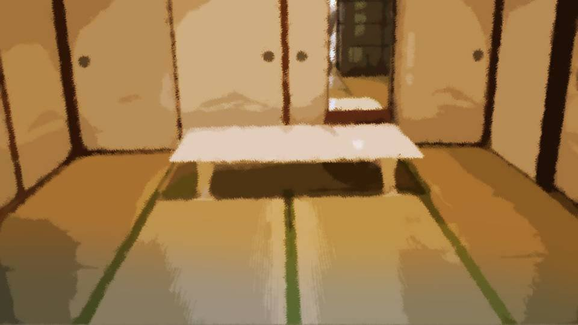
Niimura-senpai doesn't know yet.
Why Mifuyu Niimura died.
Senpai probably thinks she was killed by the culprit or something.
Doesn't she feel any hatred or anger toward that culprit?
Senpai hasn't shown any sign of it this whole time.
Why Mifuyu Niimura died.
Senpai probably thinks she was killed by the culprit or something.
Doesn't she feel any hatred or anger toward that culprit?
Senpai hasn't shown any sign of it this whole time.
Niimura-senpai, doing her best to act cheerful.
Maybe she's being considerate so I won't feel down.
Today Senpai is kinder than usual, so it bothers me a little.
Maybe she's being considerate so I won't feel down.
Today Senpai is kinder than usual, so it bothers me a little.

―Dinner that day was very quiet.
And a heavy, oppressive atmosphere.
Kana-chan kept glancing around, but maybe because she sensed the mood, she stayed silent the whole time.
And a heavy, oppressive atmosphere.
Kana-chan kept glancing around, but maybe because she sensed the mood, she stayed silent the whole time.
Come to think of it, tomorrow was the day we went back to Motoki-cho.
The plan had been to hold the funeral today and finish the whole schedule.
The plan had been to hold the funeral today and finish the whole schedule.
"What's the weather gonna be like tomorrow?"
Niimura-senpai muttered the question to no one in particular.
"Looks like rain from tonight. If it doesn't stop by tomorrow morning... what'll we do? We can't take the buggy out."
"Don't you have a car here?"
"We swapped it for the buggy a few years back. It's easier to get around these mountains that way."
Niimura-senpai muttered the question to no one in particular.
"Looks like rain from tonight. If it doesn't stop by tomorrow morning... what'll we do? We can't take the buggy out."
"Don't you have a car here?"
"We swapped it for the buggy a few years back. It's easier to get around these mountains that way."
If it clears up tomorrow morning, we can go straight back to Motoki-cho.
And visit Kogori-senpai's grave, and have a proper talk with Sis as well...
And visit Kogori-senpai's grave, and have a proper talk with Sis as well...

"Gochisosama desu."
I had just one bowl of rice and set down my chopsticks.
I had just one bowl of rice and set down my chopsticks.
"Huh!?
Whaaat!!?
What's wrong, Goto!? Are you still feeling sick!?"
"No... it's just that I've been putting on a little weight lately..."
"No... it's just that I've been putting on a little weight lately..."
"Whaaat!? Goto-chan's calling herself fat with that body!?
Hey, Papa, what do you think of Goto-chan's figure!?"

"C-cough!"
At Kana-chan's question, Kotaro-san choked spectacularly.
At Kana-chan's question, Kotaro-san choked spectacularly.
"Oh, Kotaro, you have to eat more slowly..."
And Sakura-san patted Kotaro-san on the back.
The eyes of everyone watching softened just a little.
The heavy air grew just a little lighter.
And Sakura-san patted Kotaro-san on the back.
The eyes of everyone watching softened just a little.
The heavy air grew just a little lighter.
"Hey, Papa! How long are you gonna keep taking baths with me!?
Give it 5 more years and I might be boing-boing like Goto-chan!?"

"Mm... what are you talking about?"
"Sis! Actually, today Papa, Goto-chan's―"
"Sis! Actually, today Papa, Goto-chan's―"
"Waaaaah! It's nothing, it's nothing!"
Everyone burst out laughing a little at how flustered he was.
Everyone burst out laughing a little at how flustered he was.
"Mm... everyone knows!? Come on, tell me!"

"Figure it out with your intuition, Sis!
We're the third generation, after all!"
Kana-chan, touching on a blatant taboo.
But everyone already knows about it.
Since everyone knows, it's already a thing of the past.
So everyone turns it into a joke, even if it has to be forced.
Kana-chan, touching on a blatant taboo.
But everyone already knows about it.
Since everyone knows, it's already a thing of the past.
So everyone turns it into a joke, even if it has to be forced.

"Ha ha ha! That's a good one!
There are plenty of people here who can tell by intuition what Kotaro did!"
"Mom, not you too! Cut it out!
Besides, nobody can see the past, and Chigaya and Goto-chan don't have intuition anymore, right!?"
"Mm... did you do something that bad for people to find out about?
Don't tell me it was peeping or something..."
"Oh! Sis's intuition just kicked in!"
"It wasn't peeping! It was an accident!"

"Mm... Goto-chan, was it really an accident!? It wasn't forced!?"
"I... had something like that done to me... even though it was my first time..."
"I... had something like that done to me... even though it was my first time..."

"Mm... Dad! So it was forced after all!?"
At that, everyone except Chiga-nee and Kotaro-san looked down, holding back laughter.
At that, everyone except Chiga-nee and Kotaro-san looked down, holding back laughter.
"Mm... what? What's with this atmosphere..."
At that one remark from Chiga-nee, everyone burst out laughing at once.
Kotaro-san, still looking awkward, and Chiga-nee, with question marks lined up over her head.
At that one remark from Chiga-nee, everyone burst out laughing at once.
Kotaro-san, still looking awkward, and Chiga-nee, with question marks lined up over her head.
It was the first moment since coming here that I could call fun.
If the day ever comes when all these entanglements are resolved, I want to come here again.
Because at heart, the Arata settlement should be a lovely place...
If the day ever comes when all these entanglements are resolved, I want to come here again.
Because at heart, the Arata settlement should be a lovely place...
―Having finished eating, I left the living room ahead of the others and went back to the room.

Through this quiet room echoed the pitter-patter of nature's noise.
Just as Kotaro-san had said, it seemed it would rain tonight.
Just as Kotaro-san had said, it seemed it would rain tonight.
I opened the window and gazed outside.
 video: 雨1.wmv
video: 雨1.wmvThe water drops weighing heavily on the cherry petals fell to the ground, taking the falling rain with them.
And the petals were freed from the weight of the drops, but then the next rain fell, and again it fell to the ground, taking the next rain with it.
The pressure on the petals, repeating one after another without end, for as long as the rain fell.
And the petals were freed from the weight of the drops, but then the next rain fell, and again it fell to the ground, taking the next rain with it.
The pressure on the petals, repeating one after another without end, for as long as the rain fell.
video: 雨1.wmvJust when they seem freed from the weight for an instant, the next weight bears down again.
Which will come first: this rain stopping, or the petals failing to hold out and falling?
No― if those petals could scream― it would be clear right away when they were going to fall.
Which will come first: this rain stopping, or the petals failing to hold out and falling?
No― if those petals could scream― it would be clear right away when they were going to fall.
video: 雨1.wmvEver since I gained that power, I hadn't screamed.
At first, I didn't even notice it was a burden on me.
Only after Kana-chan worried about me did I finally realize something was wrong with me.
At first, I didn't even notice it was a burden on me.
Only after Kana-chan worried about me did I finally realize something was wrong with me.
video: 雨1.wmvBut that's over now as well.
It's over and done with.
It's over and done with.
video: 雨1.wmvSo, truthfully, I'd like to hear more from Kotaro-san and look into the books in the storehouse, but that can wait for another time...
No, should I just leave it alone now?
I can't imagine there are any more secrets, and if Kana-chan is given falsificaso when she has her first period, that's the end of it.
Unless someone uses Droga again, there will never be another curse-killing.
I can't imagine there are any more secrets, and if Kana-chan is given falsificaso when she has her first period, that's the end of it.
Unless someone uses Droga again, there will never be another curse-killing.
video: 雨1.wmvBut Sakura-san still has precognition, and she probably hasn't taken falsificaso.
Most likely, since they live by hunting like this, an ability that can sense danger is precious.
And at her age she probably doesn't plan to have any more children, so maybe it's all right not to cure it, at least for now.
Most likely, since they live by hunting like this, an ability that can sense danger is precious.
And at her age she probably doesn't plan to have any more children, so maybe it's all right not to cure it, at least for now.
 video: 111.wmv
video: 111.wmvJust then, cherry blossoms came fluttering in through the window.
As if fleeing the pressure of the rain, cherry blossoms came fluttering in.
Slightly damp cherry blossoms came dancing lightly in.
As if fleeing the pressure of the rain, cherry blossoms came fluttering in.
Slightly damp cherry blossoms came dancing lightly in.
video: 111.wmvWhy?
Even though it's raining... why?
Even though it's raining... why?
video: 111.wmvA single petal landed on my palm.
On that petal...
On that petal...
video: 111.wmvred blood.
video: 111.wmv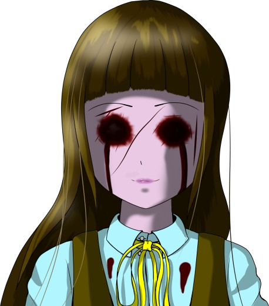
"What are you brooding about?"
............!!??
............!!??
"What's the matter, so startled? Is my face that frightening?"
No way! I haven't fallen asleep yet! This can't be a dream!
No way! I haven't fallen asleep yet! This can't be a dream!
"Wh-why...!"
"Why? I've been right beside you all along. I'm the only one who can help you, after all."
"I'm already saved, aren't I!? Even my eye color's been cured!"
"Did you think everything would be over once your eye color went back? Honestly, pitiful Third Generation..."
"Why? I've been right beside you all along. I'm the only one who can help you, after all."
"I'm already saved, aren't I!? Even my eye color's been cured!"
"Did you think everything would be over once your eye color went back? Honestly, pitiful Third Generation..."
"Stop calling me that! I'll call for help!?"
"Hee hee hee hee. What's wrong, why so frightened?"
"This is a hallucination! It's just a hallucination!"
"Is it? Then try stabbing me. If I'm a hallucination, I'll vanish. If I don't vanish, you are a murderer."
"Hee hee hee hee. What's wrong, why so frightened?"
"This is a hallucination! It's just a hallucination!"
"Is it? Then try stabbing me. If I'm a hallucination, I'll vanish. If I don't vanish, you are a murderer."

That person pressed that knife into my hand again.
"I-it's not like stabbing you would bother me at all!
Hurry up and disappear from in front of me!"
"Everyone spouts all those pretty words, but lives are unequal after all. I understand your suffering, so I want to help. A being only you can save is very precious, don't you think?"
"Everyone spouts all those pretty words, but lives are unequal after all. I understand your suffering, so I want to help. A being only you can save is very precious, don't you think?"
"I'm not asking for help!
What I want most is for you to disappear!"
"Then hurry up and stab me... What are you hesitating for? You killed three people just a moment ago..."
"That was a dream, wasn't it!? This has to be a dream too!"
"Hee hee hee... Really, Third Generation... what an adorable child you are... What might that be, in your hand with the knife?"
"Then hurry up and stab me... What are you hesitating for? You killed three people just a moment ago..."
"That was a dream, wasn't it!? This has to be a dream too!"
"Hee hee hee... Really, Third Generation... what an adorable child you are... What might that be, in your hand with the knife?"
"Th-this is...!"
"Which is the dream and which is reality... you were thinking something foolish like that, weren't you? Both... are reality."
"It's a lie! Everyone was alive just now, and we even talked!"
"Which is the dream and which is reality... you were thinking something foolish like that, weren't you? Both... are reality."
"It's a lie! Everyone was alive just now, and we even talked!"
"You heard it earlier, didn't you? Droga stays in the body as spores.
Those spores release ephedrine.
Ephedrine is the precursor of methamphetamine, which is famous as a stimulant.
You've been out of your mind all along."
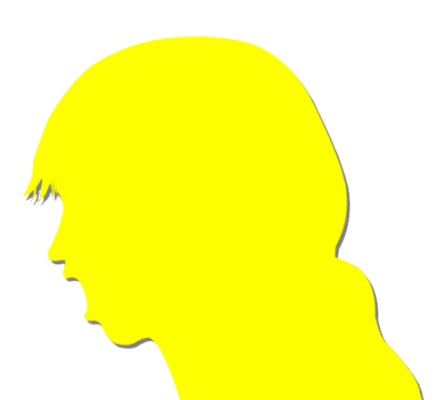
"It's a lie...
it's a lie...!"
"You're no different from a drug addict. That's why you can't see the line between dreams and reality anymore. You've already been possessed by the cherry trees."
"You're no different from a drug addict. That's why you can't see the line between dreams and reality anymore. You've already been possessed by the cherry trees."
"If you say any more...!
I'll really stab you!"
"Oh... you poor thing... Third Generation... how adorable..."
"Oh... you poor thing... Third Generation... how adorable..."
"Aaagh!"
"G...
Goto... you..."
The knife I had driven in was buried deep in Niimura-senpai's stomach.
"If it were me... you... I could help..."
"Ah... aaah...!"
The knife I had driven in was buried deep in Niimura-senpai's stomach.
"If it were me... you... I could help..."
"Ah... aaah...!"
Senpai fell straight onto her back.
"Goto... you...
so you went through... that much pain...
for not being able to help you... I'm sorry..."
"No...
that's not it!
Senpai, I..."
But with those as her last words, Niimura-senpai gave out.
I'm... not normal after all...
But with those as her last words, Niimura-senpai gave out.
I'm... not normal after all...
"My, my... out of your mind, just as I thought."
"Just... be quiet..."
"If it were me, I could help you..."
"Be quiet..."
"All you have to do is say 'help me'..."
"I don't want help from someone like you...!"
"Just... be quiet..."
"If it were me, I could help you..."
"Be quiet..."
"All you have to do is say 'help me'..."
"I don't want help from someone like you...!"
"Third Generation...
you poor thing."
"Don't call me by that name!"

"Goto...
-chan..."
The knife plunged into the left side of the chest of Kana-chan, who was just a little shorter than me.
And just like that, she fell to the floor.
And just like that, she fell to the floor.
"Ha...
ha ha...
ha ha ha!
I get it... this is a dream too! It's all a dream!"
"I understand how you feel.
But for you, there is no dream and no reality.
What's in front of your eyes is everything."
"Shut up!"
"Who are you going to stab to death this time?
Chiga-nee? Sakura-san?"
"Gh...!"
The tragedy that had happened twice in a row stopped my hand.
"That's why... I can help you."
"............ What do I do... to be saved?"
"Gh...!"
The tragedy that had happened twice in a row stopped my hand.
"That's why... I can help you."
"............ What do I do... to be saved?"
"You just have to take those eyes out.
Then you won't have to be frightened of hallucinations, or shed any tears."
If I take my eyes out... this tragedy will end...?
With just that, everything will be over...?
If I take my eyes out... this tragedy will end...?
With just that, everything will be over...?
I tried bringing the tip of the knife close to my eye.
Driving something like this into my eye...
"It only hurts at first. I can do it for you, if you'd like?"
"............ It's fine, I'll do it myself."
"All right."
Driving something like this into my eye...
"It only hurts at first. I can do it for you, if you'd like?"
"............ It's fine, I'll do it myself."
"All right."
"But...
before that, tell me.
Who are you?"
"Me? I'm a being born for no other reason than to rescue you. I thought you'd be figuring out who I am about now, though..."
"Me? I'm a being born for no other reason than to rescue you. I thought you'd be figuring out who I am about now, though..."
"...I see..."
"So what will you do? Are you really going to do it, your eyes?"
"Why are you asking that now?"
"Are you really going to do it?"
"I said, why are you asking that!?"
"Answering a question with a question? I hate that."
"So what will you do? Are you really going to do it, your eyes?"
"Why are you asking that now?"
"Are you really going to do it?"
"I said, why are you asking that!?"
"Answering a question with a question? I hate that."
"............
I'm doing it, so don't get in my way."
I took a deep breath.
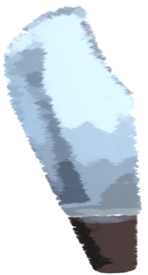
Then I slowly brought the tip of the blade toward my eye.
"Stab the eyeball straight off and it'll hurt. It's easier to go all in, eyelid and all."
"............"
"Stab the eyeball straight off and it'll hurt. It's easier to go all in, eyelid and all."
"............"
I changed the blade's path to my upper eyelid.
Slowly, I pressed the tip of the blade to my eyelid.
I meant to stab it in only lightly, but the razor-sharp blade slid right through the skin tissue of my eyelid.
I felt a slight pain and could tell blood was faintly seeping out.
My hand trembled.
Am I really going to take out my eye...?
Slowly, I pressed the tip of the blade to my eyelid.
I meant to stab it in only lightly, but the razor-sharp blade slid right through the skin tissue of my eyelid.
I felt a slight pain and could tell blood was faintly seeping out.
My hand trembled.
Am I really going to take out my eye...?
"Hah...
hah..."
"That's it, take a slow, deep breath... It's all right, there's nothing to be afraid of."
That person, in the gentlest, most enchanting voice yet, whispered to me.
That voice made up my mind.
In one go... in one go, I'll stab it in!
"That's it, take a slow, deep breath... It's all right, there's nothing to be afraid of."
That person, in the gentlest, most enchanting voice yet, whispered to me.
That voice made up my mind.
In one go... in one go, I'll stab it in!

"Whoa, what a downpour..."
Beside me was Niimura-senpai, gazing at the rain outside.
Huh?
What about the person from before?
What about Senpai's wound?
The knife?
Beside me was Niimura-senpai, gazing at the rain outside.
Huh?
What about the person from before?
What about Senpai's wound?
The knife?
Had I been in a dream, still looking outside?
But something was clutched in my hand.
But something was clutched in my hand.
It was a cherry petal with blood on it.
"S...
Senpai..."
"Hm?"
I showed the cherry blossom to Senpai.
"............? What's wrong?"
............ Huh?
The petal... was gone.
"............? What's wrong?"
............ Huh?
The petal... was gone.

"Goto, if you're still tired, why not get some rest early?
You don't seem to have much of an appetite, either..."
"............ That's... right... Ha! That's right! Ah ha ha ha ha ha ha!"
I forced myself to flash a big grin at Senpai.
The muscles in my cheeks trembled.
It's a dream... it has to be a dream!
"............ That's... right... Ha! That's right! Ah ha ha ha ha ha ha!"
I forced myself to flash a big grin at Senpai.
The muscles in my cheeks trembled.
It's a dream... it has to be a dream!
―Niimura-senpai went to bed early to be ready for tomorrow's trip.
Following her lead, I got into my futon as well.
Following her lead, I got into my futon as well.
video: 雨1.wmvThe rain wouldn't stop.
How many drops of rain were beating on the roof every second?
My attention was on the sound of the rain to the point that I could tell.
How many drops of rain were beating on the roof every second?
My attention was on the sound of the rain to the point that I could tell.
video: 雨1.wmvWhy does my mind go to the sound of the rain?
Simply because I'm afraid to sleep.
Simply because I'm afraid to sleep.
video: 雨1.wmvWhat if that girl appears again and goes after my eyes?
What if she's trying to take my eyes by dangling the lives of the people I care about?
The things that happened in the dream were gradually taking on a sense of reality.
What if she's trying to take my eyes by dangling the lives of the people I care about?
The things that happened in the dream were gradually taking on a sense of reality.

My phone went off.
Maybe thanks to silent mode, there was no sign of Niimura-senpai waking up.
Could that girl be using the phone to get close to me this time?
Maybe thanks to silent mode, there was no sign of Niimura-senpai waking up.
Could that girl be using the phone to get close to me this time?
Judging from the way it vibrated, it wasn't a call but a message.
If I don't look at it, won't that girl call me next?
Better to deal with this kind of thing quickly.
Don't be afraid. I mustn't listen to anything that girl says.
If I don't look at it, won't that girl call me next?
Better to deal with this kind of thing quickly.
Don't be afraid. I mustn't listen to anything that girl says.
............
I looked at the screen and let out a big sigh.
It was from Sis.
But what could she want?
Nervously, I opened the message.
It was from Sis.
But what could she want?
Nervously, I opened the message.
“Tomorrow night it'll be just the two of us at home. Anything you want to eat?”
Sis...
It really did seem to be a message from Sis.
It was the first time I'd ever gotten a message like this from Sis.
Sis...
It really did seem to be a message from Sis.
It was the first time I'd ever gotten a message like this from Sis.
I wrote a reply right away.
Happy as I was about the message from Sis, I was also trying to distract myself from this fear.
Happy as I was about the message from Sis, I was also trying to distract myself from this fear.
“Eating out would be nice.”
“Eating out: rejected. No restaurant stocks Super Soda Bomber.”
“Then takeout beef bowls.”
“How many?”
“3 extra-large”
“Eating out: rejected. No restaurant stocks Super Soda Bomber.”
“Then takeout beef bowls.”
“How many?”
“3 extra-large”
“Is 3 enough?”
“Yeah. I might not have much of an appetite.”
“Got it. See you tomorrow.”
“Good night.”
“Good night.”
“Yeah. I might not have much of an appetite.”
“Got it. See you tomorrow.”
“Good night.”
“Good night.”
This exchange, too, was over in about 3 minutes.
Morning was still 8 hours away.
It looked like a very long night was about to begin.
Morning was still 8 hours away.
It looked like a very long night was about to begin.
My phone went off again.
Another message.
Who is it this time...?
Besides Sis, anyone who might send me a message at this hour would be―
Another message.
Who is it this time...?
Besides Sis, anyone who might send me a message at this hour would be―
“Are you really okay? Think you can sleep?”
Sis had sent me another message.
Sis had sent me another message.
“A little scared.”
............ The read receipt appeared, but a reply was slow to come.
Then a short reply came.
............ The read receipt appeared, but a reply was slow to come.
Then a short reply came.
“Want to call?”
“With you, Sis?”
“Yeah”
“Is that okay?”
“Just for a little while.”
“With you, Sis?”
“Yeah”
“Is that okay?”
“Just for a little while.”
I got up, took my phone, and slipped quietly out of the room.
Then, careful not to make any footsteps, I slowly went down the stairs and headed for the veranda.
Sis... is going to help me.
Then, careful not to make any footsteps, I slowly went down the stairs and headed for the veranda.
Sis... is going to help me.
―We were sitting around the table in the living room.
The air had finally settled, and the mood was right for hearing them out.
Here were the five of us: me, Kana-chan, Kotaro-san, the old lady, and Sakura-san.
The air had finally settled, and the mood was right for hearing them out.
Here were the five of us: me, Kana-chan, Kotaro-san, the old lady, and Sakura-san.

"I haven't introduced myself yet. I'm Kotaro's mother, Erika Niimura.
You kindly came all this way for the funeral, and you've had such a hard time of it..."
"No, I'm the one who caused trouble. I'm truly sorry."
"No, I'm the one who caused trouble. I'm truly sorry."
"Now then, where should I even start... You've looked through most of the books in the storehouse, right?"
"I read up properly on Droga and Green-Eye Curse-Killing."
"Then let me explain that part properly. It'll double as a review."
"I read up properly on Droga and Green-Eye Curse-Killing."
"Then let me explain that part properly. It'll double as a review."
"―It was spring, 10 years ago."

"All of a sudden, Chigaya tried to stab Sakura with a knife.
Somehow I pulled Chigaya off her, but even then, Chigaya kept trying, relentlessly, to kill Sakura.
So I had no choice but to knock Chigaya out. But what to do from there?"

"At Mom's suggestion, we decided to confine Chigaya in the underground storeroom."
"Confine her!?"
"Yeah. On top of that, it was night at the time, and taking her to a hospital would have taken a while. We decided to keep an eye on her underground for the night."
"Confine her!?"
"Yeah. On top of that, it was night at the time, and taking her to a hospital would have taken a while. We decided to keep an eye on her underground for the night."
"Why confine her underground?"
"We didn't want the residents to find out. They're friendly to outsiders now, but back then they were still very wary, the type to be frightened by even the slightest threat. It was underground so we wouldn't scare everyone."
"We didn't want the residents to find out. They're friendly to outsiders now, but back then they were still very wary, the type to be frightened by even the slightest threat. It was underground so we wouldn't scare everyone."
"After we took Chigaya underground, I left Chigaya with Mom and went to the archive room in the storehouse.
What I found there was
that book on Green-Eye Curse-Killing."
"So until then, nobody knew about Green-Eye Curse-Killing?"
"Yeah. It was a curse hidden in green eyes that even Mom didn't know about."
"Yeah. It was a curse hidden in green eyes that even Mom didn't know about."

"In that archive room there's a research report on Droga. Did you see that?"
"No, not yet, but I did see a book called 'The Droga Refining Method.'"
"No, not yet, but I did see a book called 'The Droga Refining Method.'"
"I see. Then what about falsificaso?"
"Yes, I checked that too."
"Yes, I checked that too."

"Apparently Droga passes across generations, infecting other people.
There are three generations in all.
The first generation: anyone who used Droga directly.
The second generation: anyone whose mucous membranes of the head touched more than a certain amount of fresh-shed blood from the first generation.
The third generation: anyone whose mucous membranes of the head touched more than a certain amount of fresh-shed blood from the second generation."
The first generation: anyone who used Droga directly.
The second generation: anyone whose mucous membranes of the head touched more than a certain amount of fresh-shed blood from the first generation.
The third generation: anyone whose mucous membranes of the head touched more than a certain amount of fresh-shed blood from the second generation."
"The first generation gains superhuman strength for a set time after a dose.
The second generation can sense danger when the circumstances in which they were splashed with the blood are recreated.
The third generation can always sense danger, regardless of conditions like the second generation's."
The second generation can sense danger when the circumstances in which they were splashed with the blood are recreated.
The third generation can always sense danger, regardless of conditions like the second generation's."
"But the third generation has traits the second generation doesn't.
・Only girls who have had their first period gain precognition (males too, if in a bleeding state)
・From the moment of touching the blood, one eye turns green
・After the first period, on sensing the precognition of the second or third generation, one is seized by unbearable murderous intent"
・Only girls who have had their first period gain precognition (males too, if in a bleeding state)
・From the moment of touching the blood, one eye turns green
・After the first period, on sensing the precognition of the second or third generation, one is seized by unbearable murderous intent"
"What about the mechanism?
There's a proper reason the effects differ between generations, right?"
"When you take Droga, a substance called ephedrine activates the sympathetic nerves, and for about 10 minutes you get superhuman strength and dynamic vision far beyond the ordinary. But even after the effect wears off, Droga's residual substances stay in the body until death. You awaken to sensing danger by touching those residual substances with the mucous membranes of the face―the eyes or the lips. That's the second generation."
"When you take Droga, a substance called ephedrine activates the sympathetic nerves, and for about 10 minutes you get superhuman strength and dynamic vision far beyond the ordinary. But even after the effect wears off, Droga's residual substances stay in the body until death. You awaken to sensing danger by touching those residual substances with the mucous membranes of the face―the eyes or the lips. That's the second generation."
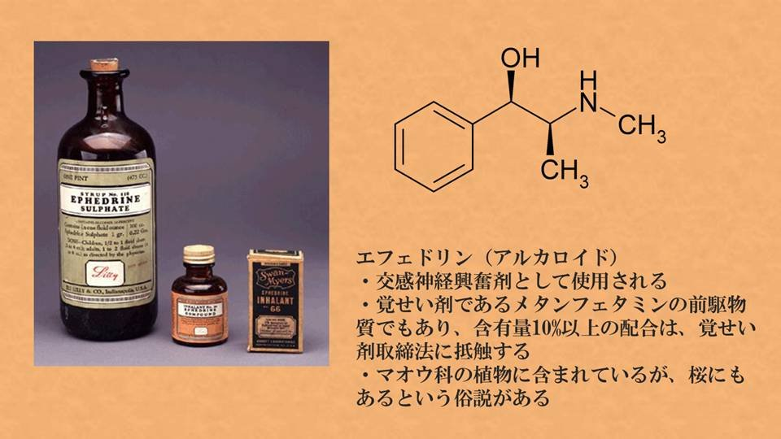
"But apparently the ephedrine in the Arata cherry has a slightly different molecular structure.
Taking the A of Arata, they called this ephedrine unique to the Arata cherry A-ephedrine―
and from that, apparently, alpha-ephedrine.
Droga's basic effect is that alpha-ephedrine powerfully activates the sympathetic nerves.
And that alpha-ephedrine is secreted by the spores contained in Droga."
"Spores? Spores, as in the seeds of molds and fungi?"
"Yeah, Droga has... what was it... apparently it contains a large amount of spores from a fungus called something-or-other, the traditional name for the Arata cherry. When those spores get inside a human body, they put out tiny micron-sized sprouts. Those are what secrete the alpha-ephedrine―that was the theory, if I remember right."
"Yeah, Droga has... what was it... apparently it contains a large amount of spores from a fungus called something-or-other, the traditional name for the Arata cherry. When those spores get inside a human body, they put out tiny micron-sized sprouts. Those are what secrete the alpha-ephedrine―that was the theory, if I remember right."
"Doesn't that mean it's 'parasitizing' humans?
Maybe that has something to do with the Arata cherry's life cycle."
"True, if you think of it as infection through blood happening across up to three generations, you could see it that way..."
"True, if you think of it as infection through blood happening across up to three generations, you could see it that way..."
"Hey, I have no idea what you're talking about..."
"Me neither..."
"Same here."
"Well, theory aside, if you get splashed with the blood of someone who used Droga, precognition kicks in.
And get splashed in turn with that person's blood, and you get what happened to Goto-chan. That much should do.
Those aren't curses. They've been scientifically verified."
"I see. So there was a proper basis that explains curse-killing, huh. Which means... Sakura, there's something I have to ask you."
"I see. So there was a proper basis that explains curse-killing, huh. Which means... Sakura, there's something I have to ask you."
"The first generation was Eiichiro.
I was being bullied at school back then, and trying to help me, what he found was..."
"'The Droga Refining Method,' huh."
"He did not call it 'Droga,' but that is probably what it was. But when Eiichiro made a trial batch of something like Droga, I don't know if it was a side effect, but he went berserk and hurt..."
"'The Droga Refining Method,' huh."
"He did not call it 'Droga,' but that is probably what it was. But when Eiichiro made a trial batch of something like Droga, I don't know if it was a side effect, but he went berserk and hurt..."
"Why did you keep quiet until now?"
"Because... Eiichiro broke the rule..."
"Because... Eiichiro broke the rule..."
"Kotaro, this isn't the place to blame her. That was something Eiichiro did on his own.
Even if it meant breaking the rule, he must have wanted to protect Sakura."
"Well, that's just like him.
Sakura kept quiet all this time to cover for Eiichiro breaking the rule, then."
"I'm sorry..."
"That's just like you, too."
"That's just like you, too."
Problems like these aren't mine to stick my nose into.
But there's something I absolutely have to get to the bottom of.
That's why I didn't bring Niimura-senpai here.
But there's something I absolutely have to get to the bottom of.
That's why I didn't bring Niimura-senpai here.
"Kana-chan, the talk's over now, so go back to your room."
"Huh?"
"Hurry, out. Get out."
"Okay..."
In a firm tone, I urged Kana-chan to leave the room.
"Hurry, out. Get out."
"Okay..."
In a firm tone, I urged Kana-chan to leave the room.
"Then please tell me.
10 years ago, who sent Droga to Mifuyu Niimura-san?"
Someone must have sent her Droga.
Someone must have sent her Droga.
"Goto-chan, how do you know about that..."
"4 days ago, on April 8, Kogori-senpai and her father, and Mifuyu Niimura-san died. I'm asking who caused it."
I had no intention of holding back.
I drove a hard glare into the three of them, so much older than me.
Pierced by that glare, the three of them froze, unable even to blink.
"4 days ago, on April 8, Kogori-senpai and her father, and Mifuyu Niimura-san died. I'm asking who caused it."
I had no intention of holding back.
I drove a hard glare into the three of them, so much older than me.
Pierced by that glare, the three of them froze, unable even to blink.
"Mifuyu Niimura-san used Droga to kill Kogori-senpai, and tried to kill me too.
But thanks to my intuition, I got away.
That's when I sensed it. That she would burn herself to death to destroy the Droga in her body."
"Do you two know something?"
The old lady, too, turned her eyes on Kotaro-san and Sakura-san.
The old lady, too, turned her eyes on Kotaro-san and Sakura-san.
"It is true that I sent supplies to Mifuyu-chan 10 years ago.
But what I sent was a nata and a mace, and red robes and a Noh mask.
So that she could sell them and help with her living costs, even a little."
"You didn't send Droga?"
"You didn't send Droga?"
"I knew about falsificaso, but today was the first time I heard the name Droga.
Eiichiro's trial batch was the only time I ever saw anything like it...
I did not know something like that could be made from the Arata cherry."
"The one who sent Droga was...
me.
Sakura didn't know. I kept it from her.
Back then, with Chigaya in the state she was in, I needed to make sure falsificaso was really safe to use on a human body.
Sakura had also told me what kind of life Mifuyu-chan and Haruka-chan were living in Megasawa."
"In that case, Droga would be something Mifuyu-chan needed, and I sent falsificaso too, calling it the antidote."
"And then the Megasawa City case happened, and you were convinced the experiment was a success? So you used falsificaso on Chigaya... You utter fool! I've been telling you for years not to use Droga!"
"And then the Megasawa City case happened, and you were convinced the experiment was a success? So you used falsificaso on Chigaya... You utter fool! I've been telling you for years not to use Droga!"
"Say whatever you want! To save Chigaya and Sakura, this was the only...!"
"Ugh...! Honestly..."
The old lady made no attempt to blame him any further.
Judging Kotaro-san, who had been forced into a difficult choice, was not something that could be done on the spot.
"Ugh...! Honestly..."
The old lady made no attempt to blame him any further.
Judging Kotaro-san, who had been forced into a difficult choice, was not something that could be done on the spot.
But something about that just now nags at me.
Mifuyu Niimura burned herself to death to destroy the Droga in her body.
Even if, at worst, she meant to kill herself, with falsificaso she wouldn't have had to go out of her way to choose the agony of burning to death.
Why didn't Mifuyu Niimura use falsificaso?
Mifuyu Niimura burned herself to death to destroy the Droga in her body.
Even if, at worst, she meant to kill herself, with falsificaso she wouldn't have had to go out of her way to choose the agony of burning to death.
Why didn't Mifuyu Niimura use falsificaso?
"You brothers stop at nothing for the people you want to help..."
"Mom... do you think all lives are equal?"
"No, I don't. I'd choose you, my family, over the lives of strangers, and I hunt animals to feed the people of the settlement. What I'm saying is, why didn't you talk it over with me?"
"Mom... do you think all lives are equal?"
"No, I don't. I'd choose you, my family, over the lives of strangers, and I hunt animals to feed the people of the settlement. What I'm saying is, why didn't you talk it over with me?"
"And what would you have done then..."
"I'd have made myself the test subject for the drug, or anything else."
"That's...!"
"This is the result of what you did! Six dead in Megasawa City, three in Motoki-cho, and what happened last night? If that's how it is, using just my one life would have been far better!"
"I'd have made myself the test subject for the drug, or anything else."
"That's...!"
"This is the result of what you did! Six dead in Megasawa City, three in Motoki-cho, and what happened last night? If that's how it is, using just my one life would have been far better!"
Before I knew it, the exchange between those two had weakened my glare.
I understood the situation, more or less.
Right now, I have to somehow bring these two together.
They both hold the same values, yet they chose different methods.
Settling a dispute like this is harder than reconciling people whose values differ.
I understood the situation, more or less.
Right now, I have to somehow bring these two together.
They both hold the same values, yet they chose different methods.
Settling a dispute like this is harder than reconciling people whose values differ.
"Uh...
Mother, Kotaro..."
In the hostile atmosphere, Sakura-san spoke up in a thin voice.
In the hostile atmosphere, Sakura-san spoke up in a thin voice.
"All lives...
are equal."
Sakura-san had just flatly rejected the values of both of them.
To a parent, a child's life should be more precious than anything.
Sakura-san, with two daughters, should understand that too, but...
Sakura-san had just flatly rejected the values of both of them.
To a parent, a child's life should be more precious than anything.
Sakura-san, with two daughters, should understand that too, but...
"Kotaro and Mother, I think you care about this settlement and this family more than anyone.
But... even strangers have families. Even animals do.
To them, their own families must matter far more than we do."
"The people who died in Megasawa, Kogori-san and his daughter, who died in Motoki-cho, and Mifuyu-chan.
Could you say to the families grieving their deaths, 'Our family is more important than your family'?"
"I can understand the view that, to a single individual, lives are unequal.
But... that does not make anyone's death acceptable.
Even animals do not kill other animals more than they need to.
Kotaro, did you think of any way other than sending Droga to Mifuyu-chan?"
"...That was the only thing I could think of."
"If you had talked it over with someone else, you might have come up with another way."
"But then...! Everyone else would have been wary of Chigaya! The book in the storehouse even said 'Kill the green-eyed girl'!"
"If you had talked it over with someone else, you might have come up with another way."
"But then...! Everyone else would have been wary of Chigaya! The book in the storehouse even said 'Kill the green-eyed girl'!"
"Then if you had at least told just me or Mother, 'I'm sending Droga to Mifuyu-chan'...!"
"Would telling you have changed anything...?"
"Would telling you have changed anything...?"
"I don't know... But it might have turned out better than you, Kotaro, agonizing over it alone.
Lives are equal, and unequal.
So we should have thought of a way to make lives as equal as we could.
Because it is so much better for lives to be equal than unequal..."
"One for all, all for one, huh..."
"So the wisdom of our ancestors isn't to be scoffed at after all..."
"So the wisdom of our ancestors isn't to be scoffed at after all..."
As an outsider, all I could do was listen.
But what I can say is that they had no choice but to make sacrifices for the people they wanted to help.
Both Kotaro-san and Mifuyu Niimura dirtied their own hands to save their families, and then it came to that...
But Sakura-san is saying that using the word family as a shield is wrong.
If they had only said a word to someone...
But what I can say is that they had no choice but to make sacrifices for the people they wanted to help.
Both Kotaro-san and Mifuyu Niimura dirtied their own hands to save their families, and then it came to that...
But Sakura-san is saying that using the word family as a shield is wrong.
If they had only said a word to someone...
Just then, someone came into the living room.

"Chigaya, you..."
"You were listening..."
And Chiga-nee dropped to her knees right there.
"You were listening..."
And Chiga-nee dropped to her knees right there.
"Mm... I...
so many people, to save me..."
"Chigaya, that's not how it is. You have had that constitution since you were born..."
"Mm... Even now, I think about it. Back then, how could I have held down the urge to kill Mom?"
"Chigaya, that's not how it is. You have had that constitution since you were born..."
"Mm... Even now, I think about it. Back then, how could I have held down the urge to kill Mom?"
"Chiga-nee, that's impossible...
There's no way anyone could hold back something like that..."
"Mm... But... but the reason I can be here like this now is that so many people were sacrificed. My life is something built up out of so many equal lives, isn't it?"
"Mm... But... but the reason I can be here like this now is that so many people were sacrificed. My life is something built up out of so many equal lives, isn't it?"
With that, Chiga-nee, still on her knees, bowed her head to the floor before me.

"Mm... Goto-chan... I'm sorry.
Because I was saved...
Goto-chan's dear one, and Goto-chan herself, both ended up like that..."
"Chiga-nee... I know it's impossible to endure that murderous intent. Not one person committed murder gladly. That's the only saving grace..."
"Chiga-nee... I know it's impossible to endure that murderous intent. Not one person committed murder gladly. That's the only saving grace..."
Saving the people you want to save is very hard.
All the more when a life is at stake.
When exceptional ethics go beyond what the law anticipates, this is what happens.
All the more when a life is at stake.
When exceptional ethics go beyond what the law anticipates, this is what happens.
Even the law isn't perfect.
It's an imperfect thing, built up by all of humanity trying to be right.
Proof of having tried to be right.
If you twist it with selfish justice, with talk of love and family―
It's an imperfect thing, built up by all of humanity trying to be right.
Proof of having tried to be right.
If you twist it with selfish justice, with talk of love and family―
That's why I hate this kind of selfish justice.
Running into a wall the law can do nothing about, having no choice but to turn to crime― that I can understand.
But calling it justice is wrong.
Because then ethics get twisted, self-righteous morality runs on ahead, and exceptions happen one after another.
Running into a wall the law can do nothing about, having no choice but to turn to crime― that I can understand.
But calling it justice is wrong.
Because then ethics get twisted, self-righteous morality runs on ahead, and exceptions happen one after another.
Those many exceptions brought about the Megasawa City case and the Motoki-cho case.
That's why I hate justice that uses a pristine word like family as a shield.
In the end, the ones sacrificed to this warped justice were uninvolved people in Megasawa City and Motoki-cho.
That's why I hate justice that uses a pristine word like family as a shield.
In the end, the ones sacrificed to this warped justice were uninvolved people in Megasawa City and Motoki-cho.
And the very family they meant to protect―Chiga-nee's heart.
The one suffering most right now is Chiga-nee.
The one suffering most right now is Chiga-nee.
"Mm... Dad, Mom, Grandma...
I think my life... is heavier than anyone's.
My life, which goes on at the cost of so many people, is very heavy.
So... in return, I want to help other people, people I don't know."
"Mm... I'm... going abroad to study welfare, right?
I've always wanted to help as many people as I could.
Maybe somewhere in my heart I'd noticed how heavy this life is.
I know doing that is just a self-righteous idea of justice, but...
even so, if I can use my life for many other lives―"
"A heavy life means I'm carrying a sin just as heavy.
So from now on, I want to help strangers all over the world, even if only a little.
If even a heavy life is equal, then I want to live for other lives.
Because that's the least I can do to make amends..."
No one had any words left to give back to Chiga-nee.
Then Chiga-nee bowed her head to everyone.
"Mm... All of this for me... I am so sorry. This life that stands on the sacrifice of so many people, this whole life of mine... I will never let it go to waste."
"Mm... All of this for me... I am so sorry. This life that stands on the sacrifice of so many people, this whole life of mine... I will never let it go to waste."

 video: 桜.wmv
video: 桜.wmv
―I have the same intuition as Kogori-senpai, too...?
video: 桜.wmvI escaped the attack by a hair's breadth, and the mace smashed into the asphalt.
video: 桜.wmv
But the strange figure turned toward me at once and raised the nata this time.
video: 桜.wmvOnce again, the strange figure's attack cut through empty air.
The nata swung as if to avoid hitting me.
No, that's not it. I dodged it.
The nata swung as if to avoid hitting me.
No, that's not it. I dodged it.
video: 桜.wmvIt's not that I've acquired some special reflexes.
I can tell.
I can tell what danger is about to befall me.
I can tell.
I can tell what danger is about to befall me.
video: 桜.wmv
Look, next the mace goes up.
video: 桜.wmv2.2354 seconds later, it comes swinging down at the crown of my head.
But if I move more than 48.5300 centimeters to the right, the strange figure's attack will cut through empty air again.
But if I move more than 48.5300 centimeters to the right, the strange figure's attack will cut through empty air again.
video: 桜.wmvSee? I can tell.
video: 桜.wmv"Gh...! Why...!"
That voice...
I see. The moment I hear her voice, I can also foresee the danger about to befall this person.
That voice...
I see. The moment I hear her voice, I can also foresee the danger about to befall this person.
video: 桜.wmv"Do you intend to kill me, Niimura-senpai's mother?"
video: 桜.wmv"Wha...!"
I couldn't see the expression under the Noh mask.
But as long as I can hear the voice, I can tell her future.
I couldn't see the expression under the Noh mask.
But as long as I can hear the voice, I can tell her future.
 video: 桜.wmv
video: 桜.wmvAt my feet lay Kogori-senpai, her head gone.
Did you hate Kogori-senpai that much?
Are you killing me so that I won't deduce the truth?
How naive of you. I no longer have any need for deduction.
Did you hate Kogori-senpai that much?
Are you killing me so that I won't deduce the truth?
How naive of you. I no longer have any need for deduction.
video: 桜.wmv"Mifuyu Niimura-san, with you doing something like this, Eiichiro Niimura-san would be in tears, wouldn't he?"
"H-how do you know that...!?"
A trembling voice. A cowering voice. A voice in terror of me.
She was afraid of me.
"H-how do you know that...!?"
A trembling voice. A cowering voice. A voice in terror of me.
She was afraid of me.
video: 桜.wmv"Will you kill me?
But you can't move anymore, can you?
If you move any more, the drug will leave the muscles all over your body in shreds."
I took out the kitchen knife I had tucked inside my clothes and held it up for Mifuyu Niimura to see.
I took out the kitchen knife I had tucked inside my clothes and held it up for Mifuyu Niimura to see.
video: 桜.wmv
"Will you run?
video: 桜.wmv Will you fight?
Will you turn yourself in?"
video: 桜.wmvI gripped the knife and stepped toward Mifuyu Niimura.
In step with me, Mifuyu Niimura backed away like a magnet.
In step with me, Mifuyu Niimura backed away like a magnet.
video: 桜.wmvIt's not that I've gained physical abilities like hers.
It's just that I can tell. What threat is coming down on me next.
I don't even question why I can tell these things.
It feels as if I've had this ability since the day I was born.
It's just that I can tell. What threat is coming down on me next.
I don't even question why I can tell these things.
It feels as if I've had this ability since the day I was born.
video: 桜.wmvAnd it isn't something momentary and vague like Kogori-senpai's.
Yes, a perfect danger-sense ability, as if every weakness of Kogori-senpai's intuition had been swept away.
Yes, a perfect danger-sense ability, as if every weakness of Kogori-senpai's intuition had been swept away.
video: 桜.wmv"You intend to run away, taking Niimura-senpai with you.
Where are you going?"
video: 桜.wmv
On hearing that, Mifuyu Niimura sank heavily to her knees.
What's unfortunate is that I can't see her past.
If only I could see it, I'd know why she did this.
What's unfortunate is that I can't see her past.
If only I could see it, I'd know why she did this.
video: 桜.wmvMifuyu Niimura stood up and started running somewhere.
I see. Suicide, to destroy the evidence, is it?
Burning yourself to death, to erase the drug in your body.
That's fine. Do as you please. There's no way for you to be saved anyway.
I see. Suicide, to destroy the evidence, is it?
Burning yourself to death, to erase the drug in your body.
That's fine. Do as you please. There's no way for you to be saved anyway.
video: 桜.wmv"Whew, what a hassle..."
I watched her go and wiped off Kogori-senpai's blood, smeared thick across my face.
Now, what should I do from here?
If I call the police while still holding the knife, they'll suspect me of being the culprit.
I watched her go and wiped off Kogori-senpai's blood, smeared thick across my face.
Now, what should I do from here?
If I call the police while still holding the knife, they'll suspect me of being the culprit.
video: 桜.wmvHuh?
Why, when Kogori-senpai has died, is no sadness or anger welling up in me?
No... it must be me who's strange by now.
Gaining an ability like this is abnormal in itself.
I've become so strange that I'm only now noticing it.
Why, when Kogori-senpai has died, is no sadness or anger welling up in me?
No... it must be me who's strange by now.
Gaining an ability like this is abnormal in itself.
I've become so strange that I'm only now noticing it.
video: 桜.wmvKogori-senpai, I am no longer afraid.
I think that until now, I was dependent on you.
I needed someone who would accept me. I needed a place to belong.
I think that until now, I was dependent on you.
I needed someone who would accept me. I needed a place to belong.
video: 桜.wmvThank you for all you have done for me until now.
With this power I inherited from you, I will go on living.
Nor do I need to depend on Niimura-senpai anymore.
And above all... you died for me...
With this power I inherited from you, I will go on living.
Nor do I need to depend on Niimura-senpai anymore.
And above all... you died for me...
and I am as happy as I could be.
video: 111.wmvMany people died in this incident.
Ryoji Kogori, Natsumi Kogori, Mifuyu Niimura.
From the outside, I'm a pitiful girl who has lost people close to her.
So I have to behave accordingly.
Ryoji Kogori, Natsumi Kogori, Mifuyu Niimura.
From the outside, I'm a pitiful girl who has lost people close to her.
So I have to behave accordingly.
video: 111.wmvFor form's sake, I should probably attend their funerals.
On the surface, I have to play the same me as always.
On the surface, I have to play the same me as always.
video: 111.wmvEven if I no longer need to depend on people, there's no way I can live entirely on my own.
And though I have precognition, it's limited to danger sense.
So I can't earn money gambling, and raking in a fortune on stocks or investments is impossible too.
And though I have precognition, it's limited to danger sense.
So I can't earn money gambling, and raking in a fortune on stocks or investments is impossible too.
video: 111.wmvI've always analyzed myself as a person with a strong sense of justice.
Whatever the reason, I don't forgive evil.
That is a justice meant to keep the people dear to me from being hurt.
If someone dear to me gets hurt, I get hurt. In other words, a justice for my own sake.
Looking back now, what a selfish justice it was.
Whatever the reason, I don't forgive evil.
That is a justice meant to keep the people dear to me from being hurt.
If someone dear to me gets hurt, I get hurt. In other words, a justice for my own sake.
Looking back now, what a selfish justice it was.
video: 111.wmvBut now that the person dear to me is gone, I probably won't awaken to that sense of justice again, or be tormented by selfish conflicts.
Human beings are creatures who, on gaining something big, lose something big they had until then.
An easy example is money.
Human beings are creatures who, on gaining something big, lose something big they had until then.
An easy example is money.
video: 111.wmvWhen someone who has lived in ordinary financial circumstances suddenly gets a large sum of money, their life falls apart.
Because they don't know how to use money.
When poor people get money, they buy mansions, buy luxury cars, their lives get flashy―
Because they don't know how to use money.
When poor people get money, they buy mansions, buy luxury cars, their lives get flashy―
video: 111.wmvOnce it comes to that, that's the end of it: keeping up the flashy life costs money, like it or not.
Live beyond your means, and the payback comes back to you as a matter of course.
Live beyond your means, and the payback comes back to you as a matter of course.
video: 111.wmvBut what happens to people who know how to use money?
They think about how to grow the fortune they've gotten.
People with luck, who can manage their funds soundly and carefully, can draw in even more money.
They think about how to grow the fortune they've gotten.
People with luck, who can manage their funds soundly and carefully, can draw in even more money.
video: 111.wmvThe rich people of the world are people like that.
That's why the rich are so few in number.
Only people who have luck, soundness, and caution can become truly rich.
That's how neatly the world works.
That's why the rich are so few in number.
Only people who have luck, soundness, and caution can become truly rich.
That's how neatly the world works.
video: 111.wmvOnce you have money, there's no anxiety.
Anxiety is a defensive instinct needed to survive.
Without anxiety, you can be neither careful nor sound.
The people who succeed are the ones who can manage money while still holding on to anxiety.
Anxiety is a defensive instinct needed to survive.
Without anxiety, you can be neither careful nor sound.
The people who succeed are the ones who can manage money while still holding on to anxiety.
video: 111.wmvMy precognition is the same.
Once you can see future dangers, there's no anxiety.
But if that makes me lose both soundness and caution...
This is something I have to watch out for too.
That's why I have to behave as I always have in front of people.
What a hassle...
Once you can see future dangers, there's no anxiety.
But if that makes me lose both soundness and caution...
This is something I have to watch out for too.
That's why I have to behave as I always have in front of people.
What a hassle...
video: 111.wmvStill, why did I get an ability like this―
I hadn't solved that mystery yet.
The trigger was being drenched in the blood of Kogori-senpai, who'd had a similar ability.
In that case, did Kogori-senpai also get this ability by being drenched in someone's blood?
I hadn't solved that mystery yet.
The trigger was being drenched in the blood of Kogori-senpai, who'd had a similar ability.
In that case, did Kogori-senpai also get this ability by being drenched in someone's blood?
video: 111.wmvEither way, it was lucky that Kogori-senpai died.
If Kogori-senpai were alive― For some reason, I can't bring myself to look up to Kogori-senpai the way I used to.
If anything, I even feel an intense loathing toward Senpai.
If Senpai were alive, I would probably―
If Kogori-senpai were alive― For some reason, I can't bring myself to look up to Kogori-senpai the way I used to.
If anything, I even feel an intense loathing toward Senpai.
If Senpai were alive, I would probably―

"Goto, what's up? You okay?"
"Huh? No..."
As I was lost in a strange fantasy, Niimura-senpai spoke to me.
I must have been grinning at that fantasy just now.
"Huh? No..."
As I was lost in a strange fantasy, Niimura-senpai spoke to me.
I must have been grinning at that fantasy just now.
―Shiyo 800, April 11.
Until yesterday, we had been attending the Kogori family's funeral.
And today was Mifuyu Niimura's funeral in the Arata settlement.
I was to attend that funeral too.
Until yesterday, we had been attending the Kogori family's funeral.
And today was Mifuyu Niimura's funeral in the Arata settlement.
I was to attend that funeral too.
Of course, I hadn't told anyone who killed Kogori-senpai and the others.
Because saying so would be a hassle.
If I said a thing like that, my perfectly ordinary life would be gone.
Because saying so would be a hassle.
If I said a thing like that, my perfectly ordinary life would be gone.
Still...
my eyes itched.
I'm still not used to it...
Honestly, what a hassle of a life.
I'm still not used to it...
Honestly, what a hassle of a life.
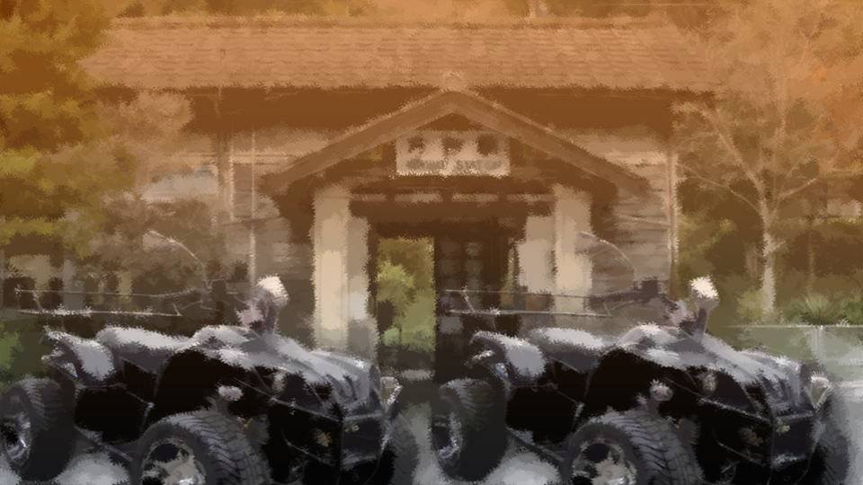

―In the evening, we arrived at Arata Station.
Two of the residents, Kotaro Niimura-san and Shirozaki-san, had come to meet us in buggies.
Two of the residents, Kotaro Niimura-san and Shirozaki-san, had come to meet us in buggies.
"Um, Goto-chan, was it?
Thanks for coming all this way."
"Nice to meet you. I'm Erina Goto. I'm... so sorry for your loss."
"Nice to meet you. I'm Erina Goto. I'm... so sorry for your loss."
"Kotaro-san, how come Goto got permission to attend too?"
"I heard Goto-chan got attacked by the culprit too.
Couldn't very well treat her like an outsider, is what Mom said."
Huh, so that's the kind of settlement it is. That's why Mifuyu Niimura tried to flee here.
Huh, so that's the kind of settlement it is. That's why Mifuyu Niimura tried to flee here.
 video: 桜.wmv
video: 桜.wmv―We arrived at the Arata settlement.
There were almost no cherry trees around here.
Only the old cherry tree at the Niimura main house.
It was old, but the strength of its flowers in full bloom was something to behold.
If anything happens, this cherry tree will probably tell me.
There were almost no cherry trees around here.
Only the old cherry tree at the Niimura main house.
It was old, but the strength of its flowers in full bloom was something to behold.
If anything happens, this cherry tree will probably tell me.
I went into the room we were shown to with Niimura-senpai and put down my things.
This time, I'm here for Mifuyu Niimura's funeral.
I have to pretend to grieve at least a little.
This time, I'm here for Mifuyu Niimura's funeral.
I have to pretend to grieve at least a little.
"Niimura-senpai, are you okay? You look really tired."

"Yeah... I'm fine..."
Honestly... what a pain...
Honestly... what a pain...
"Mm... you must be worn out, Haruka."

"Chiga-nee..."
Could she be a relative of Niimura-senpai's?
Both her eyes were blue, and she had a truly mysterious air.
Could she be a relative of Niimura-senpai's?
Both her eyes were blue, and she had a truly mysterious air.
"Uuu... Chiga-nee...!"
"Mm... there, there, Haruka. That must have been hard."
Niimura-senpai was crying into Chiga-nee's chest.
"Mm... there, there, Haruka. That must have been hard."
Niimura-senpai was crying into Chiga-nee's chest.
Even seeing the two of them like that, I felt nothing in particular.
The one who had died was the person who killed Kogori-senpai and her father.
She was someone who was bound to die.
The one who had died was the person who killed Kogori-senpai and her father.
She was someone who was bound to die.
"Mm... um, Goto-san, was it?"
"Ah, yes. I'm, um, very sorry for your..."
I was getting sick of these formal greetings.
"Ah, yes. I'm, um, very sorry for your..."
I was getting sick of these formal greetings.
"Goto came here for Mom. She's my cute junior."
"Mm... thank you for always looking after Haruka. And thanks for coming all this way."
"Oh no, it's nothing that big..."
"Mm... thank you for always looking after Haruka. And thanks for coming all this way."
"Oh no, it's nothing that big..."
Even so, my eyes still itched.
I'd like to take them out soon.
I'd like to take them out soon.
"Mm... Haruka and Goto-san, time to get changed."
"Okay..."
"Okay..."
What had been prepared for us was a Noh mask and red robes.
This outfit was the same as Mifuyu Niimura's that time.
But with this, I'd be free of the itching in my eyes.
This outfit was the same as Mifuyu Niimura's that time.
But with this, I'd be free of the itching in my eyes.
"Senpai, I'm going to the bathroom. I'll change there while I'm at it."
"Got it. I'll be waiting at the front door."
"Got it. I'll be waiting at the front door."
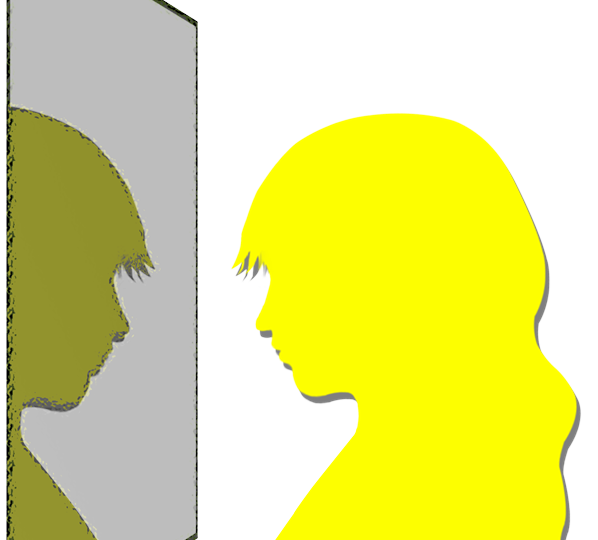
I faced the mirror over the sink.
They're a little bloodshot...
On day 3 of contact lenses, I'm still not used to them.
They're a little bloodshot...
On day 3 of contact lenses, I'm still not used to them.
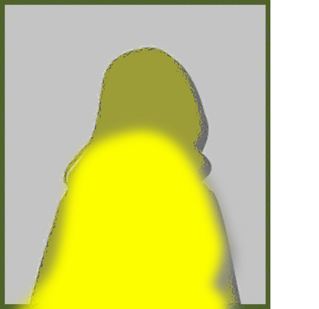
My eyes, with the colored contacts taken out.
Since that business on April 8, something strange had happened to those eyes.
After watching Mifuyu Niimura go, I looked in the mirror and was shocked.
Since that business on April 8, something strange had happened to those eyes.
After watching Mifuyu Niimura go, I looked in the mirror and was shocked.
One of my eyes had turned green.
But I have a rough idea of what caused it.
But I have a rough idea of what caused it.

Right after looking in the mirror, I helped myself to Sis's disposable colored contacts.
These contacts make the irises look bigger, but on me, with my naturally big irises, they don't make much difference.
Conveniently, the green part is hidden.
These contacts make the irises look bigger, but on me, with my naturally big irises, they don't make much difference.
Conveniently, the green part is hidden.
To begin with, eye color is determined by the ratio of melanin in the iris.
Basically, it's supposed to stay the same for life, but...
Would it have been better to get it checked at a hospital?
Basically, it's supposed to stay the same for life, but...
Would it have been better to get it checked at a hospital?
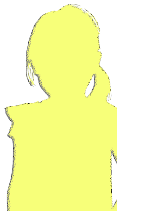
............!!??
Who? This kid...!
A child even smaller than me, suddenly reflected in the mirror.
Who? This kid...!
A child even smaller than me, suddenly reflected in the mirror.

"Are you Goto-chan!?"
"Huh? Y-yeah..."
"Huh? Y-yeah..."
"Ha! I knew it!
I'm Haruka-chan's cousin, Kana Niimura!
Nice to meet you, Goto-chan!"
"Ah... yeah, nice to meet you..."
"Ah... yeah, nice to meet you..."
This kid had just one green eye.
The other one was blue, the same as Chiga-nee's.
Could it be that this kid is the same as me―
The other one was blue, the same as Chiga-nee's.
Could it be that this kid is the same as me―
"Huh? Goto-chan's eye color..."
"Ah, don't look! This is an eye disease, and I might lose my sight from it... I'm still too scared, so I haven't told anyone... Keep it a secret from everyone...!"
"What!? That's terrible! I won't tell anyone! When you get back to Motoki-cho, make sure you go to the hospital!"
"Okay..."
"Ah, don't look! This is an eye disease, and I might lose my sight from it... I'm still too scared, so I haven't told anyone... Keep it a secret from everyone...!"
"What!? That's terrible! I won't tell anyone! When you get back to Motoki-cho, make sure you go to the hospital!"
"Okay..."
On the spur of the moment, I'd told a clumsy lie.
Though maybe it really is a disease...
Though maybe it really is a disease...
"Um, Kana-chan, right?
Kana-chan, were you born with that eye color?"
"Yep, that's right! My sister used to have one green eye too, but now both of them are blue!"
"I see. That's unusual..."
Anyway, I'd sworn Kana-chan to silence about my eye color, so it should be fine.
"Yep, that's right! My sister used to have one green eye too, but now both of them are blue!"
"I see. That's unusual..."
Anyway, I'd sworn Kana-chan to silence about my eye color, so it should be fine.
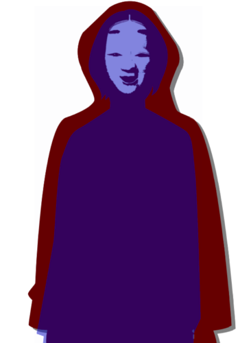
"You took a long time. You okay?"
"Yes, I was just a little tired."
"Sorry for dragging you all the way out here... Goto, really, thank you."
What a pain...
"Yes, I was just a little tired."
"Sorry for dragging you all the way out here... Goto, really, thank you."
What a pain...

―At the meeting hall, people were coming and going on and off.
Apparently today wasn't the funeral but the day that counted as the wake.
It seemed the return of the body had taken a while because of the autopsy and such, so the wake was being held 3 days after the death.
Apparently today wasn't the funeral but the day that counted as the wake.
It seemed the return of the body had taken a while because of the autopsy and such, so the wake was being held 3 days after the death.
"Senpai, isn't a wake something everyone does together?"
"At the wake, you just look at the face of the deceased and pray."
More than a wake, that's really a condolence call...
More than a wake, that's really a condolence call...

Inside, people in Noh masks and red robes, just like us, were crowded in.
On a platform at the front lay a Noh mask and red robes.
Inside those red robes, a bulge like a person.
Is Mifuyu Niimura in there?
She burned to death, so they must have covered her like that so she can't be seen.
On a platform at the front lay a Noh mask and red robes.
Inside those red robes, a bulge like a person.
Is Mifuyu Niimura in there?
She burned to death, so they must have covered her like that so she can't be seen.
"Senpai, what are we supposed to do here?"
"Um...
Huh? Chiga-nee, where's the falsificaso?"
What's that?
What's that?
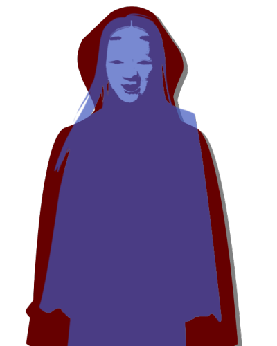
"Mm... this time it was too sudden, so we couldn't get any ready.
Apparently they can have it ready for tomorrow's funeral, though...
Right now, Dad is making it, I hear."
"That can't be helped... Hey, Goto, I'm gonna stay here and help for a while, so head back ahead of me. You must be tired, so get some rest."
"That can't be helped... Hey, Goto, I'm gonna stay here and help for a while, so head back ahead of me. You must be tired, so get some rest."
Kana-chan and I did little more than bow toward the body before we left the meeting hall.
I had brought condolence money too, but apparently they had no custom of exchanging such things.
I had brought condolence money too, but apparently they had no custom of exchanging such things.
"Mm... Kana, I'm going to help out a bit longer too, so go back with Goto-chan."
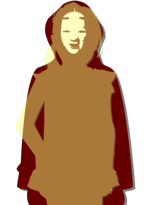
"Okay, okaaay!"
That was a cheerful answer, for a wake.
That was a cheerful answer, for a wake.
My head hurt a little.
That was because feelings strong enough to cry over were welling up in me, and yet no tears came.
Crying would surely clear it up.
But the tears didn't come.
So my head hurt a little.
That was because feelings strong enough to cry over were welling up in me, and yet no tears came.
Crying would surely clear it up.
But the tears didn't come.
So my head hurt a little.
Soaking in the tub, I let out a big sigh.
In place of the tears that wouldn't come, I meant to breathe out whatever was in my heart.
One more time, a big sigh―
In place of the tears that wouldn't come, I meant to breathe out whatever was in my heart.
One more time, a big sigh―
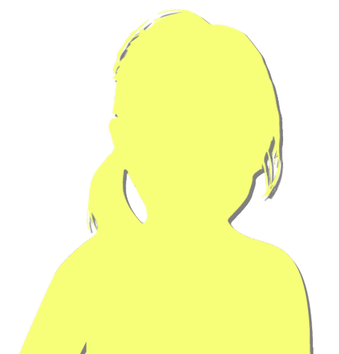
"You're sighing like that. Does the bath feel that good?"
"Yeah... it feels good."
To Kana-chan, did I look like I was in paradise, pure paradise?
"Yeah... it feels good."
To Kana-chan, did I look like I was in paradise, pure paradise?
"Goto-chan, let's rinse all the bad stuff right off in the bath!"
"Yeah..."
What is this...
Kana-chan's words are the kind of line I usually say to my senpai.
I'm being comforted by a little kid like this.
Maybe Kana-chan is a little like me...
"Yeah..."
What is this...
Kana-chan's words are the kind of line I usually say to my senpai.
I'm being comforted by a little kid like this.
Maybe Kana-chan is a little like me...
"Hey, Kana-chan, have you ever had trouble because of your eye color?"
"My eye color? Hmm... yep!"
So it is true... Am I going to run into discrimination like that from now on, too?
"My eye color? Hmm... yep!"
So it is true... Am I going to run into discrimination like that from now on, too?
"What did you have trouble with?"
"They always make me do the roles with the longest lines! They say I suit them the best!"
Lines? Roles? Suit them?
I get the feeling we're not quite talking about the same thing...
"They always make me do the roles with the longest lines! They say I suit them the best!"
Lines? Roles? Suit them?
I get the feeling we're not quite talking about the same thing...
"At last year's school play, I was a princess who had to cry at the end!
It was super hard... I had to stay late at school every day..."
Ah, she means the play.
With Kana-chan's looks, she probably gets recommended for standout roles, like a princess or a young lady.
We really weren't talking about the same thing!
Ah, she means the play.
With Kana-chan's looks, she probably gets recommended for standout roles, like a princess or a young lady.
We really weren't talking about the same thing!
"How about your friends? Do you get along?"
"I get along with everybody! There are only 10 kids in my grade, though! When Mama was a kid there were over 100, I guess. Is this that 'aging society' thing?"
With so few kids, maybe nobody gets discriminated against over eye color.
Then again, in Kana-chan's mom's day, who knows.
"I get along with everybody! There are only 10 kids in my grade, though! When Mama was a kid there were over 100, I guess. Is this that 'aging society' thing?"
With so few kids, maybe nobody gets discriminated against over eye color.
Then again, in Kana-chan's mom's day, who knows.
"Hey, hey, what's Haruka-chan like normally?"
"Niimura-senpai... buys me food sometimes."
"Huh! So she's really doing the senpai thing! But, Goto-chan, if you eat that much, isn't it hard on Haruka-chan's allowance?"
"The first time she treated me, she called me shorty, so I got a little worked up and wiped out Senpai's whole allowance in one day."
"Niimura-senpai... buys me food sometimes."
"Huh! So she's really doing the senpai thing! But, Goto-chan, if you eat that much, isn't it hard on Haruka-chan's allowance?"
"The first time she treated me, she called me shorty, so I got a little worked up and wiped out Senpai's whole allowance in one day."
"Ahahaha! Poooor Haruka-chan!
How much did you eat that time?"
"Um, that time it was... a steak set,
"Um, that time it was... a steak set,
a pork-cutlet stew set,
a negitoro bowl,
a tempura-and-soba set,
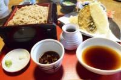
oh, all of those, two sets each.
Plus a chocolate cake and
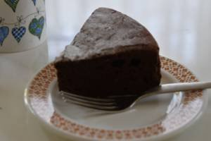
a fruit parfait...
and was that it?"
"What do you mean, 'was that it'...
Haruka-chan... poor thing..."
"But Goto-chan, you and Haruka-chan are really close!
Who else are you close to?"
"Who else I'm close to...?"
That was Kogori-senpai.
Now Senpai isn't here anymore.
"Who else I'm close to...?"
That was Kogori-senpai.
Now Senpai isn't here anymore.
"Oh, sorry, Goto-chan... That's the person you said died the other day..."
"Yeah... her name's Kogori-senpai. She died in the Motoki-cho case."
"So that's what happened... Mm..."
Kana-chan looked at my face, worried.
"Yeah... her name's Kogori-senpai. She died in the Motoki-cho case."
"So that's what happened... Mm..."
Kana-chan looked at my face, worried.
"And yet, I can't cry.
I loved her so much, she was so precious to me...
Ever since I got these eyes, I've been off."
"Then... just don't cry... You don't have to force yourself to cry..."
"Huh?"
"Then... just don't cry... You don't have to force yourself to cry..."
"Huh?"
"That senpai would be sad if you cried, Goto-chan.
So instead of crying, I think it's better to pray for her to be happy in heaven."
"Kana-chan..."
"Also, I told you my sister used to have one green eye, right? Maybe if both your eyes turn the same color, like my sister's, you'll feel better, Goto-chan?"
"Kana-chan..."
"Also, I told you my sister used to have one green eye, right? Maybe if both your eyes turn the same color, like my sister's, you'll feel better, Goto-chan?"
"Why did her eye color change?"
"I don't really know... but she stayed somewhere in this settlement for a little while, I heard. And then it got better, supposedly?"
"Somewhere... where?"
"Dunno... somewhere I don't know about. It was right when I was born, it sounds like, so I never got the full story."
"I don't really know... but she stayed somewhere in this settlement for a little while, I heard. And then it got better, supposedly?"
"Somewhere... where?"
"Dunno... somewhere I don't know about. It was right when I was born, it sounds like, so I never got the full story."
After she stayed somewhere for a few days, her eye color changed...
If what Kana-chan says is true, there must have been something that triggered the change in eye color.
If what Kana-chan says is true, there must have been something that triggered the change in eye color.
"Hey, Kana-chan, you and Chiga-nee have had odd eyes since you were born, right?
Is there anyone else like that in this settlement?"
"Nope, nobody. Sometimes people got born with blue eyes, like Mama, I guess, but there's nobody with just one eye a different color."
"Nope, nobody. Sometimes people got born with blue eyes, like Mama, I guess, but there's nobody with just one eye a different color."
Congenital eye color is basically caused by either heredity or mutation.
If both sisters are odd-eyed, it's most likely hereditary.
But Kana-chan's mother apparently has two blue eyes, and Kotaro-san has dark eyes to begin with.
If they aren't Kotaro-san's biological children, things would seem to add up, but in a settlement like this, and two children at that...
If both sisters are odd-eyed, it's most likely hereditary.
But Kana-chan's mother apparently has two blue eyes, and Kotaro-san has dark eyes to begin with.
If they aren't Kotaro-san's biological children, things would seem to add up, but in a settlement like this, and two children at that...
No, wait. From here on, I should think it through with myself included.
In other words, I need to find what Chiga-nee, Kana-chan, and I have in common.
The trigger for getting green eyes...
In other words, I need to find what Chiga-nee, Kana-chan, and I have in common.
The trigger for getting green eyes...
In my case, it was probably because I was splashed with Kogori-senpai's blood.
A chance for Chiga-nee or Kana-chan to be splashed with Kogori-senpai's blood... there shouldn't have been one.
Chiga-nee is older than Senpai, so the timing makes it impossible too.
Or maybe Kana-chan and Chiga-nee have intuition like mine, too?
A chance for Chiga-nee or Kana-chan to be splashed with Kogori-senpai's blood... there shouldn't have been one.
Chiga-nee is older than Senpai, so the timing makes it impossible too.
Or maybe Kana-chan and Chiga-nee have intuition like mine, too?
"Hey, Kana-chan, can you ever sense danger?"
"Danger...? That's something Mama has! Mama can tell when something dangerous is about to happen!"
Could it be the mother who has it...!?
"Danger...? That's something Mama has! Mama can tell when something dangerous is about to happen!"
Could it be the mother who has it...!?
"Hey! Has your mom ever been badly hurt!?
Something where she bled a lot!"
"Huh!? Nope, I don't think so..."
Right, the two of them were born with odd eyes, so that has nothing to do with it...
"Huh!? Nope, I don't think so..."
Right, the two of them were born with odd eyes, so that has nothing to do with it...
I'd been thinking that if she had been badly hurt at some point, the sisters might have had a chance to touch her blood.
If they were odd-eyed from birth, then their eye color changed without any contact with blood.
If they were odd-eyed from birth, then their eye color changed without any contact with blood.
No...
it's possible...
A chance to be splashed with the mother's blood.
Anyone who is born definitely has one.
A chance to be splashed with the mother's blood.
Anyone who is born definitely has one.
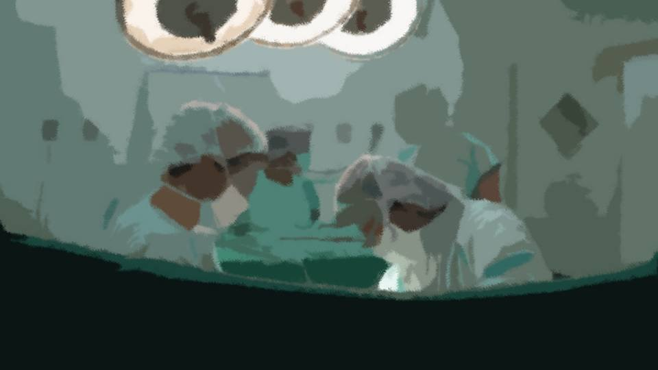
That's during childbirth.
Childbirth involves heavy bleeding, and the child always comes into contact with the mother's blood.
That's the same whether it's a natural birth or a C-section.
Childbirth involves heavy bleeding, and the child always comes into contact with the mother's blood.
That's the same whether it's a natural birth or a C-section.
At last, the mystery is solved.
It's still unconfirmed, but if I add everything up and think in terms of probability― the odds of anything else are less than one in a hundred million.
Japanese sisters both born with blue-and-green odd eyes by chance, not by heredity...
Even if there were foreigners among their ancestors, it's still as close to zero as it gets.
It's still unconfirmed, but if I add everything up and think in terms of probability― the odds of anything else are less than one in a hundred million.
Japanese sisters both born with blue-and-green odd eyes by chance, not by heredity...
Even if there were foreigners among their ancestors, it's still as close to zero as it gets.
Becoming odd-eyed from the mother's blood is far more realistic.
Because I became odd-eyed from Senpai's blood.
Because I became odd-eyed from Senpai's blood.
But Kana-chan doesn't seem to have that intuition.
Chiga-nee's eye color apparently changed 10 years ago, so maybe age has something to do with it, too.
Chiga-nee's eye color apparently changed 10 years ago, so maybe age has something to do with it, too.
Isn't there information somewhere in this settlement that would explain these things?
It seems to be an old settlement, and unique customs like the funeral earlier still survive.
For example, a book that records their rules and practices.
It seems to be an old settlement, and unique customs like the funeral earlier still survive.
For example, a book that records their rules and practices.
"Kana-chan, are there any old books or anything in this house?"
"Old books? Like old novels?"
"No, books written about this settlement. The kind with stuff like the rules for that funeral earlier."
"Hmm, I wonder... There's only the residents' register in the living room closet... Other than that, maybe the storehouse?"
"The storehouse?"
"Old books? Like old novels?"
"No, books written about this settlement. The kind with stuff like the rules for that funeral earlier."
"Hmm, I wonder... There's only the residents' register in the living room closet... Other than that, maybe the storehouse?"
"The storehouse?"
"Yeah, we're told not to go in, but I think there's a lot of old stuff in there."
"Would I get in trouble if I went in there...?"
"Oh!? Could this be the arrival of Phantom Thief Goto!? Sounds fun! Let's do it, let's do it!"
What kind of alias is that supposed to be...
"Would I get in trouble if I went in there...?"
"Oh!? Could this be the arrival of Phantom Thief Goto!? Sounds fun! Let's do it, let's do it!"
What kind of alias is that supposed to be...
"But is that okay, Kana-chan? Won't you get in trouble if we're caught?"
"We can only get in at a time like this, when nobody's around, right? I've always wanted to go in there!"
A 10-year-old through and through, right at the prank-loving age.
Well, there's plenty of time, so I'll help myself to a little trespassing.
I want to solve the mystery of these eyes.
"We can only get in at a time like this, when nobody's around, right? I've always wanted to go in there!"
A 10-year-old through and through, right at the prank-loving age.
Well, there's plenty of time, so I'll help myself to a little trespassing.
I want to solve the mystery of these eyes.

“The Droga Refining Method”
This book was written in Shiyo 342. About 460 years ago, then.
This book was written in Shiyo 342. About 460 years ago, then.
Let's see... Precautions―
Droga shall not be made heedlessly.
Droga shall not be abused heedlessly.
Droga shall not be made heedlessly.
Droga shall not be abused heedlessly.
When Mifuyu Niimura and I faced off, I read the keyword 'drugs' off her by intuition.
My deduction is that Mifuyu Niimura used some kind of drug and gained physical abilities beyond any normal person's.
Could this Droga be what makes that possible?
My deduction is that Mifuyu Niimura used some kind of drug and gained physical abilities beyond any normal person's.
Could this Droga be what makes that possible?
Ingredients: Arata cherry roots, 100 monme（about 375 grams）, and water.
The water should preferably be reasonably clean, such as groundwater.
Tools to prepare: a pot, a fire, and an iron plate.
It doesn't seem to need anything very difficult.
The water should preferably be reasonably clean, such as groundwater.
Tools to prepare: a pot, a fire, and an iron plate.
It doesn't seem to need anything very difficult.
To summarize the method―
Crush the Arata cherry roots to the size of beans, put them in a pot, and add enough water to submerge all the roots.
Then heat the pot, stirring, for about 3 days.
Take care not to scorch it, and when the water runs low, add water as needed.
Crush the Arata cherry roots to the size of beans, put them in a pot, and add enough water to submerge all the roots.
Then heat the pot, stirring, for about 3 days.
Take care not to scorch it, and when the water runs low, add water as needed.
When a pungent smell arises, stop, and leave it as it is for one day.
The source of this pungent smell is falsificaso, so take care not to inhale it, by covering the face or the like.
―There it is, falsificaso.
Falsificaso, produced in the process of making Droga.
I see, so falsificaso means a fake of Droga.
The source of this pungent smell is falsificaso, so take care not to inhale it, by covering the face or the like.
―There it is, falsificaso.
Falsificaso, produced in the process of making Droga.
I see, so falsificaso means a fake of Droga.
After one day, the liquid in the pot separates into four layers.
At the very top, impurities that float on water, such as root residue.
The second layer, a clear liquid: falsificaso.
The third layer, a pink liquid: Droga.
At the very bottom, impurities that have settled.
The tree roots, the falsificaso and the impurities are not needed, so discard them.
At the very top, impurities that float on water, such as root residue.
The second layer, a clear liquid: falsificaso.
The third layer, a pink liquid: Droga.
At the very bottom, impurities that have settled.
The tree roots, the falsificaso and the impurities are not needed, so discard them.
Discard the falsificaso?
Right now it's being made in a big hurry as a ritual implement.
Discard that?
Right now it's being made in a big hurry as a ritual implement.
Discard that?
So at the time this was written, there was no tradition of using falsificaso as a ritual implement.
Which means that, for some reason, falsificaso came to be used as a ritual implement.
The reason falsificaso came to be used...
Well, none of that matters now.
The finishing steps seem to start on the next page.
Which means that, for some reason, falsificaso came to be used as a ritual implement.
The reason falsificaso came to be used...
Well, none of that matters now.
The finishing steps seem to start on the next page.
Run the pink Droga solution through a filter, then drip it onto a heated iron plate to drive off the water.
Before long, pink crystals form.
This is Droga.
By dripping more Droga solution onto the crystal, it can be made larger.
A piece the size of a walnut can be used on about 1000 people.
Before long, pink crystals form.
This is Droga.
By dripping more Droga solution onto the crystal, it can be made larger.
A piece the size of a walnut can be used on about 1000 people.
I see. It takes time, but there doesn't seem to be any difficult work.
On the next page, how to use Droga.
On the next page, how to use Droga.
When using Droga, heat it directly over a flame and inhale the smoke.
One is then granted the strength of a demon god for about an hour.
However, take care, as one unaccustomed to it may become overexcited and turn violent.
Also, if there are those present who are not using it, take ample care in its handling.
To inhale the smoke efficiently, it is best used in an enclosed space where possible, or upwind of the subject.
One is then granted the strength of a demon god for about an hour.
However, take care, as one unaccustomed to it may become overexcited and turn violent.
Also, if there are those present who are not using it, take ample care in its handling.
To inhale the smoke efficiently, it is best used in an enclosed space where possible, or upwind of the subject.
This is just straight-up a stimulant...
If someone with that kind of strength got overexcited and turned violent, it would be a disaster.
If someone with that kind of strength got overexcited and turned violent, it would be a disaster.
So it ends on the next page.
Nothing about green eyes, and no detailed explanation of falsificaso either.
For now, I'll take a look at the last page.
Nothing about green eyes, and no detailed explanation of falsificaso either.
For now, I'll take a look at the last page.
............?
Only the last page was written in a clearly different style.
Only the last page was written in a clearly different style.
If Droga is dissolved in distilled water and given by intramuscular injection, the effect lasts a shorter time, but an excessive state of agitation can be prevented.
The amount is about 10～30cc.
If falsificaso is administered to one of the third generation who harbors murderous intent, the signs of curse-killing can be suppressed.
Addendum, Shiyo 735 Kikyo Niimura
The amount is about 10～30cc.
If falsificaso is administered to one of the third generation who harbors murderous intent, the signs of curse-killing can be suppressed.
Addendum, Shiyo 735 Kikyo Niimura
Curse-killing, the third generation, falsificaso―
Unless I know what curse-killing even means in the first place...
And this person called Kikyo Niimura―
Unless I know what curse-killing even means in the first place...
And this person called Kikyo Niimura―
Just then, the half-open door slowly opened.

"Ah! Captain Goto! Have you at last found the room we sought!?
Actually, this room's crammed tight..."
Sure enough, a narrow room with lots of books, a table and chairs― even the two of us, small as we were, found it cramped.
Sure enough, a narrow room with lots of books, a table and chairs― even the two of us, small as we were, found it cramped.
"You were upstairs a really long time. Did something happen?"
"There was tons of interesting-looking stuff!
Like weird masks, and white robes that aren't red!
And also...
this!
This here's a real find, Captain!"
What Kana-chan was holding was a single old book.
The book's title was― “When Boys and Girls Become Adults in Body”...
What Kana-chan was holding was a single old book.
The book's title was― “When Boys and Girls Become Adults in Body”...
"Kana-chan, did you read this?"
"There were all manner of nude pictures in it! Boy, smut really is the same in every age and every land! This is a dirty book from the old days! They call it shunga, right!?"
"There were all manner of nude pictures in it! Boy, smut really is the same in every age and every land! This is a dirty book from the old days! They call it shunga, right!?"
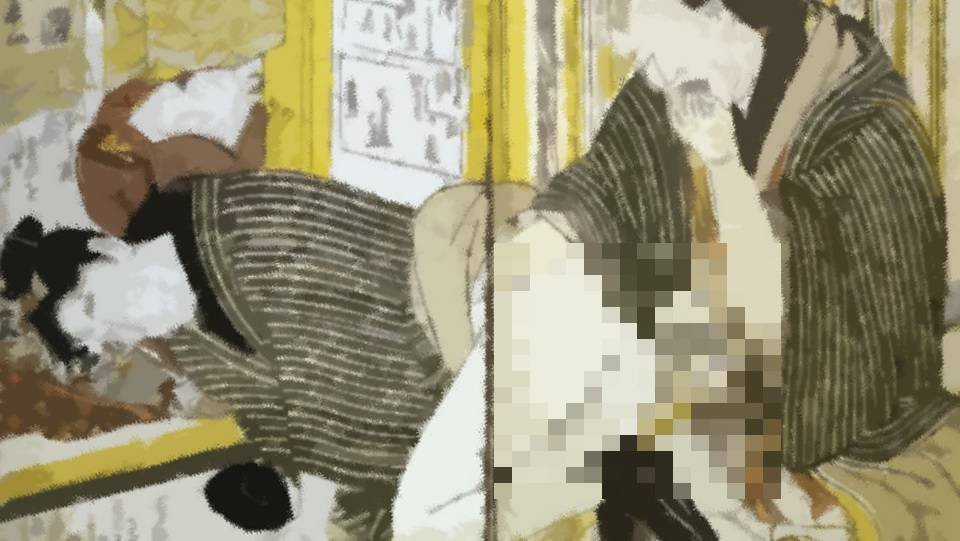
―Shunga.
Its history goes back a full 5000 years.
In Japan, it was called ensokuzu（ensokuzu, osokuzu）, or osokuzu no e（osokuzu no we）.
Its history goes back a full 5000 years.
In Japan, it was called ensokuzu（ensokuzu, osokuzu）, or osokuzu no e（osokuzu no we）.
About 200 years ago, the government of the day tried to crack down on shunga. As a countermeasure, it's said, the authors, artists and publishers marked the pictures with hidden signatures, so no one could tell who they were.
Most of the famous artists worked on them, and it is said that even artists of famous schools drew them.
Most of the famous artists worked on them, and it is said that even artists of famous schools drew them.
In other words, shunga made full use of the highest-ranking techniques of the ukiyo-e of the time.
Just as Kana-chan said, such things can be called universal in every age and every land.
Just as Kana-chan said, such things can be called universal in every age and every land.
...Wait, none of that matters!
Still, why would something like that be on the floor above...?
Still, why would something like that be on the floor above...?
"Geez, Kana-chan! This kind of thing is for grown-ups to read...
Hand it over here, now."
"Oh my! Goto-chan, you're just saying that so you can snatch my dirty book, aren't you!?"
Kana-chan complained, but held out the book anyway.
And as a formality, just to be sure, for safety's sake, I flip through the book myself.
"Oh my! Goto-chan, you're just saying that so you can snatch my dirty book, aren't you!?"
Kana-chan complained, but held out the book anyway.
And as a formality, just to be sure, for safety's sake, I flip through the book myself.
―Ah, this isn't shunga, it's more like a health-and-PE textbook.
It describes, in pointlessly fine detail, how to deal with the children of this settlement as they grow up.
It describes, in pointlessly fine detail, how to deal with the children of this settlement as they grow up.
"Hey, hey, Goto-chan! I can't read this writing, so read it to me at bedtime!
You know, one of those bedtime stories for kids?"
"What idiot reads a kid a dirty book at bedtime!?"
"What idiot reads a kid a dirty book at bedtime!?"
"Ahahaha! That comeback just now was just like Haruka-chan's! Goto-chan, you're so cute!
And it's not a dirty book, it's shunga.
Goto-chan, you have no class!"
"Grrr...!"
In a vulgar debate with Kana-chan, I'm at a disadvantage...! This genius girl's blunder of a lifetime...!
"Grrr...!"
In a vulgar debate with Kana-chan, I'm at a disadvantage...! This genius girl's blunder of a lifetime...!
Huh?
Just now, for an instant, I saw something.
I flipped back through the pages I'd riffled past.
Just now, for an instant, I saw something.
I flipped back through the pages I'd riffled past.
"Oh! Captain Goto, it appears you've found yourself a page of interest! So you're human after all!"
"Kana-chan, sorry, be quiet a sec."
"Huh? Oh, okay..."
"Kana-chan, sorry, be quiet a sec."
"Huh? Oh, okay..."
Just now, there was definitely...
Definitely...!
............ ............ This is it!
............ ............ This is it!
“Green-Eye Curse-Killing”
Read 'suigan jusatsu,' I suppose?
Why would a book teaching about growing up have something like this...?
And at the very start―
Read 'suigan jusatsu,' I suppose?
Why would a book teaching about growing up have something like this...?
And at the very start―
A green-eyed boy, raise as he is.
A green-eyed girl, kill as soon as she is born.
A green-eyed girl, kill as soon as she is born.
"Goto-chan, what's wrong...? Are you okay?"
I looked into Kana-chan's eyes.
Kana-chan looked into my eyes too.
We are green-eyed―
I looked into Kana-chan's eyes.
Kana-chan looked into my eyes too.
We are green-eyed―
"Kana-chan, thank you. This is what I was looking for.
It looks like this talks about green eyes."
"R-really!?"
"R-really!?"

Kana-chan stared hard at the book too.

"Goto-chan, can you read this?"
"Yeah, this much is a piece of cake. But..."
Letting Kana-chan hear this opening...
After all, it says to kill a green-eyed girl when she's born...
"Yeah, this much is a piece of cake. But..."
Letting Kana-chan hear this opening...
After all, it says to kill a green-eyed girl when she's born...
"Goto-chan, make sure you let me hear it too.
Goto-chan being the only one who knows, and me not knowing? I'd hate that!"
"............ Okay. But I think there's something really scary written in it."
"Got it!"
I read the rest aloud, translating it so Kana-chan could understand too.
"............ Okay. But I think there's something really scary written in it."
"Got it!"
I read the rest aloud, translating it so Kana-chan could understand too.
When a green-eyed girl has her first period, within a few days she is tormented by unbearable murderous intent.
There is only one way to cure it: the death of the person who is the object of that murderous intent.
When the target dies, the green-eyed child is enveloped in supreme happiness and pleasure, and the murderous intent swiftly vanishes as well.
Green-eyed children are cursed.
Hence, a killing by a cursed child is called curse-killing.
There is only one way to cure it: the death of the person who is the object of that murderous intent.
When the target dies, the green-eyed child is enveloped in supreme happiness and pleasure, and the murderous intent swiftly vanishes as well.
Green-eyed children are cursed.
Hence, a killing by a cursed child is called curse-killing.
Green-eyed girls... killing people...?
"Goto-chan, I haven't gotten mine yet, and I haven't killed anybody, okay?"
"Yeah, it's okay."
I gripped the hand of an uneasy-looking Kana-chan.
But at her age, it wouldn't be strange if Kana-chan had her first period any day now.
"Goto-chan, I haven't gotten mine yet, and I haven't killed anybody, okay?"
"Yeah, it's okay."
I gripped the hand of an uneasy-looking Kana-chan.
But at her age, it wouldn't be strange if Kana-chan had her first period any day now.
The mechanism of the murderous intent, and who becomes the target of the killing.
Unless I figure this out, I'll only end up frightening Kana-chan.
Unless I figure this out, I'll only end up frightening Kana-chan.
Green-eyed children, both boys and girls, are born once every few years.
Furthermore, if a child is born green-eyed, its younger siblings will without exception be green-eyed as well.
The mother possesses the ability to sense danger under limited conditions―
Sensing danger... does that mean intuition like Kogori-senpai's and mine...?
If I remember right, Kana-chan's mother...
Furthermore, if a child is born green-eyed, its younger siblings will without exception be green-eyed as well.
The mother possesses the ability to sense danger under limited conditions―
Sensing danger... does that mean intuition like Kogori-senpai's and mine...?
If I remember right, Kana-chan's mother...
"You said your mom has that kind of power too, didn't you...?"
"Mama... has that kind of power too."
What on earth... This book is simply stating facts, nothing more.
I read on further.
"Mama... has that kind of power too."
What on earth... This book is simply stating facts, nothing more.
I read on further.
Those whom a green-eyed child targets for killing are―
green-eyed girls who have likewise had their first period, and those who possess the ability to sense danger.
Huh? So women with green eyes kill each other?
And on top of that, they even kill those who can sense danger...
Driven by an unbearable desire to kill, they end up killing...
Huh? So women with green eyes kill each other?
And on top of that, they even kill those who can sense danger...
Driven by an unbearable desire to kill, they end up killing...
My hand, holding Kana-chan's, went sweaty and began to tremble.
I'll come to want to kill Kana-chan...?
And once Kana-chan grows up a bit more, Kana-chan will... me, too...?
I'll come to want to kill Kana-chan...?
And once Kana-chan grows up a bit more, Kana-chan will... me, too...?
"Goto-chan, my hand, it hurts...!"
"Ah, sorry!"
"Ah, sorry!"
I quickly let go of Kana-chan's hand.
Without thinking, I'd squeezed too hard.
Without thinking, I'd squeezed too hard.
At last, I understood why I couldn't grieve over Kogori-senpai's death.
I'm glad that Kogori-senpai died.
Because of these eyes, the death of someone with the danger-sense ability― Senpai's death is something I can't mourn or grieve.
I'm glad that Kogori-senpai died.
Because of these eyes, the death of someone with the danger-sense ability― Senpai's death is something I can't mourn or grieve.
"Goto-chan, it's okay... There's nothing to be afraid of..."
Kana-chan rubbed my back.
No... No, no, no...!
I don't want to kill...!
Rather than do something like that, I'd even gouge out these eyes...!
Kana-chan rubbed my back.
No... No, no, no...!
I don't want to kill...!
Rather than do something like that, I'd even gouge out these eyes...!
That's it! It said that giving falsificaso would calm that urge, didn't it!
They're making it right now, for tomorrow's funeral.
I don't know how much is needed, but if they'd share some with me...
They're making it right now, for tomorrow's funeral.
I don't know how much is needed, but if they'd share some with me...
"Kana-chan, where are they making the falsificaso!?"
"That's... Sorry, I don't know..."
"Isn't there some secret place or something!?"
"A secret place...? There is one... but... But that's my secret base―"
"Take me there right now!"
"That's... Sorry, I don't know..."
"Isn't there some secret place or something!?"
"A secret place...? There is one... but... But that's my secret base―"
"Take me there right now!"
Without even putting the book away, I switched off the desk lamp.
The room―
was swallowed in darkness.
At the same time, I heard footsteps.
I heard footsteps heading for this basement room.
At the same time, I heard footsteps.
I heard footsteps heading for this basement room.
"Is someone there?"
Floating in the pitch-black darkness, two blue eyes.
The eyes of that person, who spoke in a voice as gentle as a goddess's, were blue.
In this cramped, dark place― that person and I came face to face.
Floating in the pitch-black darkness, two blue eyes.
The eyes of that person, who spoke in a voice as gentle as a goddess's, were blue.
In this cramped, dark place― that person and I came face to face.
I once looked into the withdrawal symptoms of drugs.
No particular reason. Just curiosity.
Apparently, the worst withdrawal symptoms of all come from heroin.
Apparently, the worst withdrawal symptoms of all come from heroin.
Is what I'm feeling now something even more terrifying than that―?
Above all, my heart was in pain.
Above all, my heart was in pain.
The moment I met that person, the switch that makes my heart beat was turned off, and I was tormented by violent agony.
I have to hurry and press the switch again...!
I have to hurry and press the switch again...!
But that switch can't be seen.
Because that switch is inside that person's heart.
And so, for me to survive, I cut open that person's chest, crush the heart, and press the switch.
That was a figure of speech.
That was a figure of speech.
But―
I can't live unless I do it.
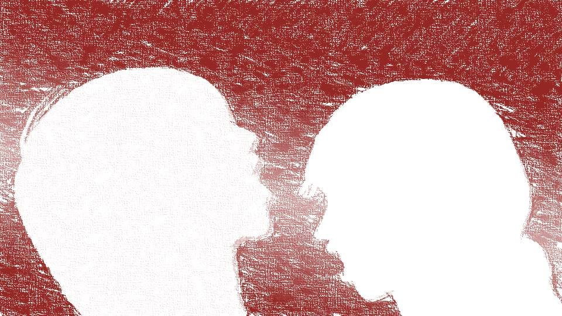
"Aaaaagh!! Die! Diiiiie!!"
"Goto-chan, stop!
Mama! Run, hurry!"
Kana-chan pulled me away from that person.
"Mama! Bring the falsificaso! This is probably curse-killing!"
"Hah! Hah! O-okay...!"
That person staggered out of the basement room.
Kana-chan pulled me away from that person.
"Mama! Bring the falsificaso! This is probably curse-killing!"
"Hah! Hah! O-okay...!"
That person staggered out of the basement room.
Wait...! Just die...!
Die for me...!
Die for me...!
With Kana-chan still on my back holding me down, chasing that person, I crawled across the floor.
My head's splitting...! My head's shorting out...!
This is no murder―it's an act of necessity.
Sacrificing another person to avert a danger to one's own life.
This is the right to survive, recognized by law...!
My head's splitting...! My head's shorting out...!
This is no murder―it's an act of necessity.
Sacrificing another person to avert a danger to one's own life.
This is the right to survive, recognized by law...!
"Goto-chan, sorry!"
At that voice of hers, I lost consciousness.
Apparently I'd been struck on the back of the head.
Apparently I'd been struck on the back of the head.
Ah... this might be a bit of a relief...
My consciousness, too, was released from the prison of the flesh.
My consciousness, too, was released from the prison of the flesh.
It seemed I had slept without so much as a dream.
From outside the window, an orange light that might have been sunset or sunrise―
Judging by the direction, it's probably sunrise.
Judging by the direction, it's probably sunrise.
"Goto, you awake?"
"Niimura... senpai..."
"Good. Your eye color's back to normal."
At those words, I bolted upright.
"Niimura... senpai..."
"Good. Your eye color's back to normal."
At those words, I bolted upright.
My eye color is back to normal!?
I see...
Kana-chan must have knocked me out, and then I was carried here and given falsificaso.
I see...
Kana-chan must have knocked me out, and then I was carried here and given falsificaso.
The murderous urge I felt in that basement room was absolutely not a dream.
Rather than feel that again, I'd be far better off having my stomach surgically removed without anesthesia.
That was how intense and horrifying it was.
Rather than feel that again, I'd be far better off having my stomach surgically removed without anesthesia.
That was how intense and horrifying it was.
"I'm sorry..."

At that, Senpai gently put her arms around me.
"What're you apologizing for...? You did the right thing.
Sakura-san―sneaking into the storehouse before you met her was the right call!"
I understood what Niimura-senpai meant.
Running into Sakura-san at that moment, with that timing, had been a stroke of luck amid the misfortune.
If I had come face to face with Sakura-san knowing nothing, I might have killed Sakura-san.
I understood what Niimura-senpai meant.
Running into Sakura-san at that moment, with that timing, had been a stroke of luck amid the misfortune.
If I had come face to face with Sakura-san knowing nothing, I might have killed Sakura-san.
And another feeling was surging over me as well.
Sadness―that was the feeling.
A sadness that rivaled that murderous urge.
It took me a little while to realize what it was.
Sadness―that was the feeling.
A sadness that rivaled that murderous urge.
It took me a little while to realize what it was.
"Kogori-senpai...
Senpai... she died..."
"Yeah! I'm just as sad as you!"
Niimura-senpai hugged me even tighter.
Then the tears that had been building and building inside my body came spilling out.
The tighter Senpai held me, the more tears were wrung out of me.
"Yeah! I'm just as sad as you!"
Niimura-senpai hugged me even tighter.
Then the tears that had been building and building inside my body came spilling out.
The tighter Senpai held me, the more tears were wrung out of me.
Kogori-senpai died―and I'm sad―
That I can feel sad that Senpai died― makes me happy.
That I can feel sad that Senpai died― makes me happy.
That I don't need Senpai because I've gained the power of sensing danger―
that's a lie.
I don't need sensing danger, so come back, Senpai...
I don't need sensing danger, so come back, Senpai...

"Hey, Phantom Thief, you awake?"
"Oh, Kotaro-san. Goto's fine now."
"I see... Sorry, Haruka-chan... about Mifuyu-chan's funeral today..."
"Don't worry about it. After what happened, there's no helping it if we can't hold the funeral."
"I see... Sorry, Haruka-chan... about Mifuyu-chan's funeral today..."
"Don't worry about it. After what happened, there's no helping it if we can't hold the funeral."
"You can't hold the funeral?"

"Oh, um...
See, we were making the medicine for the funeral, but we used it on you, and there was no time to be making more, so..."
"I'm sorry..."
"I told you, it's fine!"
"I'm sorry..."
"I told you, it's fine!"
The one at the root of my sadness was Mifuyu Niimura.
Not being able to hold her funeral would probably weigh on Niimura-senpai's heart.
Guilt, and a feeling that rebelled against it, were tangled together inside me.
Not being able to hold her funeral would probably weigh on Niimura-senpai's heart.
Guilt, and a feeling that rebelled against it, were tangled together inside me.
"Uh, Kana-chan...?"
"Look, she's right next to you."

Beside me, Kana-chan was breathing softly in her sleep.
"This kid was up late helping out to save you too, so make sure you thank her properly later."
"Yes... And Sakura-san...?"
"She's resting in another room. It's okay, she isn't hurt, and she's not mad at you either."
"Yes... And Sakura-san...?"
"She's resting in another room. It's okay, she isn't hurt, and she's not mad at you either."
What did I come here for...?
I had meant to keep up a perfectly ordinary front, and instead I had caused this much trouble.
I had meant to keep up a perfectly ordinary front, and instead I had caused this much trouble.
"Goto-chan, you read the book in the storehouse, didn't you?"
"Sorry..."
"No need to worry about it. That book was exactly what you needed, Goto-chan. Once you've rested enough, come downstairs. I'll tell you everything."
"Sorry..."
"No need to worry about it. That book was exactly what you needed, Goto-chan. Once you've rested enough, come downstairs. I'll tell you everything."
"Goto, you rest a little longer. It's still only 5 a.m."
"Senpai, haven't you and Kotaro-san slept?"
"No, come on, never mind about us."
Senpai's eyes, so sharp until a moment ago, were bleary and sleepy.
Had seeing that I was cured let her relax?
"Senpai, haven't you and Kotaro-san slept?"
"No, come on, never mind about us."
Senpai's eyes, so sharp until a moment ago, were bleary and sleepy.
Had seeing that I was cured let her relax?
"Senpai...
I'm still sleepy... Could you sleep next to me?"
"You... acting like a little kid...
Yeah... let's get some sleep together."
Senpai held me in her arms as she burrowed into the futon.
"Goto...
Welcome back."
"Huh?"
"No... it's just, ever since Natsumi died, you haven't seemed like the usual Goto."
"You noticed?"
"Course I did. This is me and you we're talking about..."
"Huh?"
"No... it's just, ever since Natsumi died, you haven't seemed like the usual Goto."
"You noticed?"
"Course I did. This is me and you we're talking about..."
"If you noticed, you could've said something..."
"Natsumi dying was a shock to you, I figured. But your eyes right now are the same as before."
"............ I'm home..."
"Natsumi dying was a shock to you, I figured. But your eyes right now are the same as before."
"............ I'm home..."
I made it back.
From that world held captive by curse-killing, I've come back to the world where I lost Kogori-senpai.
Something to be glad about, and something to grieve.
From that world held captive by curse-killing, I've come back to the world where I lost Kogori-senpai.
Something to be glad about, and something to grieve.
"When we get back to Motoki-cho, I want to properly visit Kogori-senpai's grave."
"Yeah. We've gotta give her a proper memorial, from the heart."
As we talked about it, the loneliness of having lost Senpai washed over me again.
It's so hard to bear, but... that I can feel lonely and sad makes me happy.
"Yeah. We've gotta give her a proper memorial, from the heart."
As we talked about it, the loneliness of having lost Senpai washed over me again.
It's so hard to bear, but... that I can feel lonely and sad makes me happy.
Niimura-senpai and I fell asleep talking like that.
It was a calm conversation, like the ones we used to have.
Making it back... I'm glad...
It was a calm conversation, like the ones we used to have.
Making it back... I'm glad...
―The room was dark.
Niimura-senpai and Kana-chan, who should have been sleeping beside me.
Both of them were gone.
Had they quietly left the room so as not to disturb me?
Niimura-senpai and Kana-chan, who should have been sleeping beside me.
Both of them were gone.
Had they quietly left the room so as not to disturb me?

I left the room too.
Haah, I'm hungry... I hadn't eaten anything in 24 hours.
Still, it was awfully quiet.
Haah, I'm hungry... I hadn't eaten anything in 24 hours.
Still, it was awfully quiet.
video: 111.wmvCherry petals were drifting through the air.
Where had they come in from?
There was no wind, and the windows weren't open.
Where had they come in from?
There was no wind, and the windows weren't open.
video: 111.wmvOne petal landed on my palm.
That petal was strangely red.
That petal was strangely red.
video: 111.wmvThere was blood on the petal.
The blood was still fresh.
Had someone nearby been hurt?
Still holding the petal, I went down the stairs.
The blood was still fresh.
Had someone nearby been hurt?
Still holding the petal, I went down the stairs.
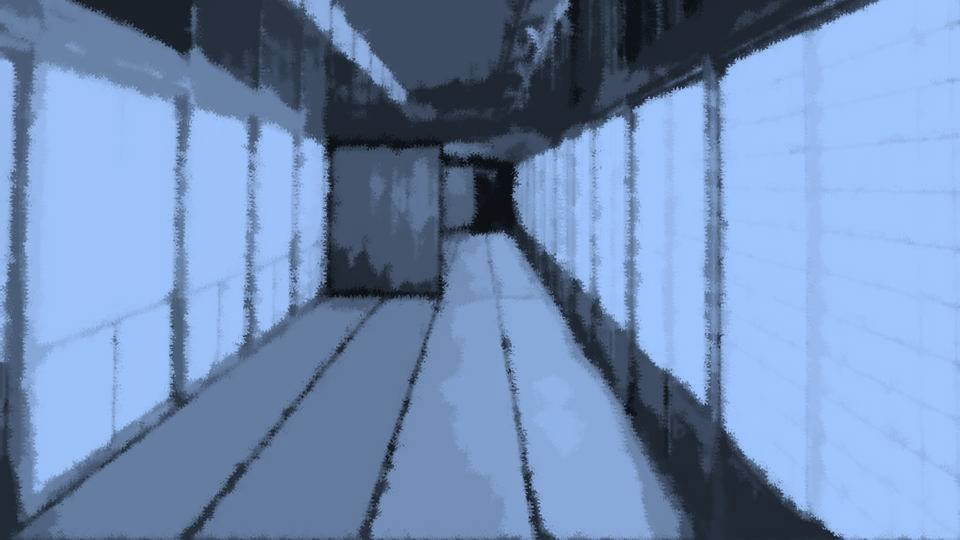
―Downstairs was dark too.
Where had everyone gone?
Could it be a surprise prank?
Was everyone hiding somewhere, planning to jump out and surprise me?
Where had everyone gone?
Could it be a surprise prank?
Was everyone hiding somewhere, planning to jump out and surprise me?
Oh well. I've caused them so much trouble, so I'll play along with the prank a little.
I walked down the hallway toward the living room.
I walked down the hallway toward the living room.
video: 111.wmvCherry petals again.
This is a pretty elaborate prank...
No, no, it would be tactless to get suspicious now. I have to let myself be properly fooled.
This is a pretty elaborate prank...
No, no, it would be tactless to get suspicious now. I have to let myself be properly fooled.
―And now I was in front of the living room.
When I opened this sliding door, would everyone jump out at me?
I should at least pretend to be surprised.
All right, I'm opening it, everyone.
When I opened this sliding door, would everyone jump out at me?
I should at least pretend to be surprised.
All right, I'm opening it, everyone.
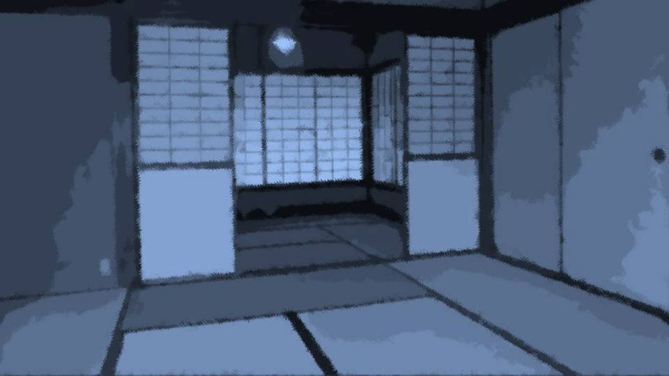
No one came out.
I don't mind, but hiding must be pretty hard work too, right?
Holding perfectly still so as not to move, holding your breath―
I don't mind, but hiding must be pretty hard work too, right?
Holding perfectly still so as not to move, holding your breath―
............?
One person was standing there, looking down.
Who? This person...
One person was standing there, looking down.
Who? This person...
"Good morning, Third Generation."
Without looking up, the person spoke to me.
That person's voice was rough and hoarse.
As if from screaming for 100 years straight until the vocal cords were crushed―
And what's 'Third Generation' supposed to mean, anyway...
Without looking up, the person spoke to me.
That person's voice was rough and hoarse.
As if from screaming for 100 years straight until the vocal cords were crushed―
And what's 'Third Generation' supposed to mean, anyway...
"Uh, who might you be?"
It was a woman, short like me.
Hair like mine.
A figure like mine.
Clothes like mine.
Like my―
It was a woman, short like me.
Hair like mine.
A figure like mine.
Clothes like mine.
Like my―
"'Who might I be'...
How unkind, Third Generation."
What's with the weird eighth-grader nickname...
What's with the weird eighth-grader nickname...
"My name is Erina Goto. And you?"
"Hee hee hee... do you even have the right to go by a human name?"
"Huh?"
I asked her name, and she answered with a question. I find that kind of thing unpleasant.
"Hee hee hee... do you even have the right to go by a human name?"
"Huh?"
I asked her name, and she answered with a question. I find that kind of thing unpleasant.
"I said, who are you!?"
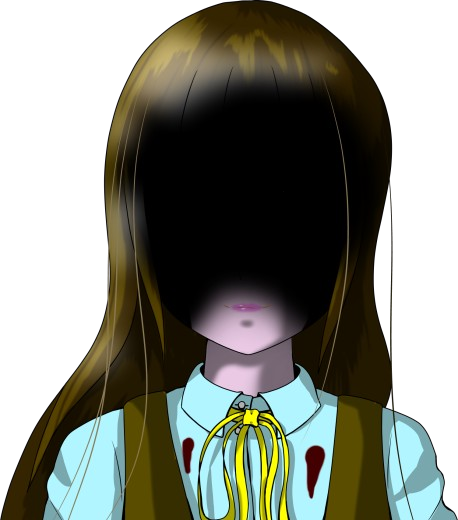
Both of her eyes were great gaping holes, and blood was running from them.
This person...
has no eyes...
Fresh blood, still streaming down from where her eyes had been.
That was proof she had lost her eyes just now.
Fresh blood, still streaming down from where her eyes had been.
That was proof she had lost her eyes just now.
"I'm sorry, but I can't see, so I don't know who you are."
"D... don't lie to me...! You're calling me 'Third Generation' and all, so you obviously know who I am...!"
"D... don't lie to me...! You're calling me 'Third Generation' and all, so you obviously know who I am...!"
"That's right, I really can't see.
But I know. By intuition."
"What do you mean, intuition..."
"You know, don't you? You have the same intuition as me. Showered in the blood of your dearest, dearest person, you were reborn. There's nothing left for you to fear now, is there?"
"What do you mean, intuition..."
"You know, don't you? You have the same intuition as me. Showered in the blood of your dearest, dearest person, you were reborn. There's nothing left for you to fear now, is there?"
"Senpai may be dead, but that doesn't mean I've been reborn!
I'm... I'm sad...!"
"Ah ha ha ha ha! Do you really mean that? Come now, look at my eyes. Do this, and no tears can flow. With no tears flowing, you don't have to force yourself to pretend to be sad. And besides―"
"Ah ha ha ha ha! Do you really mean that? Come now, look at my eyes. Do this, and no tears can flow. With no tears flowing, you don't have to force yourself to pretend to be sad. And besides―"
"No one gets to see the color of your eyes, either."
"M-my eyes are cured!"
"Did you actually believe Haruka Niimura when she said 'cured'? Have you looked in a mirror even once since you woke up? Ah ha ha ha! For a genius girl, you leave me speechless!"
"M-my eyes are cured!"
"Did you actually believe Haruka Niimura when she said 'cured'? Have you looked in a mirror even once since you woke up? Ah ha ha ha! For a genius girl, you leave me speechless!"
I hurriedly peered into the living room mirror.
My eyes are...
green...?
"You aren't cured. Everyone's just being considerate.
If you meet Sakura-san, you'll be gripped by that murderous urge again!"
"N-no! I'm not... anymore...!"
"Then, do you want to go and meet Sakura-san?"
"N-no! I'm not... anymore...!"
"Then, do you want to go and meet Sakura-san?"
Suddenly, the person I'd met in the basement room came in.

"Gh! Agh-gh-gh-gh-gh...!"
I want to kill... I want to kill...!
I want to kill... I want to kill...!
"Here, you should use this.
It gouged out my eyes, eyelids and all, so it cuts beautifully."
I was made to grip a knife in my hand.
"You don't have to hold back. Everyone will understand.
Even if you kill, it's an act of necessity; nobody will charge you.
If you kill, it'll feel so good, won't it?"
"N-no...! I don't want to k... I want to k... ill!"
"N-no...! I don't want to k... I want to k... ill!"
"Ah ha ha ha ha! That's it, that's it! Being honest with yourself is best!"
I can't hold back anymore...!
But if I kill... it'll feel so good.
I can't hold back anymore...!
But if I kill... it'll feel so good.
The feel of piercing flesh traveled into my hand.
"Oh, that's no good. Not just one stab to the belly. Come on, you have to stab again and again, or the suffering won't end."
Obeying that voice, I plunged the knife again and again into that person, who had fallen.
Belly― Chest― Lower belly― Neck― Face―
Not yet... still not dead...!
"Oh, that's no good. Not just one stab to the belly. Come on, you have to stab again and again, or the suffering won't end."
Obeying that voice, I plunged the knife again and again into that person, who had fallen.
Belly― Chest― Lower belly― Neck― Face―
Not yet... still not dead...!
"Come on, come on! A genius girl should know a human's vital points at least, right!?"
The most vital point on a human... The heart!
The most vital point on a human... The heart!
The knife slipped between the ribs and sank into the left side of the chest.
When I pulled the knife out, a fountain of vivid blood welled up.
This person's blood rained down on me. Just like when Kogori-senpai died―
When I pulled the knife out, a fountain of vivid blood welled up.
This person's blood rained down on me. Just like when Kogori-senpai died―
"Good work, Third Generation. Now you're not suffering anymore, are you?"
It... it feels good...
It was nothing like any pleasure I'd ever experienced.
Every fluid in my body turned into pleasure chemicals, and my mindless cells writhed in pleasure.
Ahh... it's too good...
It... it feels good...
It was nothing like any pleasure I'd ever experienced.
Every fluid in my body turned into pleasure chemicals, and my mindless cells writhed in pleasure.
Ahh... it's too good...
"Do you want more of this pleasure?"
"This good feeling... more...?"
I knew it by intuition.
There were more.
There were still people I wanted to kill.
"This good feeling... more...?"
I knew it by intuition.
There were more.
There were still people I wanted to kill.
Kana-chan, and then Chiga-nee, came in.
"Come on, it feels good, doesn't it? Do them both at once!"
That good feeling from before, once more...
Ha ha... I can't hold back anymore.
"Come on, it feels good, doesn't it? Do them both at once!"
That good feeling from before, once more...
Ha ha... I can't hold back anymore.
Lost in a frenzy, I drove the knife into the two of them.
Both of them stood motionless like mannequins, letting themselves be killed without resistance.
These mannequins were well made, though.
Each time they were stabbed, their bodies jerked like a spinal reflex, their faces twisted in agony, and they let out low groans.
Both of them stood motionless like mannequins, letting themselves be killed without resistance.
These mannequins were well made, though.
Each time they were stabbed, their bodies jerked like a spinal reflex, their faces twisted in agony, and they let out low groans.
"Oh? Why aren't you aiming for the vital points?"
"Because it'd be a waste to kill them right away!"
"Aaah ha ha ha! Wonderful! Just wonderful!"
"Because it'd be a waste to kill them right away!"
"Aaah ha ha ha! Wonderful! Just wonderful!"
―Eventually, neither of them so much as twitched, and they stopped reacting to the knife I drove in.
Ahh... it really feels good...
I want to just die like this.
Ahh... it really feels good...
I want to just die like this.
Pleasure that shot through the top of my head and made my whole body twitch and shudder like an electric shock.
Pleasure that could send me flying to the edge of the universe.
If I die like this, I'll have no regrets at all.
The strength drained from every opening in my body, and the fluids of pleasure, snot and drool and the rest, overflowed without end.
But... my tears alone would not flow.
Pleasure that could send me flying to the edge of the universe.
If I die like this, I'll have no regrets at all.
The strength drained from every opening in my body, and the fluids of pleasure, snot and drool and the rest, overflowed without end.
But... my tears alone would not flow.
All three of them died.
I killed them.
I killed them because I was suffering.
I killed them because I wanted to feel good.
As the pleasure ebbed, what awaited me was violent self-loathing― the natural consequence.
I killed them.
I killed them because I was suffering.
I killed them because I wanted to feel good.
As the pleasure ebbed, what awaited me was violent self-loathing― the natural consequence.
"There, now nothing threatens you anymore."
"Why do something like this...?"
"What are you saying? You killed them because you wanted to, didn't you?"
"No! I didn't want to do this! I'm not the one who did it!"
"Why do something like this...?"
"What are you saying? You killed them because you wanted to, didn't you?"
"No! I didn't want to do this! I'm not the one who did it!"
"You sound just like a child making excuses."
"You're the one who told me to do it, aren't you!?"
"Then if I told you to die, would you die?"
"No... no...!"
"You're the one who told me to do it, aren't you!?"
"Then if I told you to die, would you die?"
"No... no...!"
Then the living room door opened, and someone else came in.
"G-Goto... you...!"
"Niimura-senpai, no! I, I'm not the one who did it!"
"But you're holding a knife...!"
"Th-this isn't what you think!"
I hurriedly flung the knife away, but Senpai's expression didn't change.
"Niimura-senpai, no! I, I'm not the one who did it!"
"But you're holding a knife...!"
"Th-this isn't what you think!"
I hurriedly flung the knife away, but Senpai's expression didn't change.
"Murderer...!
Murderer!"
"I told you, no!"
"You killed them, didn't you! Natsumi―it was you who killed her too, wasn't it!"
"No no no no no no no no no!"
"I told you, no!"
"You killed them, didn't you! Natsumi―it was you who killed her too, wasn't it!"
"No no no no no no no no no!"
Senpai ran out of the living room, screaming something.
"No..."
My legs gave out, and I sank down beside the three bodies.
The blood and the fluids of pleasure shifted as I moved and clung thickly all over my body.
My legs gave out, and I sank down beside the three bodies.
The blood and the fluids of pleasure shifted as I moved and clung thickly all over my body.
"My, my... such an impatient person."
"Be quiet..."
"After all your devotion to her, such an unsympathetic Senpai..."
"Just... be quiet...!"
"Be quiet..."
"After all your devotion to her, such an unsympathetic Senpai..."
"Just... be quiet...!"
With that, she gently laid a hand on my shoulder where I sat slumped.
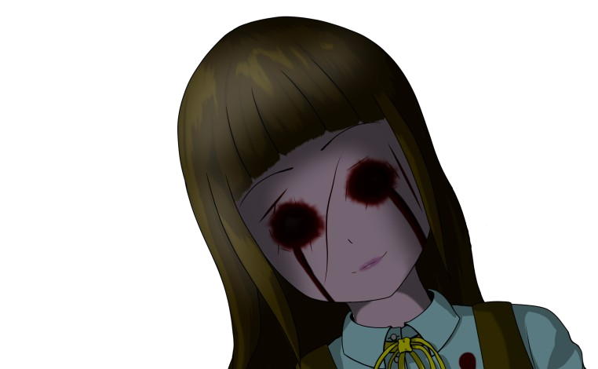
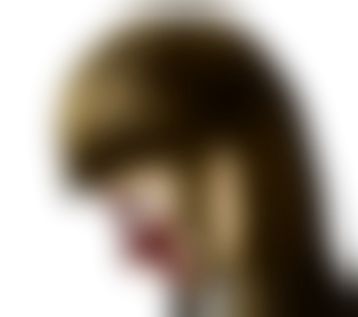
"It's all right. I'm on your side.
I know exactly how you feel.
Whenever you want help, lean on me."
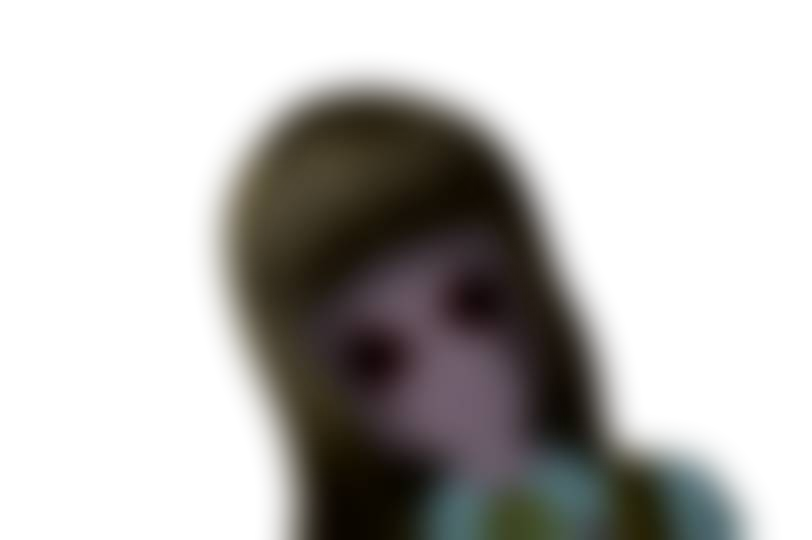
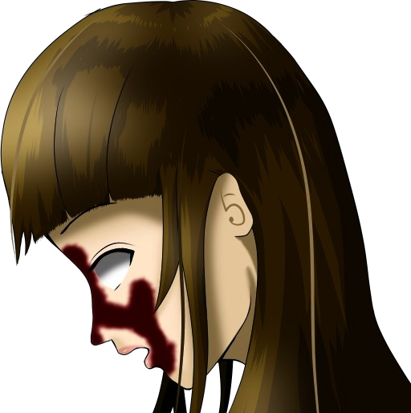
"I said be quiet..."
"This couldn't be helped.
It was proven hundreds of years ago.
You haven't done anything wrong."
"I said shut up..."
"............
Are you sad?"
"............
I don't know."
"............
Are you frustrated?"
"............
I don't know."
"............
Is it hard to bear?"
"............
It's hard to bear."
"Poor Third Generation.
All right. I'll make it so it isn't hard to bear anymore."
"............
Really?"
"I'm on your side.
When you want help, I'll help you.
I'm the only one who can help you."
With that, she picked up the knife I had thrown away and straddled me.

"What are you doing!?"
"Me, I threw away my eyes, so it isn't hard to bear. So I'll take your eyes too!"
"Stop!"
"Me, I threw away my eyes, so it isn't hard to bear. So I'll take your eyes too!"
"Stop!"
"It only hurts at first."
"I don't want to!"
"It's hard to bear because you have those eyes, isn't it?"
"Stop it!"
"I don't want to!"
"It's hard to bear because you have those eyes, isn't it?"
"Stop it!"
"You just won't give up, will you? And here you are, dribbling fluids of joy from all over your body."
"This isn't what you think!"
"Rather than feel that agony from before, you'd be better off having your stomach taken out without anesthesia, isn't that right?"
"Please, stop...!"
"Now, let's be reborn! Just get stabbed already!"
"This isn't what you think!"
"Rather than feel that agony from before, you'd be better off having your stomach taken out without anesthesia, isn't that right?"
"Please, stop...!"
"Now, let's be reborn! Just get stabbed already!"
The skin had been stripped from the entire body.


"The skin...?"
"That's right. It's no figure of speech. I believe the victim was literally dying, skin peeled off."
"That's right. It's no figure of speech. I believe the victim was literally dying, skin peeled off."
"Hey now... that's way beyond bad."

"The body found in Central Park is
Kogori-senpai's father.

Shiyo 788―exactly 12 years ago today, a hanami visitor died in an accident in Central Park.
Fell from a cherry tree.
Got drunk and went tree climbing or something, maybe?
The one who died was...
Motoki-cho resident Eiichiro Niimura-san (30)
Fell from a cherry tree.
Got drunk and went tree climbing or something, maybe?
The one who died was...
Motoki-cho resident Eiichiro Niimura-san (30)
Niimura...?
Niimura, as in...!
Niimura, as in...!
Right, having come this far, there's only one thing I can do.
And that's to ask Niimura-senpai about it.
If Senpai is this Niimura-san's daughter, I can't rule out the possibility that she's involved in this morning's incident, either.
And that's to ask Niimura-senpai about it.
If Senpai is this Niimura-san's daughter, I can't rule out the possibility that she's involved in this morning's incident, either.
...No, I'd better not call after all.
Even if I do ask, it should be after I've gathered more solid information.
Besides, there's no need to rush.
Right now, Kogori-senpai is at the police station.
She should be safe.
Even if I do ask, it should be after I've gathered more solid information.
Besides, there's no need to rush.
Right now, Kogori-senpai is at the police station.
She should be safe.
But right next door to Senpai's house is Niimura-senpai.
If Niimura-senpai is involved in the incident, I absolutely must not let her get close.
If Niimura-senpai is involved in the incident, I absolutely must not let her get close.
"S-Senpai! I'm scared! Right now, by myself..."
"Heh, really, Goto. You really are my cute junior. Then, Goto, come over to my place. That way we can be together, right?"
"All right. I'm sorry, please let me do that."
"Heh, really, Goto. You really are my cute junior. Then, Goto, come over to my place. That way we can be together, right?"
"All right. I'm sorry, please let me do that."
In that case, I'll be her bodyguard.
I may not be much to rely on, but if I stay on guard at all times, I can manage somehow.
If I stay awake and keep watch, we'll surely make it to morning.
Just in case, I'll bring anything that could work as a weapon.
I may not be much to rely on, but if I stay on guard at all times, I can manage somehow.
If I stay awake and keep watch, we'll surely make it to morning.
Just in case, I'll bring anything that could work as a weapon.

A hammer... a kitchen knife... a frying pan...
A box cutter, plus... a small saw... a wrench...
A box cutter, plus... a small saw... a wrench...
video: 桜.wmv

"Goto... let's run, quick!"
"Huh...?"
"Goto... it's... no use..."
"Huh...?"
"Goto... it's... no use..."
video: 桜.wmv―Before I went to sleep, I'd been uneasy.
But at some point I was drawn smoothly into a peaceful sleep, and the next thing I knew, the crisp morning sun after the rain was lighting up the room.
But at some point I was drawn smoothly into a peaceful sleep, and the next thing I knew, the crisp morning sun after the rain was lighting up the room.
video: 桜.wmv"Up we go!"
My first energetic wake-up in a long while.
Niimura-senpai, still asleep beside me.
At times like this, sure enough, my mischievous streak gets a little tickled.
My first energetic wake-up in a long while.
Niimura-senpai, still asleep beside me.
At times like this, sure enough, my mischievous streak gets a little tickled.
video: 桜.wmvHeh heh heh, now then, what shall I do to her...?
Doodling on her face is just too classic...
Something more stylish, a smarter prank.
And on top of that, a prank that doesn't hurt Senpai too much.
Doodling on her face is just too classic...
Something more stylish, a smarter prank.
And on top of that, a prank that doesn't hurt Senpai too much.
video: 桜.wmvI slipped quietly out of the room and went down to the first floor.
 video: 桜.wmv
video: 桜.wmv"Oh! Morning, Goto-chan! Looks like we can make it to the station by buggy today!"
"Good morning, Kotaro-san!"
I flashed Kotaro-san a big grin.
"Good morning, Kotaro-san!"
I flashed Kotaro-san a big grin.
video: 桜.wmvKotaro-san seemed to be cleaning up the yard, where yesterday's rain had scattered the blossoms.
And hanging ropes on the cherry tree, spreading out a big cloth.
I couldn't really tell what the job was for.
Since Kotaro-san showed no further interest in me, I snuck quietly into the kitchen.
And hanging ropes on the cherry tree, spreading out a big cloth.
I couldn't really tell what the job was for.
Since Kotaro-san showed no further interest in me, I snuck quietly into the kitchen.
 video: 桜.wmv
video: 桜.wmv"Now then, now then... do we have the ingredients...?"
Melting cheese, wieners, tomato ketchup, sliced bread.
Yep, perfect!
Melting cheese, wieners, tomato ketchup, sliced bread.
Yep, perfect!
video: 桜.wmvRight there on the spot, I quickly put together some pizza toast.
I'm not going to do anything as low as putting something spicy that Senpai hates in it.
I'm strictly going to make the most delicious pizza toast I can, just the way Niimura-senpai likes it.
I'm not going to do anything as low as putting something spicy that Senpai hates in it.
I'm strictly going to make the most delicious pizza toast I can, just the way Niimura-senpai likes it.
video: 桜.wmv"Oh, Goto-chan, good morning."
"Good morning!"
"Good morning!"
video: 桜.wmv
"My, were you hungry? You could have just told me..."
"No, no! This is bait for fishing, sir!"
"No, no! This is bait for fishing, sir!"
video: 桜.wmv"Fishing...?"
video: 桜.wmvThe toaster oven's cheerful signal announced that the fishing bait was done.
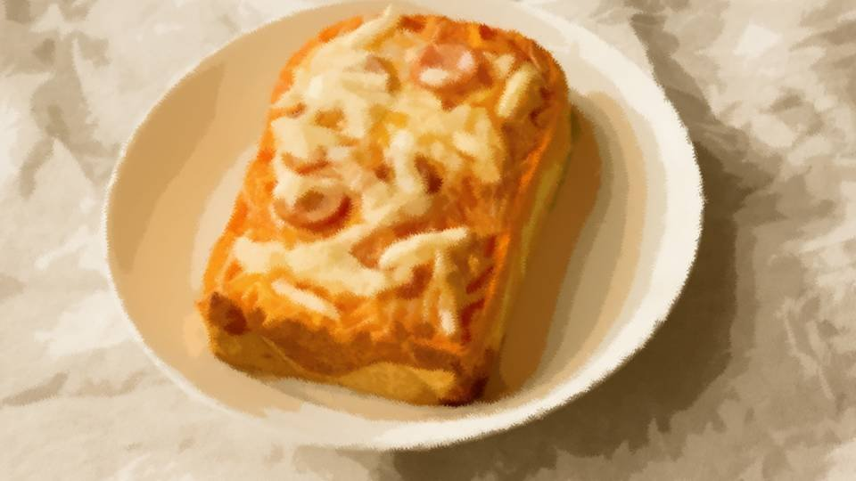
video: 桜.wmv"Ooh, ooh, ooh! Delicious-looking pizza toast!"
"This is the bait...?"
Fresh, piping-hot pizza toast.
I'd like to just bite into it myself.
"This is the bait...?"
Fresh, piping-hot pizza toast.
I'd like to just bite into it myself.
video: 桜.wmvI carried the finished pizza toast up to the second floor ever so carefully.
video: 桜.wmv"............?"
"What are you going to do with this?"
"Heh heh!"
I set the plate of pizza toast down in front of our room.
Then I left the door open just a crack.
"What are you going to do with this?"
"Heh heh!"
I set the plate of pizza toast down in front of our room.
Then I left the door open just a crack.
video: 桜.wmv"Haah, morning..."
"Mm... what are you doing?"
One after another, the gallery gathered.
"Mm... what are you doing?"
One after another, the gallery gathered.
video: 桜.wmvThen, from inside the room, the sound of someone crawling around.
"Pizza... pizza..."
Niimura-senpai's zombie-like voice drew closer little by little.
"No way..."
"Pizza... pizza..."
Niimura-senpai's zombie-like voice drew closer little by little.
"No way..."
video: 桜.wmvSlowly, the sliding door was opened.
video: 桜.wmv
Appearing there, crawling flat like an inchworm, was Niimura-senpai.
"Pizza... pizza..."
Obviously still half asleep, Niimura-senpai instinctively caught the signal the pizza was giving off and was drawn toward it.
"Pizza... pizza..."
Obviously still half asleep, Niimura-senpai instinctively caught the signal the pizza was giving off and was drawn toward it.
video: 桜.wmvStill on all fours, Niimura-senpai bit into the pizza toast.
This wasn't eating. It was predation.
This wasn't eating. It was predation.
video: 桜.wmv"Whoa..."
"Seriously..."
Rather than laughing at the bizarre sight, everyone seemed impressed.
"Seriously..."
Rather than laughing at the bizarre sight, everyone seemed impressed.
video: 桜.wmv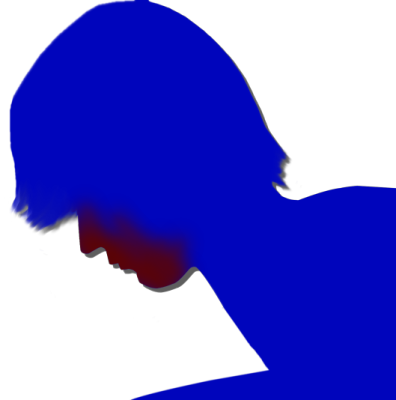
"Phew..."
video: 桜.wmvWith ketchup all over her face, Niimura-senpai crawled backward to her futon.
Good, good. Looks like I'm finally back in form too.
Good, good. Looks like I'm finally back in form too.
video: 桜.wmv"So...
Goto-chan, what were you trying to do?"
"Huh?"
"Yeah, how do I put it... the goal's not really clear."
"Huh? Huh?"
"Compared to Mom's pranks, it's way too soft... No follow-through. There's no big bang at the end."
"Huh?"
"Yeah, how do I put it... the goal's not really clear."
"Huh? Huh?"
"Compared to Mom's pranks, it's way too soft... No follow-through. There's no big bang at the end."
video: 桜.wmvEveryone spat out the same cold remarks and scattered.
video: 桜.wmvHuh? Am I... bombing?
video: 桜.wmv"Hey, Goto-chan, that pizza toast earlier looked good, so make me some too!"
"Ah... Yes... Yeah, sure..."
Ahh... I blew it at the very last moment.
I'd forgotten that this place had a high-spec prankster, the cosplay hag.
This genius girl's blunder of a lifetime...!
"Ah... Yes... Yeah, sure..."
Ahh... I blew it at the very last moment.
I'd forgotten that this place had a high-spec prankster, the cosplay hag.
This genius girl's blunder of a lifetime...!
 video: 桜.wmv
video: 桜.wmv"Thank you for having me."
video: 桜.wmv"Sorry for dragging you into all sorts of trouble..."
video: 桜.wmv"Goto-chan, next time, come over just to hang out.
Not for a funeral, just to hang out..."
"Yeah, I'll come see you again."
"Yeah, I'll come see you again."
video: 桜.wmv"Haruka, we'll hold Mifuyu-chan's funeral another day.
Once everything is properly ready, I'll let you know."
"Yeah..."
Niimura-senpai seemed to have been reminded all over again that her mom was dead, and her expression darkened.
"Yeah..."
Niimura-senpai seemed to have been reminded all over again that her mom was dead, and her expression darkened.
video: 桜.wmv"Mm... Haruka..."
"I'm fine, Chiga-nee. I've got Goto."
"I'm fine, Chiga-nee. I've got Goto."
video: 桜.wmv"When you're lonely, Senpai, just give me a call. I'll come flying right over."
"Until I get back everything I spent treating you, I'm gonna use you all I want!"
"Ouch, harsh..."
"Until I get back everything I spent treating you, I'm gonna use you all I want!"
"Ouch, harsh..."
video: 桜.wmv"All right, let's go."
We climbed onto the buggies.
We climbed onto the buggies.
video: 桜.wmv"You sure you're fine?"
"I'm fine."
"I'm fine."
 video: 桜.wmv
video: 桜.wmv"Thanks, Kotaro-san, Shirozaki-san.
I'll come again soon."
"Yeah, take care."
"Yeah, take care."
video: 桜.wmv"Hey, come on..."
"What is it..."
"I'm on your side."
"Is that so..."
"What is it..."
"I'm on your side."
"Is that so..."
video: 桜.wmv"What are you trying to do..."
"I want to help you."
"I said, what are you trying to do..."
"............"
"I want to help you."
"I said, what are you trying to do..."
"............"
 video: 桜.wmv
video: 桜.wmv
"Erina, over here..."
video: 桜.wmv"Hm? Who's that?"
"My sister. She says she'll drive us to Kogori-senpai's grave now."
"My sister. She says she'll drive us to Kogori-senpai's grave now."
video: 桜.wmv"If you had plans like that, tell me first...
Sorry. Thank you for doing this."
"Yes... likewise..."
"Yes... likewise..."
video: 桜.wmv"You fine? You've been spacing out ever since we left Arata."
"Hey, are you really fine?"
Everyone keeps saying fine, fine... what is this...
"Hey, are you really fine?"
Everyone keeps saying fine, fine... what is this...
video: 桜.wmv"You have to face reality..."
"Are you saying this is a dream?"
"Did you think it wasn't a dream?"
"It's not a dream."
"Are you saying this is a dream?"
"Did you think it wasn't a dream?"
"It's not a dream."
 video: 桜.wmv
video: 桜.wmv"There, that does it."
"Erina, you done? Did you finish praying properly?"
"Yeah, I'm fine now."
"Hey, Erina, by the way, this grave...
"Erina, you done? Did you finish praying properly?"
"Yeah, I'm fine now."
"Hey, Erina, by the way, this grave...
video: 桜.wmv
whose grave is it?"
"Huh?"
"Huh?"
video: 桜.wmv"Hey, Goto, who do you think died?"
"What?"
"Erina, isn't it about time you woke up?"
"That's right, Goto. Do you really think this is reality?"
"What?"
"Erina, isn't it about time you woke up?"
"That's right, Goto. Do you really think this is reality?"
video: 桜.wmv"At this rate, you're gonna die."
"It's about time you woke up."
"It's about time you woke up."
video: 桜.wmvWhat filled my eyes was a blizzard of cherry petals―
Not the grave, not Sis, not Senpai.
Just a blizzard of cherry petals.
Not the grave, not Sis, not Senpai.
Just a blizzard of cherry petals.
video: 桜.wmv
"Yeah, hello? Chiga-nee, that you?
...What?
Kotaro-san and Sakura-san...
killed themselves?
Hanged themselves from the cherry tree...?"
video: 桜.wmv"If you don't wake up soon, Goto, you'll be in danger."
"You... who are you?"
"You... who are you?"
video: 桜.wmv"It's me, Goto. I'm still alive."
"Who are you! Who on earth are you!?"
"Who are you! Who on earth are you!?"
video: 桜.wmvA cherry petal with blood on it.
This blood... whose blood is it?
"I told you, Goto, it's me! Wake up, quick!"
This voice... could it be...
This blood... whose blood is it?
"I told you, Goto, it's me! Wake up, quick!"
This voice... could it be...
video: 桜.wmv"You know everything now. So if you don't wake up as fast as you can, it'll be too late.
You―I'm the only one who can help you. I'll help you."
That voice...
"Whatever it takes, I have to bring you back to your senses, now...!"
Just as I thought, you're...
That voice...
"Whatever it takes, I have to bring you back to your senses, now...!"
Just as I thought, you're...
video: 桜.wmv
"Kogori-senpai...?"
video: 桜.wmv"Goto, look out!"
video: 桜.wmvThe person in front of me shoved me aside, and by a hair's breadth a sharp blade passed right beside me.
video: 桜.wmv
There stood the shinigami that had tried to hack me down with a nata.
video: 桜.wmv"Goto, you came to!?"
"K-Kogori-senpai!?"
"K-Kogori-senpai!?"
video: 桜.wmv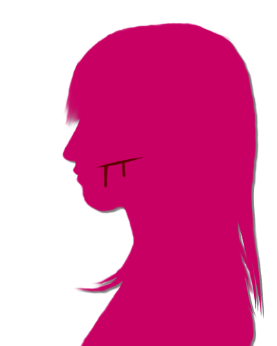
On Kogori-senpai's cheek was a deep cut where the nata had grazed it.
It seemed she had only just escaped that attack I'd thought had taken her head off.
Then something that had been stuck to my face fell off and landed in my hand.
It seemed she had only just escaped that attack I'd thought had taken her head off.
Then something that had been stuck to my face fell off and landed in my hand.
video: 桜.wmvIs this a petal with Kogori-senpai's blood on it...?
What I've been seeing all this time... could it be...!
What I've been seeing all this time... could it be...!
video: 桜.wmvThis person is, without a doubt, Mifuyu Niimura.
I see... I finally get what's going on.
What I've been seeing all this time was danger sense, given to me by just a tiny bit of Kogori-senpai's blood.
Kogori-senpai dying, going to the Arata settlement, all of it happened inside one split second of intuition.
Right now, it's still that moment on April 8...!
I see... I finally get what's going on.
What I've been seeing all this time was danger sense, given to me by just a tiny bit of Kogori-senpai's blood.
Kogori-senpai dying, going to the Arata settlement, all of it happened inside one split second of intuition.
Right now, it's still that moment on April 8...!
video: 桜.wmv"Niimura-senpai's mother, that's who you are, isn't it!? Please stop this!"
"Wh...!?"
"If this goes on, you'll burn yourself to death to wipe out the Droga, and Niimura-senpai will be heartbroken!"
"How do you know about the Droga...!?"
"Wh...!?"
"If this goes on, you'll burn yourself to death to wipe out the Droga, and Niimura-senpai will be heartbroken!"
"How do you know about the Droga...!?"
video: 桜.wmv"I know everything: about the Arata settlement, about Sakura-san, about Kotaro-san!
And out of remorse for sending the Droga to you, the two of them will kill themselves!
So... so please, no more...!"
video: 桜.wmv"No attack of yours will work on me!
Your body has to be near its limit from the Droga by now! Please turn yourself in!"
"............!!"
"Don't kill yourself, accept this society's judgment! If you die, you have no idea how terrible the things that happen will be...!"
"............!!"
"Don't kill yourself, accept this society's judgment! If you die, you have no idea how terrible the things that happen will be...!"
video: 桜.wmv
"H... Haruka...
Haruka I won't hand over...!"
video: 桜.wmv"Niimura-senpai won't abandon you over something like this!
No matter what happens, she'll go on accepting you as her mother!"
"No matter how good a girl Haruka is, something like that..."
"No matter how good a girl Haruka is, something like that..."
video: 桜.wmvJust then, I saw a short-haired girl riding a bicycle toward us from up ahead.
Could that be...!
Could that be...!
video: 桜.wmv"What are you guys doing in a place like this..."
video: 桜.wmv"Wait, it's you! So Dad really did become a shinigami and..."
video: 桜.wmv"Haruka...?"
"That voice, it's Mom! What on earth is going on!?"
"That voice, it's Mom! What on earth is going on!?"
video: 桜.wmv"Haruka, what about you, why are you here...?"
"I was just about to take the paper dolls to the police! But... no way, it can't be..."
"I was just about to take the paper dolls to the police! But... no way, it can't be..."
video: 桜.wmv"Haruka has found out too... So this is where it ends..."
"Mom! First, tell me what happened! I'm... no matter what, I'm your daughter, Mom!"
"Mom! First, tell me what happened! I'm... no matter what, I'm your daughter, Mom!"
video: 桜.wmv"Haruka..."
"Sorry, Mom... To help me, it was you doing all of it... Mom, you didn't really want to kill the ones who bullied me either, did you... It was all for me..."
"Sorry, Mom... To help me, it was you doing all of it... Mom, you didn't really want to kill the ones who bullied me either, did you... It was all for me..."
video: 桜.wmv"I'm... a failure of a mother who can't do anything but this..."
"It's my fault for driving you this far! Mom being a shinigami... That's... that's just my fault..."
"It's my fault for driving you this far! Mom being a shinigami... That's... that's just my fault..."
video: 桜.wmv"For being such a bad daughter... I'm sorry."
video: 桜.wmv"I knew far too little about everything...
Dad dying, Obasan ending up like this...
Intuition... what good was it..."
"Senpai, that's not true! Senpai, it's because you shared your power with me and got your message through to me...! So now, nothing worse is going to...!"
"Senpai, that's not true! Senpai, it's because you shared your power with me and got your message through to me...! So now, nothing worse is going to...!"
video: 桜.wmvI know.
That the number on the storehouse basement door was number wordplay on Kogori-senpai's name.
I'm starting to see the reason, more or less.
The relationship between Kogori-senpai and Niimura-senpai is―
That the number on the storehouse basement door was number wordplay on Kogori-senpai's name.
I'm starting to see the reason, more or less.
The relationship between Kogori-senpai and Niimura-senpai is―
video: 桜.wmvAnd if I let Niimura-senpai's mother die like this, Kotaro-san and Sakura-san will...
And then Chiga-nee and Kana-chan, left behind...
What I can do now is make Niimura-senpai's mother accept society's judgment, whatever it takes.
Only by doing that can I help everyone.
And then Chiga-nee and Kana-chan, left behind...
What I can do now is make Niimura-senpai's mother accept society's judgment, whatever it takes.
Only by doing that can I help everyone.
video: 桜.wmvI finally understood what that girl had meant.
Now that I knew about Green-Eye Curse-Killing, I had to get back to reality right away and help everyone.
That was why she'd tried every trick she had to call me back to reality.
Now that I knew about Green-Eye Curse-Killing, I had to get back to reality right away and help everyone.
That was why she'd tried every trick she had to call me back to reality.
video: 桜.wmvHumans get 80 percent of their information from sight.
That's why that girl, not seeing the illusions in front of her, had been able to look reality in the face.
I'd made it back to reality, just barely.
I... made it in time.
That's why that girl, not seeing the illusions in front of her, had been able to look reality in the face.
I'd made it back to reality, just barely.
I... made it in time.
video: 桜.wmvShiyo 800, April 8―
The Megasawa City case, which had shaken Japan, and the Motoki-cho case came to a close with the culprit turning herself in.
At the same time, Akane Kogori-san, who had been involved in the Megasawa City case, and Kotaro-san and Sakura-san of the Arata settlement were also to undergo questioning by the police...
The Megasawa City case, which had shaken Japan, and the Motoki-cho case came to a close with the culprit turning herself in.
At the same time, Akane Kogori-san, who had been involved in the Megasawa City case, and Kotaro-san and Sakura-san of the Arata settlement were also to undergo questioning by the police...
video: 桜.wmvI had received only the tiniest amount of blood from Senpai. Was that why?
It stopped at a single instant of intuition. My eye color never changed, and no murderous intent toward Kogori-senpai ever welled up in me.
I got checked at the hospital just in case, but there was nothing wrong.
So I no longer have any Third Generation power.
It stopped at a single instant of intuition. My eye color never changed, and no murderous intent toward Kogori-senpai ever welled up in me.
I got checked at the hospital just in case, but there was nothing wrong.
So I no longer have any Third Generation power.
video: 桜.wmvWhat I did―
turning the people involved in the cases over to the police, was that really the right thing?
No, I won't think about that.
I've seen it for myself.
Kotaro-san and Sakura-san, tormented by guilt over what happened 10 years ago―
For them too, this has to be the best way.
No, I won't think about that.
I've seen it for myself.
Kotaro-san and Sakura-san, tormented by guilt over what happened 10 years ago―
For them too, this has to be the best way.
video: 桜.wmvBut... what worries me is Kana-chan.
Chiga-nee is an adult, so she'll probably be all right... but Kana-chan had her parents taken away by the police.
The old lady is already elderly herself.
Will Kana-chan be okay?
Chiga-nee is an adult, so she'll probably be all right... but Kana-chan had her parents taken away by the police.
The old lady is already elderly herself.
Will Kana-chan be okay?
―Shiyo 800, August 1.
"Hey, why do I have to rent the car with my own money...?"
"Sis... do you hate me?"
"Not saying it here."
"Why? You always say it."
"Because those two over there are staring!"
"Sis... do you hate me?"
"Not saying it here."
"Why? You always say it."
"Because those two over there are staring!"

"Mmm, it's nice watching sisters who get along."
"Yeah! Yeah!"
"Yeah! Yeah!"
"What! We're not as clingy as you two sisters!"
"Master, you don't get clingy!?"
"I said stop calling me Master! Over a little Super Soda Bomber..."
"Master, you don't get clingy!?"
"I said stop calling me Master! Over a little Super Soda Bomber..."
"Momo-chin, I heard you're a pro at Super Soda Bomber?"
"And stop calling me Momo-chin too!"
"And stop calling me Momo-chin too!"

"Oh my! And who was it that lost at Russian takoyaki?
The rule is the loser gets a nickname from the winner!"
"Grrr... Hey, Erina! Do something about Flatty-chan here, who can't respect her elders!"
"Did you just say Flatty-chan?"
"Grrr... Hey, Erina! Do something about Flatty-chan here, who can't respect her elders!"
"Did you just say Flatty-chan?"
"The one who lost at Russian takoyaki along with me was Flatty-chan, wasn't it?"
"Grrr...! Just because you're a little big...!"
"Then why not at least slim down your waist? Doing what you can is more constructive than wishing for what you don't have."
"Grrr...! Just because you're a little thin...! And anyway, my waist is the one thing I'm confident about!"
"Grrr...! Just because you're a little big...!"
"Then why not at least slim down your waist? Doing what you can is more constructive than wishing for what you don't have."
"Grrr...! Just because you're a little thin...! And anyway, my waist is the one thing I'm confident about!"
"Okay, okay, let's leave it at that, you Russian takoyaki losers.
Oh, looks like they're here!"
"Haah, finally made it!"
"Everyone, introductions! This is my cousin, Kana Niimura!"
"Nice to meet you, everyone in the Mega-Boobs Squad!
A fresh-faced 10... no, as of today, 11! Kana Niimura!"
"Hey, Haruka, what's the Mega-Boobs Squad?
This kid... you haven't been putting weird ideas in her head, have you?"
"Wh-who knows! This one's always been crude like this... Ha ha ha..."
"Wh-who knows! This one's always been crude like this... Ha ha ha..."
"Hm...?
Huh? You... haven't we met somewhere before...?"
"Huh!?"
"Huh!?"
"Fall for stuff like thaaat, and some weird pickup artist's gonna carry you off!?"
"Ah... Right, ha ha ha..."
"Ah... Right, ha ha ha..."
"Come on, it's hot, let's get going. This kid's welcome party slash birthday party is at Zahha, right?"
"Heh heh heh..."
"Flatty-chan, what are you laughing at...?"
"Flatty-chan, what are you laughing at...?"
"Speaking of Zahha!
Speaking of Zahha!"
"Yeah, yeah, first we take Kana's stuff to my place.
We've gotta sort out the stuff sent from Arata too."
"Both senpai and Kana-chan at the Niimura house, huh. Sounds like fun..."
"Both senpai and Kana-chan at the Niimura house, huh. Sounds like fun..."
"Oh! Goto, wanna live at our place too?"
"Can I!?"
"Can I!?"
"Hey...
What is this... Erina, you idiot..."
"Oh! Master's siscon just kicked in!"
"I-it's not like that!"
"Oh! Master's siscon just kicked in!"
"I-it's not like that!"
"Well, well, everyone, nothing beats seeing you all so chummy!"
"Oh, Kana-chan, about the thing I asked Senpai to have you bring from Arata..."
"The falsi-whatsit, right!? Got it all ready! Now you can climb the stairs to adulthood, no problem!"
"Thank goodness..."
"The falsi-whatsit, right!? Got it all ready! Now you can climb the stairs to adulthood, no problem!"
"Thank goodness..."
"This tiny big-boobs lady, I heard she knows a ton about Arata, but how come!?"
"My name is Goto!"
"My name is Goto!"
"Oh! So you're the tiny big-boobs Goto-chan!
So you really are boing-boing?"
"Ugh, c'mon, let's save that kind of thing for later... It's way too hot..."
―Kana-chan, who'd been my worry for the future, ended up being taken in at Niimura-senpai's house.
It's a life without Mifuyu-san or Akane-san, but a new friend has joined us.
What Niimura-senpai said inside that intuition, 'who knows what's good luck and what's bad', isn't so far off the mark.
It's a life without Mifuyu-san or Akane-san, but a new friend has joined us.
What Niimura-senpai said inside that intuition, 'who knows what's good luck and what's bad', isn't so far off the mark.
The moment the incident 10 years ago happened, a happy ending for everything was out of reach, but...
Even so, the power Kogori-senpai gave me for just one instant let us avoid the worst.
From here on too... I'm sure we'll be fine.
Even so, the power Kogori-senpai gave me for just one instant let us avoid the worst.
From here on too... I'm sure we'll be fine.
I've got Kogori-senpai, and Niimura-senpai, and Kana-chan...
And above all... because I have Sis, who I love.
And above all... because I have Sis, who I love.
―The sun had almost completely set.
Let's head back to the Niimura main house while we can still see where we're stepping.
Let's head back to the Niimura main house while we can still see where we're stepping.
"Whew, good job, good job!"

Right now, it's just the two of us here.
It should be fine to show my bare face like this.
It should be fine to show my bare face like this.
"Hmm, Goto-chan's eye really is a solid green."
Gazing hard into my eyes was Kana-chan.
What does this green eye even mean?
Gazing hard into my eyes was Kana-chan.
What does this green eye even mean?
"Aww, I'm bored!
Papa, Mama, my sister, Grandma, none of them are here..."
Kotaro-san was apparently making the falsificaso.
About 'Mama' and 'Grandma,' I hadn't heard anything yet.
Kotaro-san was apparently making the falsificaso.
About 'Mama' and 'Grandma,' I hadn't heard anything yet.
"Hey, was all of Kana-chan's family at the meeting hall just now?"
"I don't know if Mama was there. Everyone's dressed the same. But Grandma was there! Grandma is the only one whose Noh mask and robes are different!"
There had certainly been someone in an old woman's Noh mask and black robes, but she can't tell which one is her mother?
"I don't know if Mama was there. Everyone's dressed the same. But Grandma was there! Grandma is the only one whose Noh mask and robes are different!"
There had certainly been someone in an old woman's Noh mask and black robes, but she can't tell which one is her mother?
"Hey, hey, Goto-chan, let's eat first!
Everyone's probably gonna be back late!"
"Yeah, let's."
Come to think of it, I was a little hungry.
My appetite, at least, was apparently as hearty as ever.
"Yeah, let's."
Come to think of it, I was a little hungry.
My appetite, at least, was apparently as hearty as ever.
"Then watch TV or something and wait! I'll have it ready in no time."
"Kana-chan, you're making it?"
"Kana-chan, you're making it?"
"Of course! I may not look it, but I've got a 10-year career in helping with the housework!"
You're using that phrase wrong...
But silently watching TV would feel awkward.
You're using that phrase wrong...
But silently watching TV would feel awkward.
"Kana-chan, I'll help too."
"It's fine, it's fine! A guest should just plop down all grand and wait!"
"It's fine, it's fine! A guest should just plop down all grand and wait!"
With that, Kana-chan disappeared into the kitchen.
She really is a cheerful kid.
Could she be looking out for me?
Maybe she's going out of her way so I can relax, even a little.
She really is a cheerful kid.
Could she be looking out for me?
Maybe she's going out of her way so I can relax, even a little.
"Goto-chan, sorry to keep you waiting!"

The meal set out in front of me was high quality for something prepared by a 10-year-old.
But all of it was stuff I'd never seen before.
But all of it was stuff I'd never seen before.
"Some of it's leftovers, though.
Okay then, itadakimasu!" [TN: itadakimasu: the words said before a meal]
"Kana-chan, this food... what is it...?"
"Umf, thish ish the bah-be-hue of the nei-bo-hoo mou-tai, an' 'at one'sh―"
"Ah, sorry, never mind, it's fine."
I put my chopsticks to the unknown dishes too.
"Kana-chan, this food... what is it...?"
"Umf, thish ish the bah-be-hue of the nei-bo-hoo mou-tai, an' 'at one'sh―"
"Ah, sorry, never mind, it's fine."
I put my chopsticks to the unknown dishes too.
............
Mm, delicious!
Her cooking skills are solid, but the ingredients themselves are wonderful.
Are these ingredients caught around here?
I silently shoveled a heaping bowl of rice and the unknown dishes into my mouth.
Her cooking skills are solid, but the ingredients themselves are wonderful.
Are these ingredients caught around here?
I silently shoveled a heaping bowl of rice and the unknown dishes into my mouth.
"Ehehe, Goto-chan, is it good?"
"Ish really goo' an' delishush!"
"Ish really goo' an' delishush!"
"Ah, sorry, never mind, take your time eating!"
That's a little embarrassing...
That's a little embarrassing...
"Goto-chan, you eat so much! Maybe even more than my sister?"
"By 'your sister,' you mean Chiga-nee?"
"Yep! She doesn't eat much normally, but she said if she wants to, she can eat as much as she likes!"
That slim Chiga-nee...
Well, I'm small and a big eater too, so maybe it's not that strange.
"By 'your sister,' you mean Chiga-nee?"
"Yep! She doesn't eat much normally, but she said if she wants to, she can eat as much as she likes!"
That slim Chiga-nee...
Well, I'm small and a big eater too, so maybe it's not that strange.
"Hey, hey, Goto-chan!"
"Hm?"
"Is it good?"
"Huh? Yeah, it's good."
She was like a new bride watching her husband eat.
"Hm?"
"Is it good?"
"Huh? Yeah, it's good."
She was like a new bride watching her husband eat.
"Hey, hey, Goto-chan!"
"Hm?"
"Is it good?"
"Huh? Yeah, it's good, really."
The same question again...
"Hm?"
"Is it good?"
"Huh? Yeah, it's good, really."
The same question again...
"Hey, hey, Goto-chan!"
"Hm?"
What is it this time?
"Hm?"
What is it this time?

"After this, do you want a bath?
Or...
yours
tru-
ly?"
That's just a dirty joke!
This kid is a little tiring...
And quit blushing!
That's just a dirty joke!
This kid is a little tiring...
And quit blushing!
"Listen, Goto-chan..."
What now...
"Are you okay?"
"Huh?"
What now...
"Are you okay?"
"Huh?"
"Goto-chan, you've had a crying face this whole time, so..."
A crying face?
Sure, I came for a funeral, so I've been careful about how I act.
A crying face?
Sure, I came for a funeral, so I've been careful about how I act.
"Maybe it's because Niimura-senpai's mother passed away..."
"No, that's not it. Not that kind of thing... You're like an animal that lost its mother."
What is she talking about? My family is alive and well in Motoki-cho...
"No, that's not it. Not that kind of thing... You're like an animal that lost its mother."
What is she talking about? My family is alive and well in Motoki-cho...
"I go hunting in the mountains all the time, and sometimes you find them. Animals that got separated from their mothers and look like they're about to cry.
But animals don't shed tears, right?
Goto-chan's face is the same, so..."
Just then, Kogori-senpai's face rose in my mind.
The one I had always looked up to and loved so much, Senpai.
That Senpai was killed right in front of my eyes.
The one I had always looked up to and loved so much, Senpai.
That Senpai was killed right in front of my eyes.
Normally, the shock would leave a person too crushed to recover.
But I didn't feel much sadness.
If anything, I had broken free of my dependence on Kogori-senpai.
I no longer needed Kogori-senpai.
Because there was nothing left for me to fear.
As long as I had this precognition...
But I didn't feel much sadness.
If anything, I had broken free of my dependence on Kogori-senpai.
I no longer needed Kogori-senpai.
Because there was nothing left for me to fear.
As long as I had this precognition...
"Kana-chan, it was delicious. Gochisosama." [TN: the words said after a meal]
Holding back more than usual, I set down my chopsticks.
"It was nothing fancy! Don't go crying when you're back in Motoki-cho because you miss my cooking!"
"Like I'd ever... No... cook for me again sometime."
"Yes, dear husband!"
Honestly... weird kid.
Holding back more than usual, I set down my chopsticks.
"It was nothing fancy! Don't go crying when you're back in Motoki-cho because you miss my cooking!"
"Like I'd ever... No... cook for me again sometime."
"Yes, dear husband!"
Honestly... weird kid.
―I went back upstairs and lay down in the dark room.
"Has had a crying face this whole time."
Those words wouldn't leave my head.
I'm not even crying...
"Has had a crying face this whole time."
Those words wouldn't leave my head.
I'm not even crying...
Why am I not sad?
Why can't I cry?
At Senpai's funeral too, I got through it without shedding a tear, on the pretense of it being too sudden to accept.
Why can't I cry?
At Senpai's funeral too, I got through it without shedding a tear, on the pretense of it being too sudden to accept.
Niimura-senpai was crying, and so was Kogori-senpai's mother.
When you lose a best friend or a daughter, it's normal to end up like that.
I had put everything into pretending to comfort the two of them.
Is her mother still rushing around with the cleanup after the funeral, even now?
When you lose a best friend or a daughter, it's normal to end up like that.
I had put everything into pretending to comfort the two of them.
Is her mother still rushing around with the cleanup after the funeral, even now?
By rights, Senpai's mother would have wanted to come to Mifuyu Niimura's funeral too.
Then I'll have to stand in for her and pray for Mifuyu Niimura's soul.
I have to lighten, even a little, the grief of losing a daughter, a best friend, and a husband all at once that Senpai's mother must be feeling.
When I think about what Akane-san is going through... I feel like I'm going to cry.
Then I'll have to stand in for her and pray for Mifuyu Niimura's soul.
I have to lighten, even a little, the grief of losing a daughter, a best friend, and a husband all at once that Senpai's mother must be feeling.
When I think about what Akane-san is going through... I feel like I'm going to cry.
Going to cry...?
Something's wrong...
Something's wrong with me after all...!
I almost cry over Senpai's mother, so why can't I cry over Kogori-senpai?
What's happened to me?
Something's wrong...
Something's wrong with me after all...!
I almost cry over Senpai's mother, so why can't I cry over Kogori-senpai?
What's happened to me?
I tried thinking back a little more on Kogori-senpai.


The first time we met―


Supporting Senpai so she could win a starting spot―
Eating at Zahha with Niimura-senpai along too―
All of them are happy memories.
All of them are happy memories.
But... why is it...
What is this sense of release...
I really have lost it!
I want to cry...! I want to grieve that Senpai died!
I... I...!
What is this sense of release...
I really have lost it!
I want to cry...! I want to grieve that Senpai died!
I... I...!
"Goto-chan? I'm coming in, okay?"
"Goto-chan! What's wrong!? Are you okay!?"
The moment Kana-chan entered the room, she ran over to me and stroked the skin around my eyes.
The moment Kana-chan entered the room, she ran over to me and stroked the skin around my eyes.
"Huh...? You're not crying...
You've got a crying face, but you're really not crying..."
No tears came from my eyes.
I'm crying without shedding tears.
No tears came from my eyes.
I'm crying without shedding tears.
"Kana-chan... when someone precious to you dies, you normally shed tears, right?"
"Yeah..."
"But... I think I've lost my tears. Not long ago, someone precious to me died, and yet... something's wrong with me."
"Goto-chan... It's okay. You've got me, and Haruka-chan, and my sister too. And besides..."
"Yeah..."
"But... I think I've lost my tears. Not long ago, someone precious to me died, and yet... something's wrong with me."
"Goto-chan... It's okay. You've got me, and Haruka-chan, and my sister too. And besides..."
"And besides, there's Mama too!
My mama is super good at listening to people!
So you should try talking to Mama about it!"
She's someone I haven't met yet, but any mother who can raise a kid like Kana-chan must be a wonderful person.
She's someone I haven't met yet, but any mother who can raise a kid like Kana-chan must be a wonderful person.
"When will your mom be back?"
"The thing is, they just called to say everyone's staying over at the meeting hall tonight.
They're busy with all kinds of stuff, so they're staying over and working all night."
"I see... So tonight it's just me and Kana-chan."
"Yep, so you don't have to worry about your eyes either! Hey, hey, let's take a bath together! The bath's ready, so I came to get Goto-chan!"
"Yeah, let's do that..."
"I see... So tonight it's just me and Kana-chan."
"Yep, so you don't have to worry about your eyes either! Hey, hey, let's take a bath together! The bath's ready, so I came to get Goto-chan!"
"Yeah, let's do that..."
"Ehehe! A bath with Goto-chan!
Don't look at me...
with dirty eyes..."
Honestly... what a truly weird kid.
Honestly... what a truly weird kid.
video: 桜.wmv"The Gotos Phantom Thief Gang has arrived!"
 video: 桜.wmv
video: 桜.wmv―After our bath, in the garden, cherry petals dancing on the breeze―
we stood before the storehouse in one corner of it.
The secret of my eyes might be hidden in here.
The secret of my eyes might be hidden in here.
video: 桜.wmv"Phantom Thief Captain Goto! No one in the vicinity!"
"So, Kana-chan, why do we have to dress like this?"
"I am not Kana! I am Vice-Captain Phantom Thief Niimura! We disguise ourselves so our identities stay hidden, Captain!"
Small as we are, dressing like this won't fool anybody...
"So, Kana-chan, why do we have to dress like this?"
"I am not Kana! I am Vice-Captain Phantom Thief Niimura! We disguise ourselves so our identities stay hidden, Captain!"
Small as we are, dressing like this won't fool anybody...
video: 桜.wmv"...It's locked..."
"Captain Goto! Anticipating just such a situation, I have prepared a secret item!"
"Captain Goto! Anticipating just such a situation, I have prepared a secret item!"
video: 桜.wmv
Kana-chan had something dangling from her hand: a ring of keys.
Is the storehouse key mixed in among them?
The Niimura adults probably keep them, normally.
Even so, it's hardly a secret item...
Is the storehouse key mixed in among them?
The Niimura adults probably keep them, normally.
Even so, it's hardly a secret item...
video: 桜.wmv"Thanks, Kana-chan. Which key is it...?"
"I am not Kana! I am Vice-Captain Niimura!"
I silently took the key ring and tried sticking a random key into the keyhole.
"I am not Kana! I am Vice-Captain Niimura!"
I silently took the key ring and tried sticking a random key into the keyhole.
video: 桜.wmv"Oh, it opened on the first try..."
"As expected of Captain Goto! A key is either a hit or a miss, so the odds of hitting it on the first try were 50%, were they not!?"
"...Sure..."
"As expected of Captain Goto! A key is either a hit or a miss, so the odds of hitting it on the first try were 50%, were they not!?"
"...Sure..."
I knew no one was around, but I slid the door open slowly, trying to make as little noise as possible.
From the pitch-dark storehouse, a musty smell and dust came billowing out on the draft.
It's too dark to see much...
And turning on the storehouse light would obviously give us away...
It's too dark to see much...
And turning on the storehouse light would obviously give us away...
"Captain Goto! Anticipating just such a situation!"
Kana-chan held out a flashlight to me.
But I was already using my smartphone's light.
Kana-chan held out a flashlight to me.
But I was already using my smartphone's light.

Making full use of two lights, the Gotos Phantom Thief Gang infiltrated the storehouse.
There were no books or bookshelves in sight.
Mixed in with the junk lay a great many natas and maces.
Some were new, but there were even ones so rusted and decayed I couldn't tell how old they were.
There were no books or bookshelves in sight.
Mixed in with the junk lay a great many natas and maces.
Some were new, but there were even ones so rusted and decayed I couldn't tell how old they were.
"Captain Goto! Here, look at this!
Could this be... treasure!?"
Kana-chan brought over something that sparkled in the light.
It looked like a gold bar, but it was awfully light.
It looked like a gold bar, but it was awfully light.
"Kana-chan, this is gold-plated."
"Geez! I told you, it's Vice-Captain Niimura!"
Hearing it was gold plating seemed to make her sulk a little.
"Geez! I told you, it's Vice-Captain Niimura!"
Hearing it was gold plating seemed to make her sulk a little.
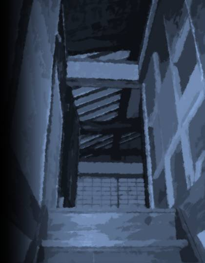
Stairs, further in...?
They split into stairs going up to the second floor and down to the basement.
So this storehouse has three levels.
They split into stairs going up to the second floor and down to the basement.
So this storehouse has three levels.
"Hey, Kana-chan, can you search the second floor?
If you find any old books, tell me right away."
"............
Okaaay..."
Kana-chan seemed to have given up on the phantom thief gang setup.
Maybe that was too cold of me.
Kana-chan seemed to have given up on the phantom thief gang setup.
Maybe that was too cold of me.
"I'm counting on you! Vice-Captain Niimura!"
"Oh...!
"Oh...!
Okay! Leave it to me, Captain Goto!"
Kana-chan ran up the stairs in high spirits.
Normally, I'd be able to go along with this kind of thing...
Normally, I'd be able to go along with this kind of thing...

When I went down to the basement, there was a door like an iron wall.
This spot alone was strangely heavily secured...
I tried the knob, but of course it was locked.
Where was the keyhole...?
This spot alone was strangely heavily secured...
I tried the knob, but of course it was locked.
Where was the keyhole...?
............
............?
There was no keyhole.
What I saw instead of a keyhole was...
There was no keyhole.
What I saw instead of a keyhole was...

A four-digit combination lock.
The door and the combination lock both look awfully new next to the look of this storehouse.
It can only have been about 10 years since they were installed here.
The door and the combination lock both look awfully new next to the look of this storehouse.
It can only have been about 10 years since they were installed here.
10 years...?
About 10 years is only my estimate, but― 10 years ago is when the first Megasawa City case happened, and when Kana-chan was born.
And when Chiga-nee's green eye turned blue.
That nags at me...
About 10 years is only my estimate, but― 10 years ago is when the first Megasawa City case happened, and when Kana-chan was born.
And when Chiga-nee's green eye turned blue.
That nags at me...
Oh well. More importantly, how do I unlock it?
This lock isn't something removable like a padlock; it's completely part of the door.
Which means the door and the lock were both custom-made for this place.
In other words, the number was also set by the person who bought this door― most likely someone in the Niimura family chose the unlock number.
Store-bought combination locks usually come with the number already set.
This lock isn't something removable like a padlock; it's completely part of the door.
Which means the door and the lock were both custom-made for this place.
In other words, the number was also set by the person who bought this door― most likely someone in the Niimura family chose the unlock number.
Store-bought combination locks usually come with the number already set.
Kana-chan probably wouldn't know, even if I asked her.
A number that's likely tied to the Niimura family...
I'll just have to guess on my own.
A number that's likely tied to the Niimura family...
I'll just have to guess on my own.
For now, the date that seems connected to when this door was installed is April 8, the day of the Megasawa City case.
0 4 0 8, I try.
No good...
8040 got the same result.
0 4 0 8, I try.
No good...
8040 got the same result.
Niimura-senpai's birthday is April 30, so...
0 4 3 0―
Not it...
0 4 3 0―
Not it...
Of course not...
It has to be a number Kana-chan could never figure out.
Meaning, a number that at first glance has nothing to do with the Niimura family, but is actually deeply tied to it...
As if an outsider like me could ever...
Well, whatever. I'll just punch something in.
It has to be a number Kana-chan could never figure out.
Meaning, a number that at first glance has nothing to do with the Niimura family, but is actually deeply tied to it...
As if an outsider like me could ever...
Well, whatever. I'll just punch something in.
For example...
My birthday― yep, that's an out, of course.
Kogori-senpai's birthday― yep, two outs.
The rest, by number wordplay... [TN: 7-2-3 can be read "na-tsu-mi" in Japanese number wordplay]
Natsumi（ 0 7 2 3）, then.
Yep, of course this one's also―
No way... it opened...?
My birthday― yep, that's an out, of course.
Kogori-senpai's birthday― yep, two outs.
The rest, by number wordplay... [TN: 7-2-3 can be read "na-tsu-mi" in Japanese number wordplay]
Natsumi（ 0 7 2 3）, then.
Yep, of course this one's also―
No way... it opened...?
W-well, it's probably a coincidence. July 23 must be somebody's birthday.

The door swung open slowly, without a sound.
Air even mustier than on the first floor flowed out from inside.
Like the smell of a used bookstore concentrated 100 times.
When I shone my light inside...
Air even mustier than on the first floor flowed out from inside.
Like the smell of a used bookstore concentrated 100 times.
When I shone my light inside...
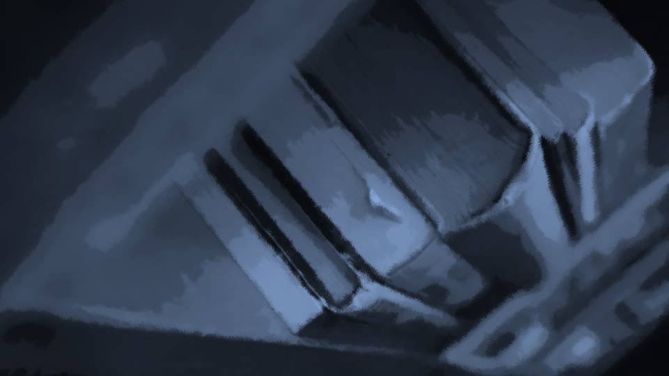
There it was...!
Rows of books filled the cramped room.
And every single one of them was old.
Many of them looked like Western books.
Rows of books filled the cramped room.
And every single one of them was old.
Many of them looked like Western books.
Come to think of it, the drug's name, falsificaso, is Portuguese.
Kana-chan and her family having blue eyes, too, suggests this settlement may have had contact with a foreign land long ago.
Kana-chan and her family having blue eyes, too, suggests this settlement may have had contact with a foreign land long ago.
For now, I'll look through all sorts of them.
There's everything from ones that look easy to read to old script that must have been around for ages.
What I want is information about these eyes.
There's everything from ones that look easy to read to old script that must have been around for ages.
What I want is information about these eyes.
This one is... about funeral practices.
With tomorrow coming up, I'll take a quick look.
I set the book on the desk in the middle.
Beside it was an electric desk lamp.
Underground, there was no worry about light leaking outside.
With tomorrow coming up, I'll take a quick look.
I set the book on the desk in the middle.
Beside it was an electric desk lamp.
Underground, there was no worry about light leaking outside.
This is a pre-Edo writing style.
And yet it isn't vertical; it's written horizontally, left to right.
It's full of classical Japanese, but in my hands, stuff like this doesn't need a dictionary.
It even comes with a table of contents, how thoughtful.
And yet it isn't vertical; it's written horizontally, left to right.
It's full of classical Japanese, but in my hands, stuff like this doesn't need a dictionary.
It even comes with a table of contents, how thoughtful.
Let's see, the table of contents says...
・Names of the Dead
・The Role of the Witch
・The Attire of Mourners
・Falsificaso
Reading them one by one would take time, so I'll skim through.
・Names of the Dead
・The Role of the Witch
・The Attire of Mourners
・Falsificaso
Reading them one by one would take time, so I'll skim through.
To roughly sum up 'Names of the Dead'―
Those who have died are called shinigami.
The shinigami take with them those they wish to take to the next world.
They seal their bodies in a Noh mask and a red overgarment（red robes）, and using a nata and a hammer（a mace）, they kill the living.
Those who have died are called shinigami.
The shinigami take with them those they wish to take to the next world.
They seal their bodies in a Noh mask and a red overgarment（red robes）, and using a nata and a hammer（a mace）, they kill the living.
How unsettling... Making trouble for people even after they're dead.
Next, 'The Role of the Witch'―
The witch shall dress as the shinigami and protect herself.
By this, the eyes of the shinigami are deceived.
And only the Grand Witch, who is the head, can vanquish the shinigami.
The witches support the Grand Witch while sending the shinigami back to the next world, huh...
The witch shall dress as the shinigami and protect herself.
By this, the eyes of the shinigami are deceived.
And only the Grand Witch, who is the head, can vanquish the shinigami.
The witches support the Grand Witch while sending the shinigami back to the next world, huh...
And then 'The Attire of Mourners'―
Mourners shall dress as the shinigami and the witches.
With everyone dressed alike, the shinigami cannot tell one person from another.
From leaving home until returning, no taking anything off, it says...
Mourners shall dress as the shinigami and the witches.
With everyone dressed alike, the shinigami cannot tell one person from another.
From leaving home until returning, no taking anything off, it says...
The outfit Mifuyu Niimura wore that time, if I had to pick one of these three, was probably the shinigami―
the role of killing the living.
I see. Since Niimura-senpai believes in the shinigami, even if someone ever saw this outfit, it could be passed off as the shinigami's doing.
I see, I see. It's gradually coming together.
I see. Since Niimura-senpai believes in the shinigami, even if someone ever saw this outfit, it could be passed off as the shinigami's doing.
I see, I see. It's gradually coming together.
Eiichiro Niimura died because Kogori-senpai let a balloon fly off.
His funeral was where Niimura-senpai would have seen the shinigami outfit, and she must have worn the Noh mask and robes there.
So she has taken part in a ceremony in this outfit at least once.
His funeral was where Niimura-senpai would have seen the shinigami outfit, and she must have worn the Noh mask and robes there.
So she has taken part in a ceremony in this outfit at least once.
If I assume the culprit of the Megasawa City case is Mifuyu Niimura, she probably wore the shinigami outfit when she committed those crimes, too.
And then there's that extraordinary physical ability.
And then there's that extraordinary physical ability.
Mifuyu Niimura was running away when I sensed by intuition: 'She'll burn herself to death to get rid of the drug in her body.'
If that drug in her body is what made that physical ability possible, it all adds up.
The Megasawa City case needed at least two people doing the killing, so there must have been an accomplice.
If that drug in her body is what made that physical ability possible, it all adds up.
The Megasawa City case needed at least two people doing the killing, so there must have been an accomplice.
Mifuyu Niimura... who would back her that far? Kogori-senpai's parents, maybe?
I see, so that's how they were building alibis.
What a boring method. I thought it'd be something trickier, but in the end it was brute force.
I see, so that's how they were building alibis.
What a boring method. I thought it'd be something trickier, but in the end it was brute force.
As for a motive, maybe Niimura-senpai got caught up in trouble at school, like bullying?
If I remember right, the victims of the case were all connected to schools, and in the first and last incidents they were kids the same age as Niimura-senpai.
If the overprotective Mifuyu Niimura decided to kill...
If I remember right, the victims of the case were all connected to schools, and in the first and last incidents they were kids the same age as Niimura-senpai.
If the overprotective Mifuyu Niimura decided to kill...
Ahh, what a letdown.
I thought the Megasawa City case culprit would have far more impressive brains and motives.
The moment I get even slightly involved in a case, I figure it out right away.
I thought the Megasawa City case culprit would have far more impressive brains and motives.
The moment I get even slightly involved in a case, I figure it out right away.
Well, who cares about someone who got scared of me and killed herself.
I'll look at the last chapter.
Okay, 'Falsificaso,' then.
I'll look at the last chapter.
Okay, 'Falsificaso,' then.
Huh? Only the falsificaso section is in a newer writing style.
Did someone add to it later?
Did someone add to it later?
Let's see...
Mourners shall burn falsificaso and purify both the shinigami and themselves.
By this the curse is purified, and curse-killing can be prevented.
By this the curse is purified, and curse-killing can be prevented.
I couldn't quite follow what it meant.
I did get that falsificaso is something like an incense offering.
I did get that falsificaso is something like an incense offering.
But curses, curse-killing...
The way this is written, the residents fear curses and curse-killing, and not just at memorial services.
The way this is written, the residents fear curses and curse-killing, and not just at memorial services.
And they purify that with this falsificaso?
Even so, it's a strange name. Giving it a name that means 'fake'...
Which means there must be a 'real' one.
Even so, it's a strange name. Giving it a name that means 'fake'...
Which means there must be a 'real' one.
Maybe there's information on that 'real' drug, too.
Isn't there a book somewhere about a drug that bears the 'real' name?
For now, I'll look for books that seem Portuguese.
The 'real' drug's name is probably Portuguese, too.
Isn't there a book somewhere about a drug that bears the 'real' name?
For now, I'll look for books that seem Portuguese.
The 'real' drug's name is probably Portuguese, too.
I went back to the bookshelves and looked for a book with a likely title.
Old style or not, every one of them was written in Japanese.
If there was a spine in katakana among them, that would be the target.
After searching every corner, the one katakana spine that caught my eye.
Old style or not, every one of them was written in Japanese.
If there was a spine in katakana among them, that would be the target.
After searching every corner, the one katakana spine that caught my eye.
“The Droga Refining Method”
Droga does exist as a Portuguese word, too.
If I remember right, it's a word meaning medicine or drugs.
Droga does exist as a Portuguese word, too.
If I remember right, it's a word meaning medicine or drugs.
Now then, I'll read this one too, just in case.
It's not that thick a book, so I'll probably finish it soon.
It's not that thick a book, so I'll probably finish it soon.
"Hey, Goto! Wake up!"
"Goto-chan, hang in there...!"
"Goto-chan, hang in there...!"
From outside, the light of the midday sun.
A dream...?
Was it a dream...?
Kana-chan is alive, so... a dream...?
No, it's not...!
A dream...?
Was it a dream...?
Kana-chan is alive, so... a dream...?
No, it's not...!
"You're soaked in sweat...
Kana, go heat up the bath!"
"Got it!"
"Got it!"
"Goto, you okay? You were moaning in your sleep like crazy."
"Uuu... Senpai... please don't hate me..."
"Uuu... Senpai... please don't hate me..."
Senpai―I clung to her tight.
And Senpai gently hugged me back.
And Senpai gently hugged me back.
"There, there. You had a scary dream. It's okay, it was all a dream."
"It wasn't a dream... It wasn't a dream..."
"It was all just a dream...!"
"But look, this!"
What was clutched in my hand―
"It wasn't a dream... It wasn't a dream..."
"It was all just a dream...!"
"But look, this!"
What was clutched in my hand―
it was a cherry petal with blood on it.
The one I'd picked up in the dark hallway a little while ago.
The one I'd picked up in the dark hallway a little while ago.
"This is...
Yesterday, Goto, with Kana riding on you, you went crawling all over the basement room, right?
You got scraped up then, and while we were carrying you here, a cherry petal―"
Senpai hadn't finished talking when I peered into the mirror.
Unblinking, I faced off with my own face.
Gazing... hard into my eyes― I sank to the floor where I stood.
Unblinking, I faced off with my own face.
Gazing... hard into my eyes― I sank to the floor where I stood.
"See? They're all better."
"............ Yes..."
The eyes reflected in the mirror were both black.
They really... had healed.
All the strength went out of me.
"............ Yes..."
The eyes reflected in the mirror were both black.
They really... had healed.
All the strength went out of me.
"Honestly, what am I gonna do with you..."
Senpai changed the sheets that were soaked with my night sweat, and laid me down on them.
"The bath's gonna take a while to heat up, so let's wipe off your sweat. You'll catch a cold, sweating like this."
Drained of strength, I couldn't move, and I was at Senpai's mercy as she undressed me.
As if I were being nursed, I simply left myself in Senpai's hands.
"The bath's gonna take a while to heat up, so let's wipe off your sweat. You'll catch a cold, sweating like this."
Drained of strength, I couldn't move, and I was at Senpai's mercy as she undressed me.
As if I were being nursed, I simply left myself in Senpai's hands.
"...Senpai..."
"Hm?"
"If... I killed Kana-chan and the others, what would you do?"
"It'd mean you were hurting so bad you had to kill, Goto, right?"
Senpai answered without missing a beat, still wiping my body.
"Hm?"
"If... I killed Kana-chan and the others, what would you do?"
"It'd mean you were hurting so bad you had to kill, Goto, right?"
Senpai answered without missing a beat, still wiping my body.
"What if it was me who killed Kogori-senpai...?"
"You... Then you'd have had a good enough reason, right? I'm not gonna abandon you without hearing the reason."
"...Ehe..."
"You... Then you'd have had a good enough reason, right? I'm not gonna abandon you without hearing the reason."
"...Ehe..."
"What is it?"
"Senpai, because you're so kind..."
"You idiot. Turn around."
Turning me facedown, Senpai wiped the sweat from my back.
So it really... was all a dream.
"Senpai, because you're so kind..."
"You idiot. Turn around."
Turning me facedown, Senpai wiped the sweat from my back.
So it really... was all a dream.
"The bath's 30 more minutes...
Oh!
Oh-ho!?
Well, well... Goto-chan in her birthday suit, and her devoted caretaker, Haruka-chan.
So this is...
a-
dult-
hood."
"...Hey, you idiot over there, grab me another towel."
"...Hey, you idiot over there, grab me another towel."
"Yes, ma'aaam!"
Kana-chan was really alive, too.
"...Ehehe..."
"Why're you laughing again...?"
"Because Kana-chan is kind too..."
"Good for you. Everyone's kind."
"Yes..."
"Why're you laughing again...?"
"Because Kana-chan is kind too..."
"Good for you. Everyone's kind."
"Yes..."
"Hey, Goto... what kind of dream did you have?"
"I killed everyone... Niimura-senpai found me and blamed me... and a stranger gouged out my eyes. That was the dream."
"I see... Yeah, that'd be scary..."
"Yes... very..."
"...Here, face up."
"I killed everyone... Niimura-senpai found me and blamed me... and a stranger gouged out my eyes. That was the dream."
"I see... Yeah, that'd be scary..."
"Yes... very..."
"...Here, face up."
"I wish Kogori-senpai dying had been a dream too..."
"Yeah... it would have."
"Yeah... it would have."
―Once she'd wiped off my sweat, I wrapped myself up in the futon just as I was.
I pulled the futon tight around me and, as if seeking the feeling of my mother's womb, bound my body tightly in it.
I pulled the futon tight around me and, as if seeking the feeling of my mother's womb, bound my body tightly in it.
"Goto, I'm here... So don't be scared anymore, okay?"
"Senpai, you're going through a hard time right now too, with your mother, aren't you? And for someone like me..."
"Don't worry about it. Doing this takes my mind off things too."
My head was sticking out of the futon, and Senpai gently stroked it.
"Senpai, you're going through a hard time right now too, with your mother, aren't you? And for someone like me..."
"Don't worry about it. Doing this takes my mind off things too."
My head was sticking out of the futon, and Senpai gently stroked it.
"Come to think of it, Kotaro-san said he'd tell us everything...
Should I hurry and go downstairs?"
"Papa was snoring away in the living room just now.
Looks like he was up all night, so maybe later's better?"
"Yeah. You should rest a little longer too, Goto."
Everyone, for my sake, staying up all night, staying by my side like this...
"Yeah. You should rest a little longer too, Goto."
Everyone, for my sake, staying up all night, staying by my side like this...
"Hey, Senpai... we only met because Kogori-senpai was there, right?
Even with Kogori-senpai gone, we won't drift apart, will we?"
"You idiot... obviously, right? Are you gonna leave me just 'cause Natsumi isn't around?"
"That... I'd absolutely hate that..."
"Right?"
"You idiot... obviously, right? Are you gonna leave me just 'cause Natsumi isn't around?"
"That... I'd absolutely hate that..."
"Right?"
"Ehe, you two are such good buddies!"
"Got any idea how much allowance I've spent on Goto up to now?
Until she pays it back a million times over, I'm sticking to her forever!"
"Ha! Goto-chan sure is a big eater! Yesterday she went back for five bowls of rice!"
"F-five bowls!? Goto, five bowls!? Is that all she ate!?"
"Ha! Goto-chan sure is a big eater! Yesterday she went back for five bowls of rice!"
"F-five bowls!? Goto, five bowls!? Is that all she ate!?"
"Huh!? Goto-chan really does eat more than that!?"
"If this one gets serious, the animals'll vanish from the Arata mountains in no time..."
"Goto-chan, that's awesome... So it was true you ate up all of Haruka-chan's allowance. Come to think of it, yesterday Goto-chan read hard old books like nothing, too."
"Goto-chan, that's awesome... So it was true you ate up all of Haruka-chan's allowance. Come to think of it, yesterday Goto-chan read hard old books like nothing, too."
"This one's head isn't normal either..."
"Huh... Hey, Goto-chan! How come you're so smart!?"
"Huh? Even if you ask me how come... Ever since I was little, Sis would show me her school textbooks, and I think I learned from that."
"Huh... Hey, Goto-chan! How come you're so smart!?"
"Huh? Even if you ask me how come... Ever since I was little, Sis would show me her school textbooks, and I think I learned from that."
"Gifted education, huh! I see, there's a reason geniuses become geniuses!
She must be a good big sister!"
"............ Yeah... she was."
When I answered that, the air in the room froze.
Probably because I'd put 'a good big sister' in the past tense.
"............ Yeah... she was."
When I answered that, the air in the room froze.
Probably because I'd put 'a good big sister' in the past tense.
"Okay! Goto-chan, let's make up with your sister right now!"
"Hey, Kana, you shouldn't stick your nose in that far!"
"Why not? If you fight, you have to make up, right? Even a 10-year-old knows that."
"When you're a grown-up, it gets way more complicated!"
"Hey, Kana, you shouldn't stick your nose in that far!"
"Why not? If you fight, you have to make up, right? Even a 10-year-old knows that."
"When you're a grown-up, it gets way more complicated!"
"But Goto-chan and me are only 5 years apart.
Come on, come on! Call your sister!"
"Knock it off... Goto's worn out right now, right?"
"Hmph! Then I'll talk to your sister!"
"What kind of meddling old bag are you!"
"But... if they could make up... Goto-chan might cheer up a little, I thought..."
"Knock it off... Goto's worn out right now, right?"
"Hmph! Then I'll talk to your sister!"
"What kind of meddling old bag are you!"
"But... if they could make up... Goto-chan might cheer up a little, I thought..."
"Ugh, geez... if they can't, it'll just make things worse..."
"Senpai, it's okay. I'll try... calling her."
"Hey now... are you really okay with this?"
"Senpai, it's okay. I'll try... calling her."
"Hey now... are you really okay with this?"
If that dream had been real, there'd be no going back to my old life.
It was far too real, and leaving the bad blood between us as it is scares me.
If that dream had been real... Sis and I would never get to make up, not as long as I lived.
It was far too real, and leaving the bad blood between us as it is scares me.
If that dream had been real... Sis and I would never get to make up, not as long as I lived.
"Here you go! This is Goto-chan's phone!"
"Haah... so you really mean right now. Whatever happens, it's not on me..."
"Haah... so you really mean right now. Whatever happens, it's not on me..."
"Hey, Goto-chan! Is this 'Big Sister' your sister?"
"Yeah..."
"Don't go messing with her phone without asking..."
"Yeah..."
"Don't go messing with her phone without asking..."
"...Yes?"
"Oh, hello? Is this Goto-chan's sister?"
"Um... who is this?"
From the phone on speakerphone came Sis's standoffish voice.
I really wanted to cover my ears, but I just squeezed the futon wrapped around me.
"Oh, hello? Is this Goto-chan's sister?"
"Um... who is this?"
From the phone on speakerphone came Sis's standoffish voice.
I really wanted to cover my ears, but I just squeezed the futon wrapped around me.
"Um... Goto-chan is...
really suffering right now. Could you please cheer her up?"
"Huh? Like I said, who are you..."
"I'm Goto-chan's... friend. Last night she went through something really scary, and just now she was having nightmares too... So... so..."
"...Put my sister on."
Kana-chan set the phone down beside me.
I hesitated to speak.
"Huh? Like I said, who are you..."
"I'm Goto-chan's... friend. Last night she went through something really scary, and just now she was having nightmares too... So... so..."
"...Put my sister on."
Kana-chan set the phone down beside me.
I hesitated to speak.
"...You...
what's wrong?"
"............"
"Hey? Can you hear me? What's wrong?"
"Sis..."
"What..."
"I was scared..."
"............"
"Hey? Can you hear me? What's wrong?"
"Sis..."
"What..."
"I was scared..."
"What happened?
I'm on break at my part-time job right now, so I can't talk long."
"I've... gone crazy... I might be done for..."
"Huh!? Hey! Explain properly!"
"I...! I want to be close to you, Sis...!"
"Geez, I don't know what happened, but... what's that head of yours for...?"
"I've... gone crazy... I might be done for..."
"Huh!? Hey! Explain properly!"
"I...! I want to be close to you, Sis...!"
"Geez, I don't know what happened, but... what's that head of yours for...?"
"But...
you're the one who made my head like this, Sis..."
"You're blaming me!? Are you stupid?"
"But it's because I was with you, Sis."
"Geez, I don't get what you're saying."
"Please... just for now... be close to me like we used to..."
"You're blaming me!? Are you stupid?"
"But it's because I was with you, Sis."
"Geez, I don't get what you're saying."
"Please... just for now... be close to me like we used to..."
"............
My break's almost over."
"Sis...!"
"Why are you the one begging! Why are you the one groveling! Why... are you..."
For a few seconds after that, silence hung between us.
"Sis...!"
"Why are you the one begging! Why are you the one groveling! Why... are you..."
For a few seconds after that, silence hung between us.
Then Kana-chan leaned toward the phone.
"Hey! Why are you being so cold!? Goto-chan is suffering this much, so why would you say that!?"
"Like I said, who are you!? That voice, you're a kid, aren't you!? Keep quiet!"
"You're the one saying stuff so weird a kid has to scold you, aren't you!?"
"Ugh, you're so annoying...!"
"Hey! Why are you being so cold!? Goto-chan is suffering this much, so why would you say that!?"
"Like I said, who are you!? That voice, you're a kid, aren't you!? Keep quiet!"
"You're the one saying stuff so weird a kid has to scold you, aren't you!?"
"Ugh, you're so annoying...!"
"Kana-chan, that's enough... it's... fine.
Sorry, Sis, I'm hanging up."
Unable to take any more, I hung up.
"See, Kana, I told you to drop it..."
"............
That lady just now... was crying."
"Huh?"
"She really loves Goto-chan, but... she couldn't tell her she loves her, and she was crying."
"Uh-huh..."
"Huh?"
"She really loves Goto-chan, but... she couldn't tell her she loves her, and she was crying."
"Uh-huh..."
"But it's okay. You two will make up soon.
She's really worried, but when Goto-chan leaned on her, she just didn't know how to answer.
Goto-chan is who she wants to help, but she can't be any help...
and I bet she's frustrated about that..."
Just then, a message arrived on the phone.
............ Sis sent it?
When I nervously opened the message...
............ Sis sent it?
When I nervously opened the message...
“ ”
............?
It seemed there was no text, only a photo.
When I tapped the photo's thumbnail―
............?
It seemed there was no text, only a photo.
When I tapped the photo's thumbnail―
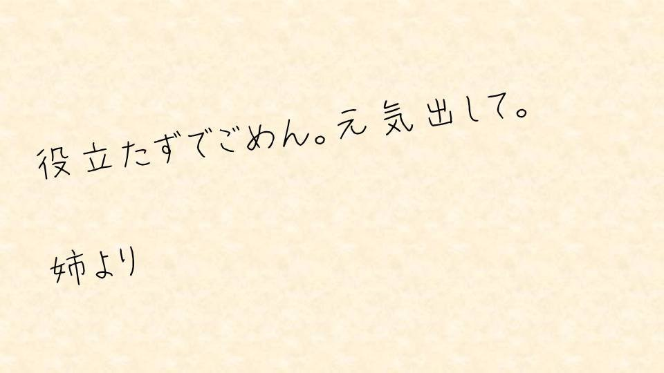
“Sorry for being useless. Cheer up. From your big sister”
It was a message handwritten on paper.
It was a message handwritten on paper.
Little by little my vision blurred, and the message warped.
Tears welled up in my eyes.
Tears welled up in my eyes.
Then I burrowed under the futon, head and all.
Kana-chan had it right. Sis had been frustrated that she couldn't help.
And she'd been really worried about me.
Above all, I was happy that she'd called herself my big sister.
Kana-chan had it right. Sis had been frustrated that she couldn't help.
And she'd been really worried about me.
Above all, I was happy that she'd called herself my big sister.
Little by little, the events in the dream lost their sense of reality.
That really was a dream.
That really was a dream.
―Eventually my tears dried up, and I poked my head out of the futon.
"Good for you, Goto."
I'd left the phone outside the futon, so Senpai and the others must have seen that picture too.
"Thank you..."
I'd left the phone outside the futon, so Senpai and the others must have seen that picture too.
"Thank you..."
"Save your thanks for Kana, right?"
"Heh heh! The bond of the Gotos Phantom Thieves is mighty strong indeed!"
"Kana-chan... thank you..."
"Ha! Nothing to it!"
I had been saved by this weird kid I'd known for less than a day.
She'd untangled years of bad feelings in just an instant.
Honestly... what a weird kid...
"Kana-chan... thank you..."
"Ha! Nothing to it!"
I had been saved by this weird kid I'd known for less than a day.
She'd untangled years of bad feelings in just an instant.
Honestly... what a weird kid...
"Goto, isn't the bath about ready by now?
Go wash off the sweat and the tears and the scary dreams, all of it!"
"Yes!"
Hearing that voice, I came out of the futon and stood up.
My body was so light there was no comparing it to before.
"Yes!"
Hearing that voice, I came out of the futon and stood up.
My body was so light there was no comparing it to before.
"Well then, I'm off for a quick bath!"
Senpai―I flashed her a big grin and put my hand on the door.
Senpai―I flashed her a big grin and put my hand on the door.
"H-hey! Put clothes on! At least put underwear on!"

"Haah, sleepy... think I'll sleep in a futon..."
"............ ............"
"............ ............"
"............
............
Fwuh?"
Frozen on the other side of the door I'd opened: Kotaro-san.
Genius or not, in a situation this new to me, not a single plan came to mind.
For once, I regretted having lost my danger sense.
Frozen on the other side of the door I'd opened: Kotaro-san.
Genius or not, in a situation this new to me, not a single plan came to mind.
For once, I regretted having lost my danger sense.
"Wow! Papa is coming face-to-face with a busty loli!"
"Wh-wh-wh-wh-wha, isn't this way too bad!?"
"Wh-wh-wh-wh-wha, isn't this way too bad!?"
"Aaaagh!!"
I hurled whatever I could get my hands on in the room at Kotaro-san.
"H-hey, wait! It's a misunderstanding! Or not a misunderstanding, an accident!"
"Eek! Eek! Lecher! Pervert! Groper! Sex offender! Lolicon! Little-girl fetishist! Pedophilia! Hikaru Genji（the hero of The Tale of Genji）! Lewis Carroll（the author of Alice in Wonderland）!"
"H-hey, wait! It's a misunderstanding! Or not a misunderstanding, an accident!"
"Eek! Eek! Lecher! Pervert! Groper! Sex offender! Lolicon! Little-girl fetishist! Pedophilia! Hikaru Genji（the hero of The Tale of Genji）! Lewis Carroll（the author of Alice in Wonderland）!"
"Good to see Goto's got her energy back...
though if you're gonna throw stuff, at least cover what needs covering first..."
"Damn... they're going boing-boing..."
"Damn... they're going boing-boing..."
It happened in just an instant.
Kogori-senpai's head, as if carried off by a strong wind, disappeared.
Kogori-senpai's head, as if carried off by a strong wind, disappeared.
At the same time, something like blood stuck to me in a thick smear.
Something like blood, or rather, real blood?
Did the person from before do it?
No way... they were at least 100 meters away; there's no way they could have gotten close in that one instant.
Something like blood, or rather, real blood?
Did the person from before do it?
No way... they were at least 100 meters away; there's no way they could have gotten close in that one instant.
Run...!
It's dangerous here...! Danger is closing in!
The cherry trees' warning...! So that really should never have been used! Whoever takes the power dies in April
It's the cherry trees' curse Get away from the cherry trees! No, that was an accident! I won't hand Haruka over Longed for a family No escaping the shinigami
The witch's curse I killed six people
No, the ones who killed were us
What is this... these voices...
Wearing the Noh mask This is the custom of the Arata settlement Drugs...?
It's all right just to dream, isn't it? Who saved me? I don't believe that...
The witch summons the shinigami Save Haruka
Akane... Seeking beauty even in the look of a corpse
Kogori-senpai's... same as her intuition...?
Why do I have the same intuition as Kogori-senpai, too...?
Did you think I died?
Did you think that I had died?
Did you think that I had died?
That was you jumping to conclusions.
I didn't die.
Even when I was attacked by Mifuyu Niimura, with her power that could even be called supernatural, I didn't get a single scratch.
I didn't die.
Even when I was attacked by Mifuyu Niimura, with her power that could even be called supernatural, I didn't get a single scratch.
Because―
Read ✓ Next: The Eternal Tower →